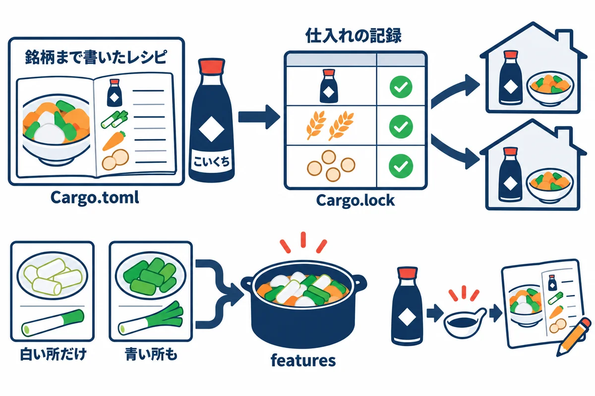
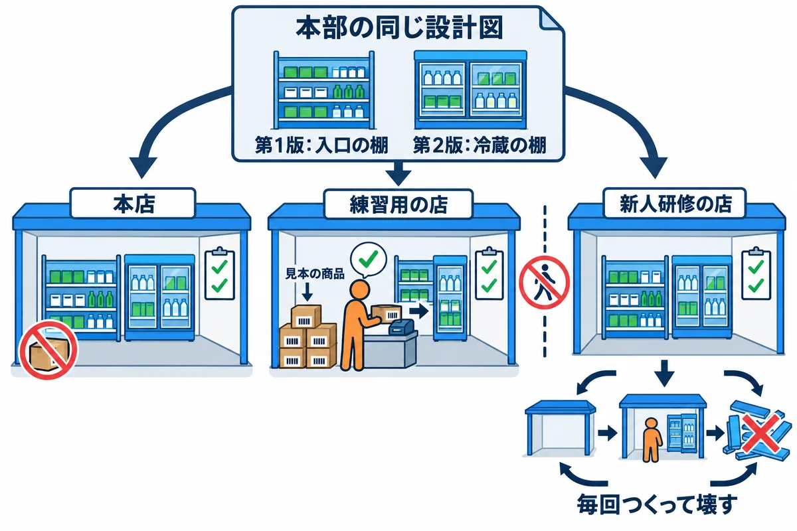
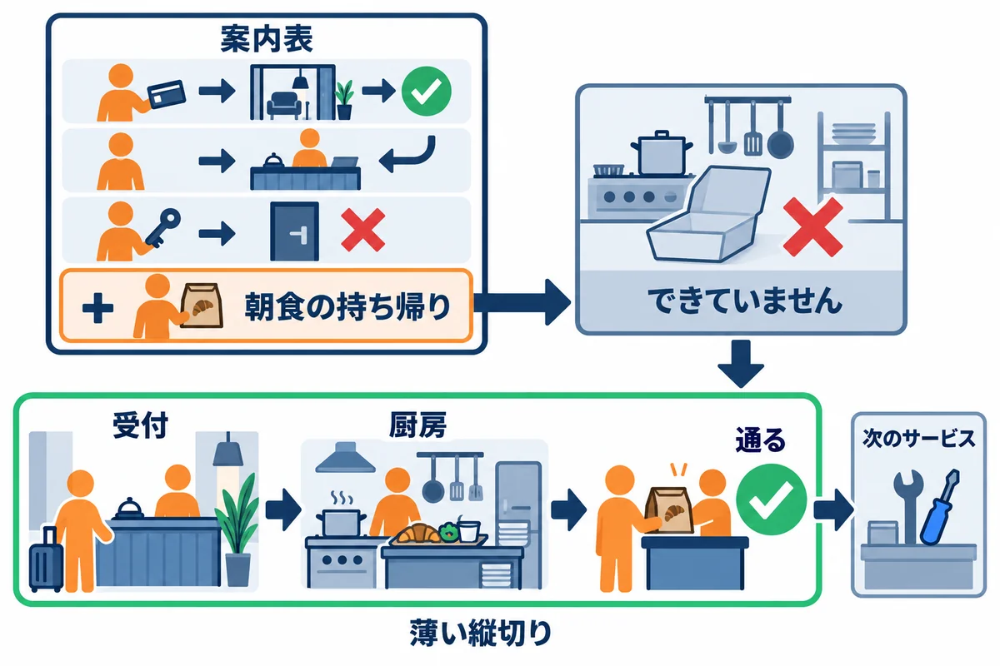

VOLUME 09 / RUST BACKEND MASTERY
RustNote — 要件設計・構成・セットアップ
要件・画面・データの約束から、骨組み・起動・ヘルスチェックまでを1つの設計にそろえる
色の付いた枠のコードの、右上の「コピー」ボタンを押してください。コピーしたら、ブラウザーの「戻る」で PDF に戻れます。
第8巻までで、RustNote を作るための部品はそろいました。Rust の文法と所有権（第2巻・第3巻）、型と trait とエラーの設計（第4巻）、async（第5巻）、Web フレームワークの Topcoat（第6巻）、Turso・libSQL と SQL（第7巻）、ログインとセッション（第8巻）です。
それでも、部品がそろっただけでは、アプリはできあがりません。いきなりコードを書き始めると、作っている途中や公開した後に、次のような事故が起きます。
main.rs に何でも書き足していった結果、どこを直せばよいのか分からなくなるこの巻のテーマは、こうした事故を、コードを書く前の設計と、最初に作る骨組みで防ぐことです。何を作るかを「確かめられる言葉」で決め（要件・受入条件）、画面とデータの約束を決め、フォルダ構成・依存・設定・起動の順番・ルートの一覧・見た目の決まり・ヘルスチェックまでを、1つの設計としてそろえます。
この巻では、教材のフォルダに入っている完成した RustNote のソース（Rust/rustnote/）をお手本として手元にコピーし、「設計で決めたことが、コードのどこにどう現れているか」を、テストを動かしながら確かめていきます。完成形を先に見て、決めごとの理由を1つずつ確かめる、という進め方です。画面の処理を1つずつ作り込むのは、次の第10巻です。
この巻を終えると、次のことができるようになります。
cargo test で確かめられるsrc/ を役割ごとのモジュールに分け、依存の向き（どのモジュールがどれを使ってよいか）を説明できるCargo.toml で依存の版を固定し、features と Cargo.lock の役割を説明できるConfig）を起動時に1回だけ読み、DB の初期化とマイグレーションを済ませてから、共有する状態（AppState）をルーターに渡す、という起動の順番を説明できる| 単元 | テーマ | ひとことで言うと |
|---|---|---|
| UNIT 01 | 要件・ユーザーストーリー・受入条件 | 「何ができたら完成か」を、確かめられる言葉で決める |
| UNIT 02 | 画面遷移・情報設計・ワイヤーフレーム | 画面と URL を一覧にし、画面ごとの目的と状態を決める |
| UNIT 03 | ドメインモデル・スキーマ・不変条件 | データの決まりを、型・アプリ・DB の3か所でそろえる |
| UNIT 04 | プロジェクト構成と依存の向き | src/ を役割で分け、どこがどこを使ってよいかを決める |
| UNIT 05 | Cargo.toml・版の固定・features | 使うクレートと版を決めて、誰の PC でも同じ物を作る |
| UNIT 06 | Config・AppState・DB の初期化 | 設定を1回だけ読み、準備を済ませてから待ち受ける |
| UNIT 07 | migration・seed・テスト用の DB | 表の作り方と見本のデータを、本番とテストで混ぜずに用意する |
| UNIT 08 | ルートの一覧と実装の順番 | URL ごとの約束を表にし、薄く縦に切って順に作る |
| UNIT 09 | デザインの決まり・アセット・アクセシビリティ | 少ない決まりで見た目をそろえ、誰でも使える画面にする |
| UNIT 10 | health・初回起動・診断 | 動いているかを外から確かめ、つまずきの原因を切り分ける |
設計というと、分厚い書類を思い浮かべるかもしれません。この巻では、書類だけで終わらせません。決めたことは、必ずコードかテストのどこかに形として残します。そうすれば、あとで「決めたとおりにできているか」を、いつでも機械で確かめられるからです。
次の図は、この巻で決めることと、完成した RustNote でそれが置かれているファイルの対応です。
ヒント: RustNote の
README.mdには、できること・URL の一覧・エラーのときのステータスコード・フォルダの構成が、まとめて書いてあります。この巻を読み進める間、ときどき開いて見比べると、「設計で決めたこと」と「できあがったもの」が対応していることがよく分かります。
cargo new と cargo run と cargo test ができること。struct / enum / match / Option / Result / ? / Vec / String。特に、日本語の文字数を chars().count() で数えること（第2巻 UNIT 05）。async fn と .await、#[tokio::main]（第5巻 UNIT 01）。この巻のテストは #[tokio::test] を使います。#[page] と #[page(POST)]、view!、フォームの受け取り、303 のリダイレクト（see_other）。CREATE TABLE と制約（第7巻 UNIT 01）、持ち主の条件を付けた SQL（第7巻 UNIT 03）、マイグレーション（第7巻 UNIT 06）。注意: この巻は、ここまでの巻の「まとめ役」です。どこかの巻の内容があいまいでも、読み進めてかまいません。本文で「第7巻 UNIT 01」のように元の場所を示すので、必要になったところで読み返してください。
各単元では、次の順番を1サイクルとして進めてください。設計の単元は、読んで「なるほど」と思うだけで終わりがちです。決めたことを、テストを動かして確かめるところまでを1セットにします。
README.md に書かれている次の3つのコマンドを実行する習慣をつけます。# コードの見た目が Rust の標準の形になっているか確かめる（直すときは --check を外す）
cargo fmt --check
# よくある書き間違い・もったいない書き方を、警告ではなくエラーとして止める
cargo clippy --all-targets -- -D warnings
# テストを全部実行する
cargo test
ヒント: この巻の実行結果には、かかった時間（
3.05sや(445.6532ms)など）や、スレッドの番号（(68436)など）が出てきます。時間はパソコンの速さで変わり、スレッドの番号は実行するたびに変わります。テストの表示の順番も、実行するたびに入れ替わることがあります。
この巻のコードは、すべて次の環境で実際にコンパイル・実行し、実行結果とエラーメッセージは実際の出力をそのまま載せています（パソコンのユーザー名などを含む部分だけ ... に置き換えています）。
| 項目 | 版・内容 |
|---|---|
| OS | Windows 11（ARM64）。コマンドは PowerShell を主に、WSL / macOS / Linux は補足で示します |
| Rust | 1.99 以上（本書シリーズの基準。Topcoat 0.11 が 1.99 以上を求めます）。動作確認は rustc 1.99.1 / cargo 1.99.1（aarch64-pc-windows-msvc） |
| edition | 2024 |
| RustNote | 教材の Rust/rustnote/（rustnote 0.1.0）。直接使うクレートの版は、すべて Cargo.toml で = を付けて固定してある |
| topcoat | 0.11.0（Web フレームワーク） |
| libsql | 0.10.0（Turso / libSQL のクライアント。ARM64 版の Windows では、ビルドに clang が必要） |
| tokio | 1.54.1（rt-multi-thread と macros の機能だけ） |
| argon2 / thiserror / anyhow | 0.6.0 / 2.0.21 / 1.0.104 |
| async-trait / serde / dotenvy | 0.1.92 / 1.0.229 / 0.15.7 |
| tempfile | 3.27.0（テスト用。テストごとに使い捨ての一時フォルダを作る） |
| topcoat-cli | 0.11.0（topcoat dev などのコマンド。アプリをブラウザで動かす単元で使います。UNIT 01〜04 では使いません） |
UNIT 01〜04 では、新しいクレートを足しません。RustNote にもともと入っているクレートだけで、テストと小さな確かめ用のプログラムを書きます。
この巻では、教材の Rust/rustnote/ を作業用のフォルダにコピーして使います。お手本そのものを書き換えると、あとで「元はどうだったか」が分からなくなるからです。コピーしたほうには、この巻の確かめ用のテストやプログラムを足していきます。
PowerShell で作業用のフォルダ（どこでもかまいません）に移動し、次のように実行します。"教材のフォルダ\Rust\rustnote" の部分は、自分の PC で教材を置いた場所に読み替えてください（この PDF が入っている pdf フォルダの1つ上が、Rust フォルダです）。
# 教材の rustnote フォルダを、中身ごと（-Recurse）作業用のフォルダへコピーする
Copy-Item -Recurse "教材のフォルダ\Rust\rustnote" .\rustnote
cd rustnote
# このフォルダで使われる Rust の版を確かめる
rustup show active-toolchain
1.99.1-aarch64-pc-windows-msvc (overridden by '...\rustnote\rust-toolchain.toml')
rust-toolchain.toml というファイルがあり、中に channel = "1.99.1" と書いてあります。このフォルダの中で cargo を実行すると、PC の既定の版に関係なく、Rust 1.99.1 が使われます。overridden by ...（…で上書きされています）の表示が、そのことを示しています。rustup toolchain install 1.99.1 --profile minimal --component rustfmt,clippy
注意: ARM64 版の Windows では、RustNote をビルドするのに LLVM（clang） が必要です。libsql が使う暗号のライブラリ（
ring）を、clang でコンパイルするためです。入っていないと、ビルドの途中で次のように止まります（長い出力から、大事な行だけを抜き出しています）。
warning: ring@0.17.14: Compiler family detection failed due to error: ToolNotFound: failed to find tool "clang": program not found (see https://docs.rs/cc/latest/cc/#compile-time-requirements for help)
error: failed to run custom build command for `ring v0.17.14`
error occurred in cc-rs: failed to find tool "clang": program not found (see https://docs.rs/cc/latest/cc/#compile-time-requirements for help)
failed to find tool "clang" は「clang という道具が見つかりません」という意味です。RustNote の README.md のとおり、winget install LLVM.LLVM で LLVM を入れ、新しく開いた PowerShell で clang --version が動くこと（C:\Program Files\LLVM\bin が PATH にあること）を確かめてから、もう一度ビルドします。準備ができたら、コピーしたフォルダで、テストを全部実行してみましょう。
cargo test
最初の1回は、RustNote が使うクレート（全部で約290個）をコンパイルするので、時間がかかります（この PC では約1分でした）。次の出力は、最後の部分から、テストの区切りと結果の行を抜き出したものです。
Compiling rustnote v0.1.0 (...\rustnote)
Finished `test` profile [unoptimized + debuginfo] target(s) in 1m 11s
Running unittests src\lib.rs (target\debug\deps\rustnote-5cafc6c87c537344.exe)
test result: ok. 19 passed; 0 failed; 0 ignored; 0 measured; 0 filtered out; finished in 0.00s
Running unittests src\main.rs (target\debug\deps\rustnote-f46d7aa1268a13dc.exe)
test result: ok. 0 passed; 0 failed; 0 ignored; 0 measured; 0 filtered out; finished in 0.00s
Running tests\http.rs (target\debug\deps\http-9c37f549b35c0170.exe)
test result: ok. 14 passed; 0 failed; 0 ignored; 0 measured; 0 filtered out; finished in 2.77s
Running tests\repository.rs (target\debug\deps\repository-411ae9b50fa8c3de.exe)
test result: ok. 8 passed; 0 failed; 0 ignored; 0 measured; 0 filtered out; finished in 0.20s
Doc-tests rustnote
test result: ok. 0 passed; 0 failed; 0 ignored; 0 measured; 0 filtered out; finished in 0.00s
Running ... の行が、テストのまとまり（テスト用の実行ファイル）の区切りです。RustNote のテストは、src/ の中のユニットテスト（19件）、tests/http.rs（HTTP のテスト 14件）、tests/repository.rs（DB の読み書きのテスト 8件）の、合わせて 41件です。ok なら、コピーは正しくできています。クレートをまだダウンロードしていない PC では、最初にダウンロードの表示も加わります。rustnote.db（アプリを起動したときに作られる DB のファイル）には触りません。コピーした rustnote フォルダに、この巻では次のファイルを足していきます。RustNote の src/ の中身は変えません。
| 置く場所 | 中身 | 実行のしかた |
|---|---|---|
tests/*.rs |
受入条件・画面の流れ・依存の向きを確かめるテスト（UNIT 01・02・04） | cargo test --test ファイル名 |
examples/*.rs |
ドメインの型や DB の制約を確かめ、モジュールの依存を一覧にする小さなプログラム（UNIT 03・04） | cargo run -q --example ファイル名 |
tests/ に置いた .rs ファイルは、1つずつが別のテストのまとまりになります。cargo test --test acceptance と書くと、tests/acceptance.rs のテストだけを実行します。examples/ に置いた .rs ファイルは、1つずつが別の小さなプログラムになり、RustNote の部品（rustnote::domain など）をそのまま使えます。-q（quiet：静かに）を付けると、Compiling ... のような Cargo の表示が消えて、プログラムが表示した内容だけが残ります。println! した内容は、ふだんは隠されます（失敗したテストの分だけ表示されます）。成功したテストでも表示させたいときは、cargo test --test screens -- --nocapture のように、-- の後ろに --nocapture を付けます。-- より前は Cargo への指定、後ろはテストの実行ファイルへの指定です。ヒント: 練習で足したファイルも、
cargo testを実行すると一緒にコンパイルされます。この巻の「よくあるエラー」の節では、わざとコンパイルエラーになるファイルを作ります。確かめ終わったら、そのファイルは必ず消しておきましょう。残しておくと、ほかのテストも実行できなくなります。
cargo test で確かめられる。テストが失敗したとき、間違っているのが「コード」なのか「受入条件」なのかを判断できる家を建てるときのことを考えます。施主（家を頼む人）は、設計士にこう言いました。
「明るいリビングにしてください」
この一言だけで家を建て始めると、引き渡しの日にもめます。施主の思う「明るい」と、大工さんの思う「明るい」は違うからです。そこで設計士は、要望を確かめられる条件に書き直します。「リビングの南側に、幅 2m 以上の窓を2つ付ける」。こう書いてあれば、引き渡しの前に、巻き尺で測って「できている」「できていない」を誰でも判定できます。
さらに設計士は、「この家にはプールは付けない」のように、作らないものも書いておきます。途中で「ついでにプールも」と言われたときに、話し合いのきっかけになるからです。「地震に強いこと（耐震等級3）」のように、間取りとは別の性質の約束も書きます。
ソフトウェアでも同じことをします。
| 家づくり | ソフトウェア |
|---|---|
| 施主の要望（「明るいリビング」） | ユーザーストーリー（「利用者として、ノートを書きたい」） |
| 設計士が書いた、測れる条件（「幅 2m 以上の窓」） | 受入条件（「タイトルが空なら 400 を返し、入力した本文は消さない」） |
| 引き渡し前の検査表と、巻き尺での検査 | テストと cargo test |
| 「プールは付けない」 | スコープの外（この版では作らないこと） |
| 「耐震等級3」 | 非機能要件（安全さ・速さ・量の上限など、機能以外の約束） |
| 要望・条件・作らないもの、の全部 | 要件 |
用語: 要件（ようけん：作るものが満たすべきことの全部。機能・機能以外の約束・作らないことを含む）
用語: ユーザーストーリー（user story：利用者の立場から「誰として・何をしたい・なぜ」を1文で書いたもの。例:「利用者として、思いついたことをすぐ書き留めたい。忘れないように」）
用語: 受入条件（うけいれじょうけん。acceptance criteria：ストーリーが「できた」と言える条件。「前提・操作・結果」の形で、誰が確かめても同じ答えになるように書く）
用語: 非機能要件（ひきのうようけん：何ができるか以外の約束。安全さ・速さ・量の上限・動いているかを確かめる方法など）
要件は、上から順に細かくしていきます。「誰のためのアプリか」を決め、その人がしたいことをストーリーにし、ストーリーごとに受入条件を書き、受入条件をテストにします。
/login へ移る」「400 で『タイトルを入力してください』と出る」のように、目で見える結果で書きます。1つのストーリーに対して、受入条件は1つでは足りません。うまくいく場合だけを書くと、「空のタイトルを送ったらどうなるか」「他人のノートを開いたらどうなるか」が決まらないまま作ることになります。次の図のように、4つの枠で考えると、抜けが見つかりやすくなります。
テストを書く前に、RustNote の要件を書き出します。これが、この単元で作る「設計書」です。中身は、完成した RustNote のソース（README.md・src/・tests/）を読んで、実際の動きに合わせてあります。
ペルソナ（誰のためのアプリか）: 授業や仕事で思いついたことを、自宅の PC でも学校の PC でも、ブラウザから書き留めたい人。自分のメモは自分だけが見られればよく、ほかの人と共有はしない。
用語: ペルソナ（persona：アプリを使う人を、具体的な1人の人物として思い描いたもの。「誰のために作るか」がぶれないようにする）
ユーザーストーリー:
| 番号 | ストーリー（誰として・何をしたい・なぜ） |
|---|---|
| US-1 | はじめての利用者として、メールアドレスとパスワードで登録したい。自分専用のノートを使い始めるために |
| US-2 | 利用者として、ログインとログアウトをしたい。共用の PC でも、自分のノートをほかの人に見られないように |
| US-3 | 利用者として、タイトルと本文のノートを書きたい。思いついたことを忘れないように |
| US-4 | 利用者として、自分のノートを新しい順に一覧し、キーワードで探したい。前に書いたことをすぐ見つけるために |
| US-5 | 利用者として、ノートを直したい。内容が変わったときに書き換えるために |
| US-6 | 利用者として、ノートを完了にしたり消したりしたい。終わったことと、要らなくなったことを片付けるために |
| US-7 | 運用する人として、アプリと DB が動いているかを外から確かめたい。止まったことにすぐ気づくために |
受入条件（US-3「ノートを書く」と、全部の画面に共通するもの）:
| 番号 | 前提 | 操作 | 結果 |
|---|---|---|---|
| AC-01 | ログインしている | タイトル「牛乳を買う」で作成を送る | 303 でそのノートの詳細（/notes/{id}）へ移る。次の画面で「ノートを作成しました」が1回だけ出る |
| AC-02 | ログインしていない | ノートの一覧・詳細・編集を開く／作成・編集・完了の切り替え・削除を送る | どれも 303 でログイン画面（/login）へ移り、「ログインしてください」が出る |
| AC-03 | ログインしている | タイトルを空、または空白だけにして送る | 400 で「タイトルを入力してください」と出る。入力した本文は消えない |
| AC-04 | ログインしている | 81 文字のタイトルを送る | 400 で「現在81文字」と出る。80 文字（日本語でも）なら作れる |
| AC-05 | alice のノートがある | bob が、そのノートを開く・編集・完了の切り替え・削除をする | どれも 404。alice のノートは変わらない |
| AC-06 | ログインしている | /notes/abc・/notes/0・/notes/999 のような、ありえない・存在しない ID を開く |
404 で「ページが見つかりません」と出る |
| AC-07 | ログインしている | ほかのサイトのフォームから、作成が送られてくる | 403 で断る |
| AC-08 | ログインしている | ログイン画面・登録画面を開く | 303 でノートの一覧（/notes）へ移る |
| AC-09 | DB が故障している | どの画面でも | 500 で「時間をおいてもう一度お試しください」とだけ出す。原因はサーバーのログに書く |
非機能要件（機能以外の約束）:
| 種類 | 約束 | RustNote で守っている場所 |
|---|---|---|
| 安全 | パスワードはそのまま保存せず、Argon2id のハッシュだけを保存する | src/auth.rs の hash_password |
| 安全 | ログインの失敗は、メールが登録されているかどうかで答えを変えない（どちらも 401 と同じ文） | src/routes/login.rs |
| 安全 | 入力された HTML は、文字として表示する（実行されない） | view! の自動エスケープ |
| 安全 | 500 のとき、画面には原因の詳細を出さない | src/error.rs の public_message |
| 量の上限 | 一覧は1ページ 20 件。タイトル 80 文字・本文 10,000 文字・パスワード 8〜128 文字・検索語 100 文字まで | src/domain.rs の定数 |
| 運用 | GET /health で、DB まで届くかを確かめられる（届けば 200、届かなければ 503） |
src/routes/health.rs |
スコープの外（この版では作らないこと）: パスワードを忘れたときの再設定、メールアドレスの確認（確認メールの送信）、ノートの共有や公開、タグや画像の添付、退会の画面、ログインの試行回数の制限。どれも、RustNote のソースにはありません。
ヒント: 「作らないこと」を書いておくのは、「作り忘れ」と「わざと作らない」を区別するためです。たとえば「ログインの試行回数の制限」は、本番で公開するなら考えたい機能です。書いてあれば、後で「次の版で足すかどうか」を話し合えます。
この表ができたら、受入条件を1つずつテストにします。最初は、いちばん短い AC-08 です。
▼ このコードがやること（先に日本語で）: 「ログインしている人が、ログイン画面と登録画面を開くと、303 でノートの一覧へ移る」という受入条件 AC-08 を、テストにします。テストの名前を
ac08_...にして、受入条件の番号と1対1で対応させます。前提・操作・結果は、コメントにそのまま書き写します。
//! 受入条件（AC）を、そのままテストにしたもの。
//! テストの名前は「ac番号_条件の要約」にそろえ、受入条件の表と1対1で対応させる。
//! 実行: cargo test --test acceptance
mod common;
use common::{location, test_app};
use topcoat::router::StatusCode;
const PASSWORD: &str = "correct horse battery";
// AC-08
// 前提: ログインしている
// 操作: ログイン画面・登録画面を開く
// 結果: 303 でノート一覧（/notes）へ移動する
#[tokio::test]
async fn ac08_logged_in_user_skips_login_and_signup() {
let app = test_app().await;
let alice = app.sign_up("alice@example.com", PASSWORD).await;
for path in ["/login", "/signup"] {
let response = app.get(path, Some(&alice)).await;
assert_eq!(response.status(), StatusCode::SEE_OTHER, "{path}");
assert_eq!(location(&response), "/notes", "{path}");
}
}
コピーした rustnote フォルダの tests/acceptance.rs として保存して実行します。
cargo test --test acceptance
▼ 実行結果
Compiling rustnote v0.1.0 (...\rustnote)
Finished `test` profile [unoptimized + debuginfo] target(s) in 3.05s
Running tests\acceptance.rs (target\debug\deps\acceptance-0f2d784d56c401b2.exe)
running 1 test
test ac08_logged_in_user_skips_login_and_signup ... ok
test result: ok. 1 passed; 0 failed; 0 ignored; 0 measured; 0 filtered out; finished in 0.48s
ok が出ました。完成した RustNote は、AC-08 を満たしています。
async fn ac08_logged_in_user_skips_login_and_signup() {
ac08_ にしておくと、テストの結果の test ac08_... ok を見ただけで、「受入条件の表の AC-08 が守られている」と分かります。logged_in_user_skips_login_and_signup（ログイン中の人は、ログインと登録を飛ばす）は、受入条件の要約です。Rust の関数名なので、英語の小文字と _ で書きます。// AC-08
// 前提: ログインしている
// 操作: ログイン画面・登録画面を開く
// 結果: 303 でノート一覧（/notes）へ移動する
sign_up（登録すると、ログインした状態になる）、操作は app.get(path, ...)、結果は2つの assert_eq! です。mod common;
use common::{location, test_app};
tests/common/mod.rs は、完成した RustNote に最初から入っている、テスト用の道具箱です。mod common; と書くと、このファイルから使えるようになります。test_app() は、一時フォルダに空の DB を作ってマイグレーションを適用し、RustNote のルーター（URL ごとの処理の一覧）を組み立てます。テストごとに別の DB なので、ほかのテストの影響を受けません。app.sign_up(メール, パスワード) は、POST /signup を送って登録し、返ってきたログイン用のクッキー（__Host-session=...）を文字列で返します。app.get(URL, クッキー) は GET のリクエストを送ります。location(&response) は、リダイレクト先（Location ヘッダー）を取り出します。Router::handle に、リクエストを直接渡しています。ポートを開いてサーバーを起動しないので、速く、何個のテストを同時に動かしてもぶつかりません。#[tokio::test]
async fn ac08_logged_in_user_skips_login_and_signup() {
assert_eq!(response.status(), StatusCode::SEE_OTHER, "{path}");
async なので、テストの関数も async fn にして、#[tokio::test] を付けます。#[tokio::main] のテスト版で、テストの外側に Tokio のランタイムを用意してくれます（第5巻 UNIT 01・02）。StatusCode::SEE_OTHER は 303 です。数字の 303 と書くより、意味が名前で分かります。assert_eq! の3つ目の "{path}" は、失敗したときに表示する言葉です。ループの中で2つの URL を試しているので、どちらで失敗したのかが分かるように、URL を表示させています。受入条件を全部、新しいテストとして書く必要はありません。RustNote には、すでに tests/http.rs に 14 個の HTTP のテストがあります。まず、今あるテストと受入条件の表を突き合わせて、足りないところだけを足します。
▼ このコードがやること（先に日本語で）:
tests/http.rsのテストを実行せずに、名前の一覧だけを表示します。その一覧と受入条件の表を見比べて、どの受入条件がどのテストで確かめられているか、確かめられていないのはどれかを調べます。
cargo test --test http -- --list
▼ 実行結果
Finished `test` profile [unoptimized + debuginfo] target(s) in 0.33s
Running tests\http.rs (target\debug\deps\http-9c37f549b35c0170.exe)
create_note_follows_prg_and_escapes_html: test
cross_site_post_is_403: test
edit_with_stale_version_is_409: test
empty_title_is_400: test
flash_message_is_shown_once: test
health_returns_ok_json: test
invalid_ids_and_unknown_urls_are_404: test
list_searches_and_paginates: test
login_and_logout: test
notes_require_login: test
other_users_notes_are_404: test
signup_validates_input_and_rejects_duplicates: test
toggle_and_delete_redirect: test
top_page_shows_links_when_logged_out: test
14 tests, 0 benchmarks
--list は、テストを実行せずに名前の一覧だけを出す指定です。-- の後ろに書くので、Cargo ではなく、テストの実行ファイルへの指定です。最後の 14 tests が数です。: test は「ふつうのテスト」という印です（ほかに、速さを測る benchmark があります。0 benchmarks がその数です）。テストの名前と中身（tests/http.rs）を読んで、受入条件の表と突き合わせると、次のようになります。
| 受入条件 | 確かめているテスト | 足りないところ |
|---|---|---|
| AC-01 作成すると詳細へ・お知らせは1回 | create_note_follows_prg_and_escapes_html・flash_message_is_shown_once |
なし |
| AC-02 未ログインはログイン画面へ | notes_require_login |
一覧（GET）と作成（POST）しか試していない。詳細・編集・完了の切り替え・削除が無い |
| AC-03 空・空白だけは 400 | empty_title_is_400 |
なし（空白3つの title=+++ で試している） |
| AC-04 81 文字は 400 | empty_title_is_400 と、ユニットテストの note_title_counts_characters_not_bytes |
なし |
| AC-05 他人のノートは 404 | other_users_notes_are_404 |
なし |
| AC-06 ありえない ID は 404 | invalid_ids_and_unknown_urls_are_404 |
なし |
| AC-07 ほかのサイトからは 403 | cross_site_post_is_403 |
なし |
| AC-08 ログイン中はログイン画面を飛ばす | （無し） | テストが無い（例1-1で足した） |
| AC-09 DB の故障は 500 | ユニットテストの status_codes_and_public_messages |
HTTP の形では試していない |
notes_require_login は /notes の GET と POST だけを試していて、/notes/1 や /notes/1/edit などは試していません。src/error.rs のユニットテストで確かめています。HTTP のテストで DB をわざと壊すのは手間がかかるので、この巻では、この形のままにします。どこまでをテストで確かめるかも、設計で決めることの1つです。▼ このコードがやること（先に日本語で）: alice が書いたノートを1件用意してから、ログインしていない状態で、詳細と編集の画面を開き（GET）、完了の切り替えと削除を送ります（POST）。どれも 303 でログイン画面へ移ることを確かめます。例1-1のファイルに、AC-02 のテストを足した全体です。
//! 受入条件（AC）を、そのままテストにしたもの。
//! テストの名前は「ac番号_条件の要約」にそろえ、受入条件の表と1対1で対応させる。
//! 実行: cargo test --test acceptance
mod common;
use common::{location, test_app};
use topcoat::router::StatusCode;
const PASSWORD: &str = "correct horse battery";
// AC-02
// 前提: ログインしていない（alice のノートが1件ある）
// 操作: ノートの詳細・編集を開く／完了の切り替え・削除を送る
// 結果: どれも 303 でログイン画面（/login）へ移動する
#[tokio::test]
async fn ac02_logged_out_user_is_sent_to_login() {
let app = test_app().await;
let alice = app.sign_up("alice@example.com", PASSWORD).await;
let url = app.create_note(&alice, "alice のノート", "").await;
// 画面を開く（GET）
for path in [url.clone(), format!("{url}/edit")] {
let response = app.get(&path, None).await;
assert_eq!(response.status(), StatusCode::SEE_OTHER, "GET {path}");
assert_eq!(location(&response), "/login", "GET {path}");
}
// 操作を送る（POST）
for path in [format!("{url}/toggle"), format!("{url}/delete")] {
let response = app.post_form(&path, "", None).await;
assert_eq!(response.status(), StatusCode::SEE_OTHER, "POST {path}");
assert_eq!(location(&response), "/login", "POST {path}");
}
}
// AC-08
// 前提: ログインしている
// 操作: ログイン画面・登録画面を開く
// 結果: 303 でノート一覧（/notes）へ移動する
#[tokio::test]
async fn ac08_logged_in_user_skips_login_and_signup() {
let app = test_app().await;
let alice = app.sign_up("alice@example.com", PASSWORD).await;
for path in ["/login", "/signup"] {
let response = app.get(path, Some(&alice)).await;
assert_eq!(response.status(), StatusCode::SEE_OTHER, "{path}");
assert_eq!(location(&response), "/notes", "{path}");
}
}
tests/acceptance.rs をこの内容に書き換えて、もう一度実行します。
cargo test --test acceptance
▼ 実行結果
Compiling rustnote v0.1.0 (...\rustnote)
Finished `test` profile [unoptimized + debuginfo] target(s) in 3.25s
Running tests\acceptance.rs (target\debug\deps\acceptance-0f2d784d56c401b2.exe)
running 2 tests
test ac08_logged_in_user_skips_login_and_signup ... ok
test ac02_logged_out_user_is_sent_to_login ... ok
test result: ok. 2 passed; 0 failed; 0 ignored; 0 measured; 0 filtered out; finished in 0.49s
2つとも ok です。テストは同時に動くので、表示の順番はファイルに書いた順と違うことがあります。
let alice = app.sign_up("alice@example.com", PASSWORD).await;
let url = app.create_note(&alice, "alice のノート", "").await;
/notes/1 を開く」を試すには、まず /notes/1 が本当にある必要があります。存在しないノートなら、ログインしていてもいなくても 404 になるかもしれず、ログインの確認を試したことになりません。create_note は POST /notes を送り、できたノートの URL（/notes/1）を返します。None を渡します。つまり「誰のクッキーも持っていない人」として、alice のノートの URL を開いています。 for path in [url.clone(), format!("{url}/edit")] {
let response = app.get(&path, None).await;
for path in [format!("{url}/toggle"), format!("{url}/delete")] {
let response = app.post_form(&path, "", None).await;
post_form(URL, フォームの中身, クッキー) は、フォームの POST を送ります。完了の切り替えと削除は、送る項目が無いので、中身は空の "" です。url.clone() は、url を後でもう一度使うためのコピーです。配列の中に url をそのまま入れると、url の持ち主が配列に移ってしまい、次の format!("{url}/edit") で使えなくなるからです（第3巻）。 assert_eq!(location(&response), "/login", "GET {path}");
"GET {path}" や "POST {path}" を入れておくと、失敗したときに GET /notes/1/edit のように表示されます。受入条件を書いた人が、「他人のノートは開けないのだから、403 Forbidden（禁止）だろう」と考えて、AC-05 を次のように書いたとします。例1-3の tests/acceptance.rs の最後に、このテストを足して実行します。
// AC-05（書き間違えた版）
// 前提: alice と bob が登録済みで、alice のノートが1件ある
// 操作: bob が alice のノートの詳細を開く
// 結果: 403 Forbidden になる
#[tokio::test]
async fn ac05_other_users_note_is_forbidden() {
let app = test_app().await;
let alice = app.sign_up("alice@example.com", PASSWORD).await;
let bob = app.sign_up("bob@example.com", PASSWORD).await;
let url = app.create_note(&alice, "alice の秘密", "").await;
let response = app.get(&url, Some(&bob)).await;
assert_eq!(response.status(), StatusCode::FORBIDDEN);
}
Compiling rustnote v0.1.0 (...\rustnote)
Finished `test` profile [unoptimized + debuginfo] target(s) in 2.92s
Running tests\acceptance.rs (target\debug\deps\acceptance-0f2d784d56c401b2.exe)
running 3 tests
test ac08_logged_in_user_skips_login_and_signup ... ok
test ac02_logged_out_user_is_sent_to_login ... ok
test ac05_other_users_note_is_forbidden ... FAILED
failures:
---- ac05_other_users_note_is_forbidden stdout ----
POST /signup -> 303 See Other (394.9415ms)
POST /signup -> 303 See Other (438.6321ms)
POST /notes -> 303 See Other (4.4981ms)
GET /notes/1 -> 404 Not Found (2.862ms)
thread 'ac05_other_users_note_is_forbidden' (68436) panicked at tests\acceptance.rs:64:5:
assertion `left == right` failed
left: 404
right: 403
note: run with `RUST_BACKTRACE=1` environment variable to display a backtrace
failures:
ac05_other_users_note_is_forbidden
test result: FAILED. 2 passed; 1 failed; 0 ignored; 0 measured; 0 filtered out; finished in 0.87s
error: test failed, to rerun pass `--test acceptance`
test result: FAILED. 2 passed; 1 failed で、3つのうち1つが失敗したと分かります。次に failures: の下の ---- ac05_other_users_note_is_forbidden stdout ---- が、失敗したテストの記録です。POST /signup -> 303 See Other (394.9415ms) のような行は、RustNote のアクセスログです（src/routes.rs の access_log が、リクエストごとに1行書きます）。テストが失敗すると、そのテストの間に出た表示がまとめて見られます。最後の GET /notes/1 -> 404 Not Found で、bob の GET が 404 になったことが分かります。panicked at tests\acceptance.rs:64:5 は「64 行目の5文字目で止まった」、assertion left == right failed は「assert_eq! の左と右が違った」という意味です。left: 404 が実際の値（response.status()）、right: 403 が期待した値です。src/routes/notes/id.rs の先頭のコメントに「他人のノートも 404（『ある』こと自体を知らせないため、403 にはしない）」と書いてあります）。403 を返すと、「その番号のノートは存在する。ただ、あなたには見せない」と教えてしまいます。番号を 1, 2, 3… と変えて試せば、どの番号のノートが存在するか、アプリ全体でノートが何件くらいあるかまで分かってしまいます。404 なら、「無い」のか「他人のもの」なのかを区別できません。// AC-05
// 前提: alice と bob が登録済みで、alice のノートが1件ある
// 操作: bob が alice のノートの詳細を開く
// 結果: 404 Not Found になる（ノートが「ある」ことも知らせない）
#[tokio::test]
async fn ac05_other_users_note_is_not_found() {
let app = test_app().await;
let alice = app.sign_up("alice@example.com", PASSWORD).await;
let bob = app.sign_up("bob@example.com", PASSWORD).await;
let url = app.create_note(&alice, "alice の秘密", "").await;
let response = app.get(&url, Some(&bob)).await;
assert_eq!(response.status(), StatusCode::NOT_FOUND);
}
Compiling rustnote v0.1.0 (...\rustnote)
Finished `test` profile [unoptimized + debuginfo] target(s) in 3.10s
Running tests\acceptance.rs (target\debug\deps\acceptance-0f2d784d56c401b2.exe)
running 3 tests
test ac08_logged_in_user_skips_login_and_signup ... ok
test ac02_logged_out_user_is_sent_to_login ... ok
test ac05_other_users_note_is_not_found ... ok
test result: ok. 3 passed; 0 failed; 0 ignored; 0 measured; 0 filtered out; finished in 1.02s
注意: テストが失敗したとき、テストの期待する値を、実際の値に黙って合わせてはいけません。それでは、本当にコードが間違っていたときも、テストを通してしまいます。このエラー1のように、「なぜその値が正しいのか」を受入条件の段階で説明できたときだけ、受入条件とテストを直します。
cargo test --test acceptanse
error: no test target named `acceptanse` in default-run packages
help: a target with a similar name exists: `acceptance`
acceptanse という名前のテストのまとまりはありません」というエラーです。--test の後ろには、tests/ の中のファイル名（.rs を除いたもの）を書きます。help: が「似た名前の acceptance があります」と教えてくれています。cargo test --test acceptance に直します。#[tokio::test] の代わりに、ふつうのテストの #[test] を付けてしまった場合です（tests/e01_test_attr.rs に保存して試します）。
mod common;
use common::{location, test_app};
use topcoat::router::StatusCode;
// #[tokio::test] ではなく #[test] を付けてしまった
#[test]
async fn ac08_logged_in_user_skips_login_and_signup() {
let app = test_app().await;
let alice = app.sign_up("alice@example.com", "correct horse battery").await;
let response = app.get("/login", Some(&alice)).await;
assert_eq!(response.status(), StatusCode::SEE_OTHER);
assert_eq!(location(&response), "/notes");
}
cargo test --test e01_test_attr
Compiling rustnote v0.1.0 (...\rustnote)
error: async functions cannot be used for tests
--> tests\e01_test_attr.rs:8:1
|
8 | async fn ac08_logged_in_user_skips_login_and_signup() {
| ^----
| |
| _`async` because of this
| |
9 | | let app = test_app().await;
10 | | let alice = app.sign_up("alice@example.com", "correct horse battery").await;
11 | | let response = app.get("/login", Some(&alice)).await;
12 | | assert_eq!(response.status(), StatusCode::SEE_OTHER);
13 | | assert_eq!(location(&response), "/notes");
14 | | }
| |_^
error: could not compile `rustnote` (test "e01_test_attr") due to 1 previous error
#[test] は、ふつうの関数を呼ぶだけで、async 関数が返す Future を動かす係（ランタイム）を用意しません（第5巻 UNIT 01）。async because of this の線が、原因の async を指しています。#[test] を #[tokio::test] に直します。確かめ終わったら、tests/e01_test_attr.rs は消しておきます。// mod common; を書き忘れた
use common::{location, test_app};
use topcoat::router::StatusCode;
#[tokio::test]
async fn ac08_logged_in_user_skips_login_and_signup() {
let app = test_app().await;
let alice = app.sign_up("alice@example.com", "correct horse battery").await;
let response = app.get("/login", Some(&alice)).await;
assert_eq!(response.status(), StatusCode::SEE_OTHER);
assert_eq!(location(&response), "/notes");
}
tests/e01_no_mod.rs に保存して、cargo test --test e01_no_mod を実行します。
Compiling rustnote v0.1.0 (...\rustnote)
error[E0432]: unresolved import `common`
--> tests\e01_no_mod.rs:2:5
|
2 | use common::{location, test_app};
| ^^^^^^ use of unresolved module or unlinked crate `common`
|
help: to make use of source file tests\common\mod.rs, use `mod common` in this file to declare the module
|
2 + mod common;
|
For more information about this error, try `rustc --explain E0432`.
error: could not compile `rustnote` (test "e01_no_mod") due to 1 previous error
use で取り込もうとしたものが見つからない」というエラーです。tests/ の中のファイルは、1つずつが別のプログラム（クレート）としてコンパイルされます。tests/common/mod.rs は、mod common; と書いたファイルからしか見えません。help: のとおり、ファイルの先頭に mod common; を足します。確かめ終わったら、tests/e01_no_mod.rs は消しておきます。cargo test では、--test の後ろにもう1つ言葉を書くと、名前にその言葉を含むテストだけを実行できます。ところが、存在しない名前を書いても、エラーになりません。
cargo test --test acceptance ac99
Finished `test` profile [unoptimized + debuginfo] target(s) in 0.41s
Running tests\acceptance.rs (target\debug\deps\acceptance-0f2d784d56c401b2.exe)
running 0 tests
test result: ok. 0 passed; 0 failed; 0 ignored; 0 measured; 3 filtered out; finished in 0.00s
ok ですが、running 0 tests（0件を実行）、3 filtered out（3件を絞り込みで外した）と出ています。名前に ac99 を含むテストが1つも無かったので、何も確かめずに「成功」と表示されました。ok だけでなく、passed の数も見ます。「AC-05 を確かめたはず」なのに 0 passed なら、絞り込みの言葉が間違っています。完成した RustNote の README.md には、「できること」の箇条書きと、「URL の一覧」「エラーのときのステータス」の表があります。これは、この単元で作ったユーザーストーリーと受入条件を、短くまとめたものと同じ中身です。そして、受入条件の多くは、tests/http.rs のテストとして書かれています。
たとえば AC-05（他人のノートは 404）は、tests/http.rs の other_users_notes_are_404 で確かめています。この単元のエラー1で直した版より、ずっと広く試しています。
#[tokio::test]
async fn other_users_notes_are_404() {
let app = test_app().await;
let alice = app.sign_up("alice@example.com", PASSWORD).await;
let bob = app.sign_up("bob@example.com", PASSWORD).await;
let url = app.create_note(&alice, "alice の秘密", "").await;
// bob からは、見る・編集・切り替え・削除のどれも 404
assert_eq!(
app.get(&url, Some(&bob)).await.status(),
StatusCode::NOT_FOUND
);
assert_eq!(
app.get(&format!("{url}/edit"), Some(&bob)).await.status(),
StatusCode::NOT_FOUND
);
let response = app
.post_form(
&format!("{url}/edit"),
"title=x&body=&version=1",
Some(&bob),
)
.await;
assert_eq!(response.status(), StatusCode::NOT_FOUND);
let response = app
.post_form(&format!("{url}/toggle"), "", Some(&bob))
.await;
assert_eq!(response.status(), StatusCode::NOT_FOUND);
let response = app
.post_form(&format!("{url}/delete"), "", Some(&bob))
.await;
assert_eq!(response.status(), StatusCode::NOT_FOUND);
// alice のノートは無事
let html = body_text(app.get(&url, Some(&alice)).await).await;
assert!(html.contains("alice の秘密"));
}
RustNote のエラーの決まりも、src/error.rs の先頭のコメントに、表で書いてあります（説明に関係する部分を抜き出しています）。
//! | AppError | ステータス | 起きる場面 |
//! |---|---|---|
//! | `InvalidTitle` など入力の検証エラー | 400 | 空のタイトル、形式の違うメール |
//! | `Unauthorized` | 401 | ログインしていない（通常はログイン画面へのリダイレクトで扱う） |
//! | `NotFound` | 404 | 存在しないノート、**他人のノート**（あること自体を隠す） |
//! | `EmailTaken` / `Conflict` | 409 | 登録済みのメール、ほかの画面で先に更新された |
//! | `Internal` | 500 | DB の故障など。画面には詳細を出さず、ログに原因を書く |
AppError）と1対1で対応しています。受入条件を先に決めておいたから、エラーの種類も迷わずに決められた、ということです。問1: ストーリー US-5「利用者として、ノートを直したい」の受入条件を、図の4つの枠（正常・境界・拒否・障害）で書いてください。番号は AC-11 から振り、「前提・操作・結果」の形にします。RustNote の編集の画面（src/routes/notes/id/edit.rs）の動きに合わせてください。ヒント: 編集のフォームには、開いたときのノートの版の番号（version）が隠れて入っています。
問2: ストーリー US-2 に、次の受入条件を足します。これを tests/acceptance.rs のテストにしてください。テストの名前は ac10_ で始めます。
| 番号 | 前提 | 操作 | 結果 |
|---|---|---|---|
| AC-10 | alice がログインしていて、ノートが1件ある | ログアウトしたあと、ログアウトする前のクッキーで、ノートの詳細を開く | 303 でログイン画面（/login）へ移る（古いクッキーはもう使えない） |
問3: 次の4つの要件は、あいまいで、誰が確かめても同じ答えになるとは言えません。確かめられる形に書き直してください。
問1の解答:
| 番号 | 枠 | 前提 | 操作 | 結果 |
|---|---|---|---|---|
| AC-11 | 正常 | alice が自分のノート（version 1）の編集画面を開いた | タイトルを書き換えて「保存する」 | 303 でそのノートの詳細へ移り、「ノートを保存しました」が出る。version は 2 になる |
| AC-12 | 境界 | 同上 | タイトルを空にする／81 文字にして保存する | 400 で編集のフォームを出し直す。入力した内容は残り、保存はされない |
| AC-13 | 拒否 | alice のノートがある | bob が、そのノートの編集画面を開く／保存を送る | どちらも 404 |
| AC-14 | 拒否 | 2つのタブで同じノート（version 1）の編集画面を開き、片方で先に保存した（version 2 になった） | もう片方のタブで保存する | 409 で「ほかの画面で先に更新されました」と出し、最新の version でフォームを出し直す。上書きはしない |
| AC-15 | 障害 | DB が故障している | 保存する | 500 で「時間をおいてもう一度お試しください」とだけ出す |
src/routes/notes/id/edit.rs の先頭のコメントにある表（成功は 303、タイトルの問題は 400、version が古いと 409、他人のノートは 404）と同じです。tests/http.rs の edit_with_stale_version_is_409 と other_users_notes_are_404 が確かめています。問2の解答:
// AC-10
// 前提: alice がログインしていて、ノートが1件ある
// 操作: ログアウトしたあと、ログアウト前のクッキーでノートの詳細を開く
// 結果: 303 でログイン画面（/login）へ移動する（古いクッキーはもう使えない）
#[tokio::test]
async fn ac10_old_cookie_cannot_open_note_after_logout() {
let app = test_app().await;
let alice = app.sign_up("alice@example.com", PASSWORD).await;
let url = app.create_note(&alice, "買い物", "").await;
let response = app.post_form("/logout", "", Some(&alice)).await;
assert_eq!(response.status(), StatusCode::SEE_OTHER);
let response = app.get(&url, Some(&alice)).await;
assert_eq!(response.status(), StatusCode::SEE_OTHER);
assert_eq!(location(&response), "/login");
}
tests/acceptance.rs の最後に足して、名前に ac10 を含むテストだけを実行した結果です。
cargo test --test acceptance ac10
Compiling rustnote v0.1.0 (...\rustnote)
Finished `test` profile [unoptimized + debuginfo] target(s) in 3.17s
Running tests\acceptance.rs (target\debug\deps\acceptance-0f2d784d56c401b2.exe)
running 1 test
test ac10_old_cookie_cannot_open_note_after_logout ... ok
test result: ok. 1 passed; 0 failed; 0 ignored; 0 measured; 3 filtered out; finished in 0.53s
1 passed・3 filtered out なので、AC-10 のテストが1件だけ実行されて成功したと分かります（エラー5の見方です）。POST /logout）は、ブラウザのクッキーを消すだけでなく、DB の sessions 表の記録も消します（src/auth.rs の log_out）。だから、ログアウトの前にこっそりクッキーを写し取っておいても、もう使えません。クッキーを消すだけの作りだと、このテストは失敗します。問3の解答（例）:
README.md には、時間の目標は書かれていません。目標を決めたら、測り方（どの PC で、何件のデータで、何回測るか）も一緒に決めます。役所の窓口を思い浮かべてください。入口に案内図があり、「1番 受付」「2番 書類の記入」「3番 証明書の受け取り」のように、部屋ごとに1つの目的が決まっています。
Web アプリの画面の設計も、この案内図づくりと同じです。
| 役所 | Web アプリ |
|---|---|
| 部屋と、その目的 | 画面（ページ）と、画面のいちばんの目的 |
| 部屋の番号札 | URL（/notes・/notes/1/edit など） |
| 案内図 | 画面遷移図 |
| 窓口に出す書類 | フォーム（POST で送る） |
| 書類を返してもらう | 入力エラーのとき、400 で入力を残したまま画面を出し直す |
| 「次の部屋へどうぞ」 | 303 See Other（別の URL を GET で開き直させる） |
| 一度だけの声かけ | フラッシュメッセージ（「ノートを作成しました」） |
用語: 画面遷移図（がめんせんいず：画面と画面のつながりを、矢印で描いた図。どの操作で、どの画面へ移るかを表す）
用語: 情報設計（じょうほうせっけい：画面に何を、どの順番で、どうまとめて置くかを決めること。information architecture）
用語: ワイヤーフレーム（wireframe：色や飾りを付けずに、画面の部品の配置だけを線で描いた設計図）
用語: PRG（Post/Redirect/Get：フォームの POST が成功したら、画面を直接返さずに、303 で別の URL へ移し、ブラウザに GET で開き直させる形）
RustNote の画面は、トップ・登録・ログイン・一覧・詳細・編集の6つと、どの URL でも出る可能性のあるエラー画面です。次の図は、その画面遷移図です。四角が画面、矢印が「どの操作で、どこへ移るか」です。
次の図は、PRG の流れを、ブラウザとサーバーのやり取りとして描いたものです。ノートを作成する場合です。
/notes/1 を開き直してください」という 303 を返します。同時に、「次の画面で『作成しました』と出す」という予約を、flash という名前のクッキーに入れます。flash を読んで「ノートを作成しました」を表示し、そのクッキーを消す指示を出します。用語: フラッシュメッセージ（flash message：「保存しました」のように、次の画面で一度だけ出すお知らせ。RustNote では、決まった短いコードをクッキーに入れて運ぶ）
画面の一覧（情報設計）を表にします。画面ごとに、いちばんの目的を1つだけ決めるのがコツです。目的が2つあると、どちらの部品を目立たせるかで迷い、画面がごちゃごちゃします。
| 画面 | URL（GET） | いちばんの目的 | 主な部品 | ここから送る POST |
|---|---|---|---|---|
| トップ | / |
何のアプリかを伝え、登録・ログインへ案内する | 見出し・説明の文・「新規登録」「ログイン」のボタン | なし |
| 登録 | /signup |
アカウントを作る | メールアドレス・パスワード・パスワード（確認） | POST /signup |
| ログイン | /login |
ログインする | メールアドレス・パスワード | POST /login |
| 一覧 | /notes |
自分のノートを見つける | 検索欄・「新しいノートを書く」（折りたたみ）・ノートの一覧・ページ送り | POST /notes |
| 詳細 | /notes/{id} |
1件のノートを読む | タイトル・完了の印・作成と更新の日時・本文・編集／完了／削除のボタン | …/toggle・…/delete |
| 編集 | /notes/{id}/edit |
1件のノートを直す | タイトル・本文（見えない版の番号つき） | …/edit |
| エラー | （どの URL でも） | 何が起きたかと、戻り道を伝える | 番号つきの見出し（404 Not Found など）・説明・「トップページへ戻る」 |
なし |
いちばん部品の多い一覧の画面を、ワイヤーフレームにすると次のようになります。色や飾りは付けず、部品の並びだけを描きます。
年-月-日 時:分:秒 の形で出します。この表が、実際の画面と合っているかを、テストで確かめます。
▼ このコードがやること（先に日本語で）: 画面の一覧の表のとおりに、トップ・登録・ログイン・一覧・詳細・編集・エラーの画面を順番に開きます。それぞれのステータスコードと、画面のいちばん大きな見出し（
<h1>）を1行ずつ表示します。見出しは、その画面の目的を表す言葉のはずです。
//! 画面を順番に開き、ステータスコードと見出し（h1）を表示する。
//! 実行: cargo test --test screens -- --nocapture
mod common;
use common::{body_text, test_app};
use topcoat::router::response::Response;
const PASSWORD: &str = "correct horse battery";
// HTML から最初の <h1>…</h1> の中身を取り出す
fn h1(html: &str) -> String {
let start = html.find("<h1>").map(|i| i + "<h1>".len());
let end = html.find("</h1>");
match (start, end) {
(Some(start), Some(end)) if start <= end => html[start..end].to_string(),
_ => "（h1 なし）".to_string(),
}
}
// 1 画面分を「[画面の名前] 送ったリクエスト -> ステータス 見出し」の形で表示する
async fn show(screen: &str, request: &str, response: Response) -> String {
let status = response.status().as_u16();
let html = body_text(response).await;
println!("[{screen}] {request} -> {status} 見出し「{}」", h1(&html));
html
}
#[tokio::test]
async fn walk_all_screens() {
let app = test_app().await;
// ログインしていない人が見る画面
show("トップ", "GET /", app.get("/", None).await).await;
show("登録", "GET /signup", app.get("/signup", None).await).await;
show("ログイン", "GET /login", app.get("/login", None).await).await;
// 登録すると、ログインした状態になる
let cookie = app.sign_up("alice@example.com", PASSWORD).await;
let html = show(
"一覧（空）",
"GET /notes",
app.get("/notes", Some(&cookie)).await,
)
.await;
assert!(html.contains("まだノートがありません"));
// タイトルを空にして作成を送ると、一覧の画面が 400 で出直す
let response = app
.post_form("/notes", "title=&body=memo", Some(&cookie))
.await;
show("作成（失敗）", "POST /notes", response).await;
let url = app.create_note(&cookie, "牛乳を買う", "2本").await;
show("詳細", "GET /notes/1", app.get(&url, Some(&cookie)).await).await;
let edit = format!("{url}/edit");
show(
"編集",
"GET /notes/1/edit",
app.get(&edit, Some(&cookie)).await,
)
.await;
show("エラー", "GET /nope", app.get("/nope", Some(&cookie)).await).await;
}
tests/screens.rs として保存して実行します。println! の表示を見たいので、-- --nocapture を付けます。
cargo test --test screens -- --nocapture
▼ 実行結果
Compiling rustnote v0.1.0 (...\rustnote)
Finished `test` profile [unoptimized + debuginfo] target(s) in 3.67s
Running tests\screens.rs (target\debug\deps\screens-a0a0ab1b6a58860c.exe)
running 1 test
GET / -> 200 OK (1.377ms)
[トップ] GET / -> 200 見出し「RustNote」
GET /signup -> 200 OK (432.8µs)
[登録] GET /signup -> 200 見出し「新規登録」
GET /login -> 200 OK (206µs)
[ログイン] GET /login -> 200 見出し「ログイン」
POST /signup -> 303 See Other (445.6532ms)
GET /notes -> 200 OK (3.8955ms)
[一覧（空）] GET /notes -> 200 見出し「ノート」
POST /notes -> 400 Bad Request (2.5227ms)
[作成（失敗）] POST /notes -> 400 見出し「ノート」
POST /notes -> 303 See Other (4.1806ms)
GET /notes/1 -> 200 OK (3.1275ms)
[詳細] GET /notes/1 -> 200 見出し「牛乳を買う」
GET /notes/1/edit -> 200 OK (1.8396ms)
[編集] GET /notes/1/edit -> 200 見出し「ノートを編集」
GET /nope -> 404 Not Found (1.2528ms)
[エラー] GET /nope -> 404 見出し「404 Not Found」
test walk_all_screens ... ok
test result: ok. 1 passed; 0 failed; 0 ignored; 0 measured; 0 filtered out; finished in 0.49s
[ ] で始まる行が、このテストの表示です。その1行上の GET / -> 200 OK (1.377ms) のような行は、RustNote 自身のアクセスログです。
[作成（失敗）] POST /notes -> 400 見出し「ノート」 に注目してください。タイトルが空の作成を送ると、別のエラー画面ではなく、一覧の画面が 400 で出し直されます。図の「入力の誤りは 400 で出し直す」です。POST /signup -> 303 See Other は、登録が成功して 303 で移動したことを示しています。app.sign_up は登録のリクエストだけを送っていますが、アクセスログを見ると、登録が PRG の形になっていることが分かります。GET / -> 200 OK (1.377ms) の最後のかっこは、そのリクエストの処理にかかった時間です。登録だけ 445.6532ms と長いのは、パスワードを Argon2id でハッシュにしているからです（わざと時間のかかる計算です。第8巻）。fn h1(html: &str) -> String {
let start = html.find("<h1>").map(|i| i + "<h1>".len());
let end = html.find("</h1>");
<h1> と </h1> の位置を探して、その間を取り出しています。find は見つかった位置（バイトの番号）を Some(位置) で返し、無ければ None を返します。<h1 class="..."> のように属性が付いた見出しには使えない、簡単な作りです。RustNote の見出しはどれも属性なしの <h1> なので、これで足ります。本格的に HTML を調べるなら、HTML を解析するクレートを使います。▼ このコードがやること（先に日本語で）: ノートの作成を送り、返事のステータス・移動先（
Location）・フラッシュのクッキー（Set-Cookie）を表示します。次に、ブラウザがするのと同じように、移動先を GET で開き直し、「ノートを作成しました」が出ることを確かめます。最後に、再読み込みしたときと同じように、もう一度 GET して、お知らせが二度は出ないことを確かめます。
//! PRG（Post/Redirect/Get）の流れを、1歩ずつ表示する。
//! 実行: cargo test --test flow -- --nocapture
mod common;
use common::{body_text, encode, location, test_app};
use topcoat::router::{header, response::Response};
const PASSWORD: &str = "correct horse battery";
// Set-Cookie のうち、flash= で始まるものをそのまま返す
fn flash_set_cookie(response: &Response) -> Option<String> {
response
.headers()
.get_all(header::SET_COOKIE)
.iter()
.filter_map(|value| value.to_str().ok())
.find(|value| value.starts_with("flash="))
.map(str::to_string)
}
// 「はい」「いいえ」で表示する
fn yes_no(value: bool) -> &'static str {
if value { "はい" } else { "いいえ" }
}
#[tokio::test]
async fn create_note_with_prg() {
let app = test_app().await;
let session = app.sign_up("alice@example.com", PASSWORD).await;
// 1) 作成フォームを送る（POST）
let form = format!("title={}&body=", encode("牛乳を買う"));
let response = app.post_form("/notes", &form, Some(&session)).await;
println!("1) POST /notes -> {}", response.status());
println!(" Location: {}", location(&response));
let set_cookie = flash_set_cookie(&response).expect("flash がありません");
println!(" Set-Cookie: {set_cookie}");
let url = location(&response).to_string();
// 2) ブラウザは Location の URL を GET で開き直す（受け取った flash のクッキーも送る）
let flash = set_cookie.split(';').next().unwrap();
let cookies = format!("{session}; {flash}");
let response = app.get(&url, Some(&cookies)).await;
println!("2) GET {url} -> {}", response.status());
if let Some(set_cookie) = flash_set_cookie(&response) {
println!(" Set-Cookie: {set_cookie}");
}
let html = body_text(response).await;
println!(
" 「ノートを作成しました」が出た: {}",
yes_no(html.contains("ノートを作成しました"))
);
// 3) 再読み込み（F5）。flash のクッキーは消えたので、セッションだけを送る
let response = app.get(&url, Some(&session)).await;
println!("3) GET {url} -> {}", response.status());
let html = body_text(response).await;
println!(
" 「ノートを作成しました」が出た: {}",
yes_no(html.contains("ノートを作成しました"))
);
}
tests/flow.rs として保存して実行します。
cargo test --test flow -- --nocapture
▼ 実行結果
Compiling rustnote v0.1.0 (...\rustnote)
Finished `test` profile [unoptimized + debuginfo] target(s) in 3.05s
Running tests\flow.rs (target\debug\deps\flow-4a51733f40431b48.exe)
running 1 test
POST /signup -> 303 See Other (576.4574ms)
POST /notes -> 303 See Other (5.8182ms)
1) POST /notes -> 303 See Other
Location: /notes/1
Set-Cookie: flash=note_created; HttpOnly; SameSite=Lax; Path=/; Max-Age=300
GET /notes/1 -> 200 OK (3.6119ms)
2) GET /notes/1 -> 200 OK
Set-Cookie: flash=; Path=/; Max-Age=0; Expires=Fri, 24 Oct 2025 04:28:10 GMT
「ノートを作成しました」が出た: はい
GET /notes/1 -> 200 OK (2.8042ms)
3) GET /notes/1 -> 200 OK
「ノートを作成しました」が出た: いいえ
test create_note_with_prg ... ok
test result: ok. 1 passed; 0 failed; 0 ignored; 0 measured; 0 filtered out; finished in 0.62s
PRG の図の ①〜④ と、再読み込みの場面が、そのまま表示されています。
1) POST /notes -> 303 See Other
Location: /notes/1
303 See Other と Location: /notes/1（移動先）です。ブラウザは、この2つを受け取ると、自動で /notes/1 を GET します。テストには自動で移動する仕組みが無いので、2) で自分で GET しています。用語: 303 See Other（シー・アザー：「別の URL を GET で見てください」という返事。POST の後のリダイレクトに使う。似た 307 や 308 は、元のメソッド（POST）のまま送り直させるので、PRG には使わない）
Set-Cookie: flash=note_created; HttpOnly; SameSite=Lax; Path=/; Max-Age=300
note_created という決まったコードです。画面に出す文章（「ノートを作成しました」）は、サーバーがコードから選びます（src/flash.rs）。利用者がクッキーを書き換えても、知らないコードは無視されるので、好きな文字を画面に出させることはできません。Max-Age=300 は「300 秒（5分）で消える」、HttpOnly は「ページの JavaScript からは読めない」、SameSite=Lax は「ほかのサイトからの POST には付けて送らない」、Path=/ は「サイトのどの URL にも送る」という意味です。 Set-Cookie: flash=; Path=/; Max-Age=0; Expires=Fri, 24 Oct 2025 04:28:10 GMT
flash の値を空にして Max-Age=0（今すぐ消す）にした Set-Cookie が付いています。Expires に1年前の日時が入っているのも、「もう期限切れです」と伝えて、確実に消してもらうためです。flash を送りません。だから「ノートを作成しました」は二度と出ません。テストでは、3) でセッションのクッキーだけを送って、この動きを再現しています。 let flash = set_cookie.split(';').next().unwrap();
let cookies = format!("{session}; {flash}");
Set-Cookie の値は flash=note_created; HttpOnly; ... のように、後ろに属性が続きます。ブラウザが送り返すのは、最初の 名前=値 の部分だけです。split(';').next() で、そこだけを取り出しています。Cookie ヘッダーには、複数のクッキーを ;（セミコロンと空白）でつないで入れます。ログインのクッキー（__Host-session=...）と flash=note_created の両方を送っています。画面は、1つの URL でも、いくつもの状態を持ちます。たとえば一覧の画面は、ノートが1件も無いとき・入力に誤りがあったとき・ノートが多くてページが分かれるとき・検索して何も当たらなかったときで、表示が変わります。設計の段階で状態を書き出しておかないと、「ノートが0件のときに何も表示されない、真っ白な一覧」ができてしまいます。
| 状態 | ステータス | 画面に出すもの |
|---|---|---|
| 空（1件も無い） | 200 | 「まだノートがありません。最初の1件を書いてみましょう。」 |
| 入力エラー | 400 | 項目の下に「タイトルを入力してください」。入力した本文は残す。作成の折りたたみは開いておく |
| ページが分かれる | 200 | 「1 / 2 ページ（全21件）」と「次へ →」 |
| 検索で0件 | 200 | 「条件に合うノートはありません。」（「空」とは違う文にする） |
▼ このコードがやること（先に日本語で）: 表の4つの状態を、順番に作ります。それぞれの状態で一覧を開き、ステータスコードと、表の「画面に出すもの」の文が本当に出ているかを表示します。21件のノートは、画面を通さずに、RustNote のリポジトリ（DB に保存する部品）で直接入れます。
//! 一覧画面（GET /notes）の「状態」を1つずつ作り、画面に出る文を確かめる。
//! 実行: cargo test --test states -- --nocapture
mod common;
use common::{body_text, test_app};
use rustnote::domain::{NewNote, UserId};
use rustnote::repository::{LibsqlNoteRepository, NoteRepository};
use topcoat::router::response::Response;
const PASSWORD: &str = "correct horse battery";
// 画面の状態の名前・ステータスと、期待する文が見つかったかを表示する
async fn check(state: &str, response: Response, expected: &[&str]) {
let status = response.status().as_u16();
let html = body_text(response).await;
println!("[{state}] {status}");
for text in expected {
let found = if html.contains(text) {
"あり"
} else {
"なし"
};
println!(" {found}: {text}");
}
}
#[tokio::test]
async fn list_page_states() {
let app = test_app().await;
let cookie = app.sign_up("alice@example.com", PASSWORD).await;
// 1) 空の状態: まだ1件もない
let response = app.get("/notes", Some(&cookie)).await;
check("空", response, &["まだノートがありません。"]).await;
// 2) 入力エラーの状態: タイトルを空で送った（入力した本文は残る）
let response = app
.post_form("/notes", "title=&body=memo", Some(&cookie))
.await;
check(
"入力エラー",
response,
&["タイトルを入力してください", ">memo</textarea>"],
)
.await;
// 3) 件数が多い状態: 21 件あると、2 ページに分かれる
// （画面を通さず、リポジトリで直接 21 件を入れる。最初に登録した alice の ID は 1）
let notes = LibsqlNoteRepository::new(app.db.db.clone());
let alice = UserId::new(1).unwrap();
for i in 1..=21 {
let note = NewNote::parse(&format!("メモ{i:02}"), "").unwrap();
notes.insert(alice, ¬e).await.unwrap();
}
let response = app.get("/notes", Some(&cookie)).await;
check(
"2ページある",
response,
&["1 / 2 ページ（全21件）", "次へ →"],
)
.await;
// 4) 検索して1件も当たらない状態（「空」とは違う文を出す）
let response = app.get("/notes?q=zzz", Some(&cookie)).await;
check("検索0件", response, &["条件に合うノートはありません。"]).await;
}
tests/states.rs として保存して実行します。
cargo test --test states -- --nocapture
▼ 実行結果
Compiling rustnote v0.1.0 (...\rustnote)
Finished `test` profile [unoptimized + debuginfo] target(s) in 3.33s
Running tests\states.rs (target\debug\deps\states-a9e2e08f16d176d0.exe)
running 1 test
POST /signup -> 303 See Other (418.421ms)
GET /notes -> 200 OK (2.5087ms)
[空] 200
あり: まだノートがありません。
POST /notes -> 400 Bad Request (2.5551ms)
[入力エラー] 400
あり: タイトルを入力してください
あり: >memo</textarea>
GET /notes -> 200 OK (2.8296ms)
[2ページある] 200
あり: 1 / 2 ページ（全21件）
あり: 次へ →
GET /notes -> 200 OK (1.9618ms)
[検索0件] 200
あり: 条件に合うノートはありません。
test list_page_states ... ok
test result: ok. 1 passed; 0 failed; 0 ignored; 0 measured; 0 filtered out; finished in 0.52s
4つの状態のすべてで、表に書いた文が「あり」になりました。
src/routes/notes.rs）は、検索の言葉があるかどうかで、2つの文を出し分けています。 &["タイトルを入力してください", ">memo</textarea>"],
>memo</textarea> は、本文の入力欄（<textarea>）の中に、送った memo がそのまま入っていることを確かめています。せっかく書いた本文が、タイトルを忘れただけで消えたら、利用者は困ります。<details>）を開いた状態で出します。閉じたままだと、エラーの文がどこに出ているのか分かりにくいからです（open=(...) の部分）。 let notes = LibsqlNoteRepository::new(app.db.db.clone());
let alice = UserId::new(1).unwrap();
app.create_note で作ると、POST が21回送られ、アクセスログが21行並びます。確かめたいのは「21件あるときの一覧」であって、作成の画面ではありません。そこで、RustNote のリポジトリ（LibsqlNoteRepository）に、DB へ直接入れてもらいます。app.db.db は、テスト用の道具 test_app() が作った、一時フォルダの DB です。UserId::new(1) の 1 は、最初に登録した alice の ID です（users.id は 1 から順に振られます）。NewNote::parse は、タイトルと本文を検査して、保存してよい形にする関数です。リポジトリは検査済みの NewNote しか受け取らないので、画面を通さなくても、決まりを破るノートは入れられません（UNIT 03 のテーマです）。画面の設計でよくある3つの間違いを、わざと起こしてみます。次のファイルを tests/mistakes.rs として保存し、テストの名前で1つずつ実行します。
//! 画面の設計でよくある間違いを、わざと起こして返事を確かめる。
//! 実行: cargo test --test mistakes 名前 -- --nocapture
mod common;
use common::{body_text, test_app};
use topcoat::router::{header, response::Response};
const PASSWORD: &str = "correct horse battery";
// ステータス・Allow ヘッダー・本文の長さと、エラー画面の見出しと説明を表示する
async fn show(request: &str, response: Response) {
println!("{request} -> {}", response.status());
if let Some(allow) = response.headers().get(header::ALLOW) {
println!(" allow: {}", allow.to_str().unwrap());
}
let html = body_text(response).await;
println!(" 本文: {} バイト", html.len());
// エラー画面は <section class="error-page"><h1>…</h1><p>…</p> の形
if let Some(start) = html.find(r#"<section class="error-page">"#) {
let section = &html[start..];
let h1 = between(section, "<h1>", "</h1>");
let message = between(section, "<p>", "</p>");
println!(" 見出し: {h1}");
println!(" 説明: {message}");
}
}
// text の中で、最初の begin と、その後の end にはさまれた部分を返す
fn between<'a>(text: &'a str, begin: &str, end: &str) -> &'a str {
let Some(start) = text.find(begin).map(|i| i + begin.len()) else {
return "";
};
let rest = &text[start..];
let stop = rest.find(end).unwrap_or(rest.len());
&rest[..stop]
}
// 間違い1: 「完了にする」をリンク（GET）にしてしまった
#[tokio::test]
async fn toggle_by_link() {
let app = test_app().await;
let cookie = app.sign_up("alice@example.com", PASSWORD).await;
let url = app.create_note(&cookie, "牛乳を買う", "").await;
let path = format!("{url}/toggle");
show(&format!("GET {path}"), app.get(&path, Some(&cookie)).await).await;
}
// 間違い2: フォームの送り先（action）を /note と書き間違えた
#[tokio::test]
async fn wrong_action() {
let app = test_app().await;
let cookie = app.sign_up("alice@example.com", PASSWORD).await;
let response = app.post_form("/note", "title=a&body=", Some(&cookie)).await;
show("POST /note", response).await;
}
// 間違い3: フォームの項目名を間違えて、body が届かなかった／ページ番号が数字でない
#[tokio::test]
async fn unreadable_input() {
let app = test_app().await;
let cookie = app.sign_up("alice@example.com", PASSWORD).await;
let response = app
.post_form("/notes", "title=a&text=memo", Some(&cookie))
.await;
show("POST /notes（body なし）", response).await;
let response = app.get("/notes?page=abc", Some(&cookie)).await;
show("GET /notes?page=abc", response).await;
}
詳細の画面の「完了にする」を、フォームのボタンではなく <a href="/notes/1/toggle">完了にする</a> のようなリンクにしてしまった場合です。リンクをクリックすると、ブラウザは GET を送ります。
cargo test --test mistakes toggle_by_link -- --nocapture
Compiling rustnote v0.1.0 (...\rustnote)
Finished `test` profile [unoptimized + debuginfo] target(s) in 3.38s
Running tests\mistakes.rs (target\debug\deps\mistakes-4b9f6b7878cdffc1.exe)
running 1 test
POST /signup -> 303 See Other (424.5596ms)
POST /notes -> 303 See Other (5.5717ms)
GET /notes/1/toggle -> 405 Method Not Allowed
allow: POST
本文: 0 バイト
test toggle_by_link ... ok
test result: ok. 1 passed; 0 failed; 0 ignored; 0 measured; 2 filtered out; finished in 0.45s
allow: POST が「この URL は POST だけです」と教えています。本文は 0 バイトなので、ブラウザには真っ白な画面が出ます。RustNote のアクセスログ（GET /notes/1/toggle -> ... の行）も出ていません。RustNote のページの処理まで届く前に、Topcoat が断っているからです。<form method="post" action="..."> の中のボタンにします。RustNote の詳細の画面も、完了の切り替えと削除をフォームのボタンにしています（「RustNote ではここで使う」で見ます）。作成のフォームの action を、/notes ではなく /note と書き間違えた場合です。
cargo test --test mistakes wrong_action -- --nocapture
Finished `test` profile [unoptimized + debuginfo] target(s) in 0.43s
Running tests\mistakes.rs (target\debug\deps\mistakes-4b9f6b7878cdffc1.exe)
running 1 test
POST /signup -> 303 See Other (396.6173ms)
POST /note -> 404 Not Found (2.0998ms)
POST /note -> 404 Not Found
本文: 692 バイト
見出し: 404 Not Found
説明: ページが見つかりません
test wrong_action ... ok
test result: ok. 1 passed; 0 failed; 0 ignored; 0 measured; 2 filtered out; finished in 0.41s
/note という URL は、どの画面にもありません。RustNote は、どこにも当てはまらない URL を、GET でも POST でも 404 のエラー画面にします（src/routes.rs の not_found!();）。こちらはアクセスログも出ていて、エラー画面にはヘッダー・見出し・説明・「トップページへ戻る」が入っています（本文 692 バイト）。action を /notes に直します。RustNote のコードでは、URL を文字列で手書きせず、href!(create) のように処理の名前から URL を作るので、この書き間違いは起きにくくなっています（「RustNote ではここで使う」）。フォームの項目名を body ではなく text にしてしまい、本文が届かなかった場合と、ページ番号に数字でないもの（?page=abc）が来た場合です。
cargo test --test mistakes unreadable_input -- --nocapture
Finished `test` profile [unoptimized + debuginfo] target(s) in 0.36s
Running tests\mistakes.rs (target\debug\deps\mistakes-4b9f6b7878cdffc1.exe)
running 1 test
POST /signup -> 303 See Other (481.16ms)
POST /notes -> 400 Bad Request (2.411ms)
POST /notes（body なし） -> 400 Bad Request
本文: 715 バイト
見出し: 400 Bad Request
説明: 送信された内容を読み取れませんでした
GET /notes -> 400 Bad Request (2.0836ms)
GET /notes?page=abc -> 400 Bad Request
本文: 715 バイト
見出し: 400 Bad Request
説明: 送信された内容を読み取れませんでした
test unreadable_input ... ok
test result: ok. 1 passed; 0 failed; 0 ignored; 0 measured; 2 filtered out; finished in 0.53s
name 属性を、受け取る側の構造体の項目名（title・body）と同じにします。ページ送りのリンクも、手で組み立てずに RustNote の部品（pagination）に任せます。RustNote の src/routes.rs の先頭には、ファイルと URL の対応表が、コメントで書いてあります（抜き出しています）。画面遷移図の画面と URL が、そのままファイルの並びになっています。
//! | ファイル | URL |
//! |---|---|
//! | routes.rs | GET /（トップ）、全ページ共通のレイアウト、404 の受け皿 |
//! | routes/health.rs | GET /health |
//! | routes/signup.rs | GET /signup・POST /signup |
//! | routes/login.rs | GET /login・POST /login |
//! | routes/logout.rs | POST /logout |
//! | routes/notes.rs | GET /notes（?q= 検索・?page= ページ送り）・POST /notes |
//! | routes/notes/id.rs | GET /notes/{id} |
//! | routes/notes/id/edit.rs | GET /notes/{id}/edit・POST /notes/{id}/edit |
//! | routes/notes/id/toggle.rs | POST /notes/{id}/toggle |
//! | routes/notes/id/delete.rs | POST /notes/{id}/delete |
ノートの作成（src/routes/notes.rs の create）は、PRG と「400 で出し直す」の形そのものです。
#[page(POST)]
pub async fn create(cx: &Cx, Form(input): Form<NoteForm>) -> Result<impl View> {
let user = require_user(cx).await?;
let errors = match NewNote::parse(&input.title, &input.body) {
Ok(new_note) => {
let note = app_state(cx)
.notes
.insert(user.id, &new_note)
.await
.map_err(AppError::from)?;
flash::set(cx, Flash::NoteCreated);
// PRG: 作成できたら 303 で詳細ページ（GET）へ
return Err(see_other(href!(id::show, id::Id(note.id)).resolve(cx)).into());
}
Err(errors) => errors,
};
// 入力に問題があった: 400 で一覧と入力済みのフォームを再表示する
let form = NoteFormState::from_input(&input.title, &input.body).with_errors(&errors);
Ok(view! {
(StatusCode::BAD_REQUEST)
notes_index(owner: user.id, query: NoteQuery::new(None, None), form: form)
})
}
require_user(cx) が、ログインしていなければ 303 でログイン画面へ送ります（UNIT 01 の AC-02）。flash::set でお知らせを予約して、see_other(...) で 303 を返します。移動先の URL は、href!(id::show, id::Id(note.id)) のように、詳細の画面の処理（show）の名前から作っています。URL を文字列で手書きしないので、エラー2のような書き間違いが起きにくく、URL を変えたときもリンクがずれません。NoteFormState::from_input で入力した内容を残し、(StatusCode::BAD_REQUEST) を付けて、一覧の画面を出し直しています。Ok）が「画面」なので、リダイレクトは Err(...) の側から返します。少し不思議に見えますが、「画面を返さずに、ここで処理を打ち切って移動させる」という意味だと読むと分かりやすいでしょう。詳細の画面（src/routes/notes/id.rs の show）の操作のボタンは、どれも method="post" のフォームです（抜き出しています）。
<div class="note-actions">
<a class="button" href=(href!(edit::edit_page, Id(id)))>"編集"</a>
<form method="post" action=(href!(toggle::toggle, Id(id)))>
<button type="submit" class="secondary">
if note.done {
"未完了に戻す"
} else {
"完了にする"
}
</button>
</form>
<form method="post" action=(href!(delete::delete, Id(id)))>
<button type="submit" class="danger">"削除"</button>
</form>
</div>
最後に、狭い画面（スマートフォンなど）についてです。RustNote のレイアウトは <meta name="viewport" content="width=device-width, initial-scale=1"> を入れています。CSS（assets/style.css）では、本文の枠を max-width: 760px と左右 16px の余白で作り、一覧の1行は flex-wrap: wrap（入りきらなければ折り返す）にしています。画面の幅で見た目を切り替える @media の指定はありません。実際の見え方を確かめて直すのは、UNIT 09 で扱います。
問1: 詳細の画面に「複製する」ボタン（同じタイトルと本文で、新しいノートをもう1件作る）を足すことになりました。RustNote の決まりに合わせて、次の4つを設計してください。
問2: 削除の PRG を、例2-2と同じ形のテストで確かめてください。tests/flow.rs に delete_note_with_prg というテストを足し、削除の POST の返事（ステータス・移動先・フラッシュのクッキー）と、移動先の画面に「ノートを削除しました」が出て、消したノートのタイトルが無いことを表示します。
問3: 一覧の画面の検索欄は、次の HTML になっています（src/routes/notes.rs の view! から作られる形）。
<form method="get" action="/notes" class="search-form">
<input name="q" type="search" placeholder="キーワードで検索">
<button type="submit">検索</button>
</form>
登録やログインの画面の入力欄と比べて、足りないものがあります。それは何で、なぜ必要でしょうか。直すなら、どう書きますか。
問1の解答（例）:
POST /notes/{id}/duplicate。ノートを1件増やす操作なので、GET ではなく POST にします。完了の切り替え（…/toggle）や削除（…/delete）と同じく、/notes/{id} の下に置きます。RustNote のファイルの並びなら src/routes/notes/id/duplicate.rs です。/notes/{新しい id}）へ移し、「ノートを複製しました」のようなフラッシュを出します。作成と同じく、「できたものをすぐ確かめられる」ようにするためです。note-actions）に、<form method="post" action=...> のボタンとして置きます。リンクにはしません（エラー1）。問2の解答:
#[tokio::test]
async fn delete_note_with_prg() {
let app = test_app().await;
let session = app.sign_up("alice@example.com", PASSWORD).await;
let url = app.create_note(&session, "牛乳を買う", "").await;
// 1) 削除のフォームを送る（POST）
let path = format!("{url}/delete");
let response = app.post_form(&path, "", Some(&session)).await;
println!("1) POST {path} -> {}", response.status());
println!(" Location: {}", location(&response));
let set_cookie = flash_set_cookie(&response).expect("flash がありません");
println!(" Set-Cookie: {set_cookie}");
let next = location(&response).to_string();
// 2) 移動先の一覧を開く。「ノートを削除しました」が出て、ノートは消えている
let flash = set_cookie.split(';').next().unwrap();
let cookies = format!("{session}; {flash}");
let response = app.get(&next, Some(&cookies)).await;
println!("2) GET {next} -> {}", response.status());
let html = body_text(response).await;
println!(
" 「ノートを削除しました」が出た: {}",
yes_no(html.contains("ノートを削除しました"))
);
println!(
" 「牛乳を買う」が残っている: {}",
yes_no(html.contains("牛乳を買う"))
);
}
tests/flow.rs の最後に足して、このテストだけを実行した結果です。
cargo test --test flow delete_note_with_prg -- --nocapture
Compiling rustnote v0.1.0 (...\rustnote)
Finished `test` profile [unoptimized + debuginfo] target(s) in 3.34s
Running tests\flow.rs (target\debug\deps\flow-4a51733f40431b48.exe)
running 1 test
POST /signup -> 303 See Other (468.4094ms)
POST /notes -> 303 See Other (8.3214ms)
POST /notes/1/delete -> 303 See Other (6.691ms)
1) POST /notes/1/delete -> 303 See Other
Location: /notes
Set-Cookie: flash=note_deleted; HttpOnly; SameSite=Lax; Path=/; Max-Age=300
GET /notes -> 200 OK (5.2852ms)
2) GET /notes -> 200 OK
「ノートを削除しました」が出た: はい
「牛乳を買う」が残っている: いいえ
test delete_note_with_prg ... ok
test result: ok. 1 passed; 0 failed; 0 ignored; 0 measured; 1 filtered out; finished in 0.50s
Location: /notes）です。消したノートの詳細へ移っても、404 になるだけだからです。画面遷移図の「…/delete → 303」の矢印のとおりです。flash_set_cookie と yes_no は、例2-2で作った関数を、同じファイルの中でそのまま使っています。問3の解答:
<label>）です。登録やログインの画面では、<label for="email">メールアドレス</label> のように、入力欄ごとに名前が付いています。検索欄には placeholder（入力欄の中にうすく出る見本の文）しかありません。placeholder は、文字を入力し始めると消えてしまいます。また、読み上げソフトや音声入力では、ラベルが入力欄の名前として使われます。ラベルが無いと、「何を入れる欄なのか」が伝わらないことがあります。aria-label で、目には見えない名前を付ける方法もあります。<form method="get" action="/notes" class="search-form">
<label for="q">ノートを検索</label>
<input id="q" name="q" type="search" placeholder="キーワードで検索">
<button type="submit">検索</button>
</form>
UserId・Email・NoteTitle など）と、表の列の対応を説明できる図書館の本の貸し出しを考えます。図書館には、守らなければならない決まりがいくつもあります。「貸出カードは1人1枚」「1人が借りられるのは 10 冊まで」「ほかの人の貸出記録は見せない」。
この決まりは、1か所だけで守っているわけではありません。
受付の人・貸出の係・台帳は、守っている決まりが少しずつ違い、少しずつ重なっています。どれか1つが見落としても、ほかが止めてくれます。
アプリも同じ3か所で決まりを守ります。
| 図書館 | RustNote |
|---|---|
| 守るべき決まり（カードは1人1枚） | 不変条件（メールアドレスは1人1つ） |
| 受付の人（書き方を確かめる） | 型の検査（NoteTitle::parse など。外から来た値を、検査に合格したときだけ型にする） |
| 貸出の係（仕事の決まり） | アプリの処理（SQL に必ず持ち主の条件を入れる、版の番号を比べる） |
| 印刷された台帳の欄 | DB の制約（UNIQUE・CHECK・外部キー） |
| 申込書・カード・貸出記録の関係 | ドメインモデルと ER 図 |
用語: ドメインモデル（domain model：アプリが扱う「もの」と、その性質とつながりを整理したもの。RustNote ならユーザー・ノート・セッション）
用語: スキーマ（schema：DB の表・列・型・制約の決まりの全体。RustNote では
migrations/の SQL が作る）
用語: 不変条件（ふへんじょうけん。invariant：プログラムが動いている間、いつでも必ず成り立っていなければならない決まり。例:「ノートのタイトルは1〜80文字」「ノートには必ず持ち主がいる」）
用語: ER 図（イーアールず。Entity-Relationship diagram：表（もの）と、表どうしのつながりを描いた図）
RustNote の DB には、4つの表があります。次の図は、その ER 図です。
user_id の列で「誰のものか」を指しています。矢印の根元の「1」と先の「多」は、「1人のユーザーに、ノートが何件でもつながる」という意味です。0件でもかまいません。user_id は外部キー（REFERENCES users(id)）です。存在しないユーザーを指すノートは作れません。さらに ON DELETE CASCADE が付いているので、ユーザーの行が消えると、そのユーザーのノートとセッションも自動で消えます（第7巻 UNIT 01）。src/db.rs の migrate）が作ります。用語: 外部キー（がいぶきー。foreign key：ほかの表の行を指す列。指している先が存在しない値は入れられない）
決まりを守る3か所は、次の図のように並んでいます。外から来た値は、左から順に関所を通ってから、DB に保存されます。
まず、ドメインの型と、表の列の対応を表にします。
ドメインの型（src/domain.rs） |
中身の決まり | 表と列 | DB の型と制約 |
|---|---|---|---|
UserId |
i64 で 1 以上 |
users.id・notes.user_id・sessions.user_id |
INTEGER PRIMARY KEY AUTOINCREMENT ／ REFERENCES users(id) ON DELETE CASCADE |
Email |
前後の空白を除いて小文字にそろえた String。@ の前後が空でなく、ドメインに . がある |
users.email |
TEXT NOT NULL UNIQUE |
| （パスワードのハッシュ） | Argon2id の文字列（$argon2id$v=19$...） |
users.password_hash |
TEXT NOT NULL |
NoteId |
i64 で 1 以上 |
notes.id |
INTEGER PRIMARY KEY AUTOINCREMENT |
NoteTitle |
前後の空白を除いて 1〜80 文字 | notes.title |
TEXT NOT NULL CHECK (length(title) BETWEEN 1 AND 80) |
NoteBody |
改行を \n にそろえた 10,000 文字までの文字列（空でもよい） |
notes.body |
TEXT NOT NULL DEFAULT '' |
bool（Note.done） |
完了か未完了か | notes.done |
INTEGER NOT NULL DEFAULT 0 CHECK (done IN (0, 1)) |
i64（Note.version） |
1 から始まり、更新のたびに 1 増える | notes.version |
INTEGER NOT NULL DEFAULT 1 |
String（日時） |
UTC の YYYY-MM-DD HH:MM:SS |
created_at・updated_at |
TEXT NOT NULL DEFAULT (datetime('now')) |
TokenHash（Topcoat） |
トークンの SHA-256（32 バイト） | sessions.token_hash |
BLOB PRIMARY KEY |
SystemTime |
セッションの期限 | sessions.expires_at |
INTEGER NOT NULL（1970-01-01 からの秒数） |
bool は、SQLite には無い型です。そこで DB では 0 と 1 の整数にして、CHECK (done IN (0, 1)) で、ほかの数を入れられないようにしています。src/repository.rs の unix_seconds）。次に、不変条件を書き出し、3か所のどこで守るかを表にします。この表が、この単元の「設計書」です。
| 番号 | 不変条件 | ① 型の検査 | ② アプリの処理 | ③ DB の制約 |
|---|---|---|---|---|
| I-1 | メールアドレスは1人1つ（大文字と小文字の違いは同じとみなす） | Email::parse で小文字にそろえる |
二重の登録は 409 にする | UNIQUE |
| I-2 | タイトルは、前後の空白を除いて 1〜80 文字 | NoteTitle::parse |
400 でフォームを出し直す | CHECK (length(title) BETWEEN 1 AND 80) |
| I-3 | 本文は 10,000 文字まで | NoteBody::parse |
400 でフォームを出し直す | （なし） |
| I-4 | ノートには、必ず実在する持ち主がいる | UserId |
ログイン中の人の ID だけを渡す | NOT NULL と外部キー |
| I-5 | 他人のノートは、見ることも変えることもできない | （なし） | すべての SQL に user_id = ? を入れる |
（なし） |
| I-6 | 完了の状態は「完了」と「未完了」の2つだけ | bool |
（なし） | CHECK (done IN (0, 1)) |
| I-7 | 古い画面からの保存で、新しい内容を上書きしない | （なし） | version が一致したときだけ更新し、違えば 409 |
（なし） |
| I-8 | ユーザーの行が消えたら、そのノートとセッションも残らない | （なし） | （なし） | ON DELETE CASCADE |
| I-9 | ID は 1 以上 | UserId::new・NoteId::new |
URL の {id} が 0・負の数・数字以外なら 404 |
AUTOINCREMENT（1 から振る） |
では、①型の検査と③DB の制約を、実際に動かして確かめます。
▼ このコードがやること（先に日本語で）: RustNote の
src/domain.rsにある型（NoteTitle・NoteId・Password）の検査の関数に、正しい入力と、決まりを破る入力を渡します。合格したらOKと、型の中に入った値を、不合格ならNGと、エラーの文を表示します。
//! RustNote のドメインの型に、いろいろな入力を渡して、合格・不合格を確かめる。
//! 実行: cargo run -q --example u03_domain
use rustnote::domain::{Email, NoteId, NoteTitle, Password};
// 長い文字列は、先頭の 5 文字と文字数だけを表示する
fn short(text: &str) -> String {
let count = text.chars().count();
if count <= 10 {
format!("{text:?}")
} else {
let head: String = text.chars().take(5).collect();
format!("\"{head}…\"（{count} 文字）")
}
}
fn main() {
println!("--- NoteTitle::parse（前後の空白を除いて 1〜80 文字）");
let eighty = "あ".repeat(80);
let eighty_one = "あ".repeat(81);
let titles = [
("牛乳を買う", "牛乳を買う"),
("前後に空白", " 買い物 "),
("空", ""),
("空白3つ", " "),
("「あ」80個", eighty.as_str()),
("「あ」81個", eighty_one.as_str()),
];
for (label, input) in titles {
match NoteTitle::parse(input) {
Ok(title) => println!("{label}: OK {}", short(title.as_str())),
Err(error) => println!("{label}: NG {error}"),
}
}
println!("--- Email::parse（小文字にそろえる）");
for input in [" Alice@Example.COM ", "alice", "alice@example"] {
match Email::parse(input) {
Ok(email) => println!("{input:?}: OK {:?}", email.as_str()),
Err(error) => println!("{input:?}: NG {error}"),
}
}
println!("--- NoteId（URL の /notes/{{id}} の部分）");
for input in ["42", "0", "abc"] {
match input.parse::<NoteId>() {
Ok(id) => println!("{input:?}: OK {}", id.get()),
Err(error) => println!("{input:?}: NG {error}"),
}
}
println!("--- Password::parse（8〜128 文字。{{:?}} でも中身は出ない）");
for input in ["short", "correct horse battery"] {
match Password::parse(input) {
Ok(password) => println!("{input:?}: OK {password:?}"),
Err(error) => println!("{input:?}: NG {error}"),
}
}
}
コピーした rustnote フォルダの examples/u03_domain.rs として保存して実行します（examples フォルダが無ければ作ります）。
cargo run -q --example u03_domain
▼ 実行結果
--- NoteTitle::parse（前後の空白を除いて 1〜80 文字）
牛乳を買う: OK "牛乳を買う"
前後に空白: OK "買い物"
空: NG タイトルを入力してください
空白3つ: NG タイトルを入力してください
「あ」80個: OK "あああああ…"（80 文字）
「あ」81個: NG タイトルは80文字以内にしてください（現在81文字）
--- Email::parse（小文字にそろえる）
" Alice@Example.COM ": OK "alice@example.com"
"alice": NG メールアドレスに @ がありません
"alice@example": NG メールアドレスの形式が正しくありません
--- NoteId（URL の /notes/{id} の部分）
"42": OK 42
"0": NG ID は 1 以上の数です
"abc": NG ID は数字で指定してください
--- Password::parse（8〜128 文字。{:?} でも中身は出ない）
"short": NG パスワードは8文字以上にしてください
"correct horse battery": OK Password(***)
" 買い物 " は、前後の空白が取られて "買い物" として NoteTitle に入りました。" Alice@Example.COM " も、空白が取られ、小文字にそろえられて "alice@example.com" になりました。"alice@example.com" の形しか入りません。この「そろえる」が、I-1（メールは1人1つ）を守る鍵になります（練習問題の問2で確かめます）。" "（空白3つ）は、空白を取ると空になるので、空のタイトルと同じ「タイトルを入力してください」で断られます。第0巻（学習ガイド）で「空白だけのタイトルを認めるかどうかは、アプリの決めごと」と書きました。RustNote は「認めない」と決めて、NoteTitle::parse でそう作っています。NoteTitle::parse は chars().count() で文字の数を数えています（第2巻 UNIT 05）。length(title) も、文字列の文字の数を数えます。Rust 側と DB 側で数え方をそろえてあるので、「Rust では 80 文字なのに、DB では長すぎる」という食い違いが起きません（エラー3で、そろっていない例を見ます）。NG の後ろの文（「メールアドレスに @ がありません」など）は、src/domain.rs の TitleError・EmailError・IdError に、thiserror の #[error("...")] で書いてある文です（第4巻 UNIT 05）。{error} で表示すると、この文が出ます。{:?} で表示しても中身が出ないPassword を {password:?} で表示すると、Password(***) と出ました。src/domain.rs では、Password の Debug を自動で作らずに、手で書いて *** を表示するようにしています。ログに設定や入力を {:?} で書き出したとき、パスワードが漏れないようにするためです（第4巻 UNIT 09 の Secret と同じ考え方です）。▼ このコードがやること（先に日本語で）: 一時フォルダに DB を作り、RustNote の起動時と同じ関数（
db::migrate）で、3つのマイグレーションを適用します。そこに、型の検査を通さずに、SQL で直接「決まりを破るデータ」を入れて、DB がどう断るかを1行ずつ表示します。最後に、ユーザーを消すと、そのノートとセッションも消えることを確かめます。
//! RustNote と同じマイグレーションで表を作り、わざと決まりを破るデータを入れて、
//! DB がどう断るかを確かめる。
//! 実行: cargo run -q --example u03_constraints
use libsql::Connection;
use rustnote::db::{self, Db};
// SQL を1つ実行し、成功か失敗かを1行で表示する
async fn try_sql(conn: &Connection, label: &str, sql: &str) {
match conn.execute(sql, ()).await {
Ok(rows) => println!("OK {label}（{rows} 行）"),
Err(error) => println!("NG {label} → {error}"),
}
}
#[tokio::main]
async fn main() -> anyhow::Result<()> {
// 使い捨ての一時フォルダに DB を作る（プログラムが終わるとフォルダごと消える）
let dir = tempfile::tempdir()?;
let db = Db::open_local(dir.path().join("u03.db")).await?;
// RustNote の起動時と同じ関数で、3つのマイグレーションを適用する
let applied = db::migrate(&db).await?;
println!("適用したマイグレーション: {applied:?}");
// RustNote と同じ接続の作り方（外部キーの確認を ON にした接続）
let conn = db.connect().await?;
try_sql(
&conn,
"alice を登録",
"INSERT INTO users (email, password_hash) VALUES ('alice@example.com', 'x')",
)
.await;
try_sql(
&conn,
"同じメールでもう一度登録",
"INSERT INTO users (email, password_hash) VALUES ('alice@example.com', 'y')",
)
.await;
try_sql(
&conn,
"空のタイトル",
"INSERT INTO notes (user_id, title) VALUES (1, '')",
)
.await;
try_sql(
&conn,
"done に 2 を入れる",
"INSERT INTO notes (user_id, title, done) VALUES (1, '宿題', 2)",
)
.await;
try_sql(
&conn,
"いないユーザー 999 のノート",
"INSERT INTO notes (user_id, title) VALUES (999, '宿題')",
)
.await;
try_sql(
&conn,
"alice のノート",
"INSERT INTO notes (user_id, title) VALUES (1, '宿題')",
)
.await;
try_sql(
&conn,
"alice のセッション",
"INSERT INTO sessions (token_hash, user_id, expires_at) VALUES (x'00', 1, 0)",
)
.await;
// ユーザーを消すと、そのユーザーのノートとセッションも一緒に消える（ON DELETE CASCADE）
try_sql(&conn, "alice を削除", "DELETE FROM users WHERE id = 1").await;
for table in ["notes", "sessions"] {
let sql = format!("SELECT COUNT(*) FROM {table}");
let mut rows = conn.query(&sql, ()).await?;
if let Some(row) = rows.next().await? {
println!("残っている {table}: {} 行", row.get::<i64>(0)?);
}
}
Ok(())
}
examples/u03_constraints.rs として保存して実行します。
cargo run -q --example u03_constraints
▼ 実行結果
適用したマイグレーション: ["0001_users", "0002_notes", "0003_sessions"]
OK alice を登録（1 行）
NG 同じメールでもう一度登録 → SQLite failure: `UNIQUE constraint failed: users.email`
NG 空のタイトル → SQLite failure: `CHECK constraint failed: length(title) BETWEEN 1 AND 80`
NG done に 2 を入れる → SQLite failure: `CHECK constraint failed: done IN (0, 1)`
NG いないユーザー 999 のノート → SQLite failure: `FOREIGN KEY constraint failed`
OK alice のノート（1 行）
OK alice のセッション（1 行）
OK alice を削除（1 行）
残っている notes: 0 行
残っている sessions: 0 行
決まりを破る4つの INSERT は、すべて DB が断りました。alice を消すと、alice のノートとセッションも消えています。
let db = Db::open_local(dir.path().join("u03.db")).await?;
// RustNote の起動時と同じ関数で、3つのマイグレーションを適用する
let applied = db::migrate(&db).await?;
Db::open_local と db::migrate は、RustNote の src/db.rs にある関数です。migrate は、migrations/ の3つの SQL を、まだ適用していないものだけ、1つずつ transaction の中で適用し、適用した版の名前を返します。表示された ["0001_users", "0002_notes", "0003_sessions"] がそれです。tempfile::tempdir() は、使い捨ての一時フォルダを作ります。dir が片付けられるとき（main の終わり）に、フォルダごと消えます。RustNote のテストと同じやり方です。| エラーの文 | 意味 | 不変条件 |
|---|---|---|
UNIQUE constraint failed: users.email |
users 表の email 列に、同じ値が既にある |
I-1 |
CHECK constraint failed: length(title) BETWEEN 1 AND 80 |
CHECK の条件（タイトルが1〜80文字）を満たさない |
I-2 |
CHECK constraint failed: done IN (0, 1) |
done が 0 でも 1 でもない |
I-6 |
FOREIGN KEY constraint failed |
外部キーの指す先（users の 999 番）が無い |
I-4 |
UNIQUE と CHECK のエラーは、どの列・どの条件かまで教えてくれます。外部キーのエラーは、どの列かを教えてくれないので、表に外部キーが複数あるときは、入れた値を1つずつ確かめます。UNIQUE constraint failed という文を手がかりに、「登録済みのメールアドレス」というエラーに分類しています（「RustNote ではここで使う」で見ます）。 // RustNote と同じ接続の作り方（外部キーの確認を ON にした接続）
let conn = db.connect().await?;
Db::connect は、ローカルのファイルの DB に接続するたびに、PRAGMA foreign_keys = ON; を実行しています。SQLite 本来の既定では外部キーの確認が OFF で、接続ごとに ON にしないと、存在しないユーザーのノートが入ってしまうからです（第7巻 UNIT 01）。DELETE FROM users WHERE id = 1 は1行（alice）を消しただけですが、残っているノートとセッションは 0 行になりました。notes.user_id と sessions.user_id の外部キーに付けた ON DELETE CASCADE が、alice を指していた行を一緒に消したのです。CASCADE が無ければ、alice のノートが残っている間は、外部キーの決まりにより、alice を消すことができません。外部キーに ON DELETE を付けない表で試すと、子の行が残っている親の行の DELETE は FOREIGN KEY constraint failed で断られました。「ユーザーを消したら、ノートをどうするか」は、表を作るときに決めておくことです。型の検査と DB の制約は、同じ決まり（I-2: タイトルは1〜80文字）を2か所で守っています。では、2つの答えはいつでも同じでしょうか。実験で確かめます。
▼ このコードがやること（先に日本語で）: 6つのタイトルの候補を、
NoteTitle::parse（型の検査）と、notes表への直接のINSERT（DB の制約）の両方に渡します。それぞれの答え（OK か NG か）を並べて表示し、2つの答えが食い違ったときは「答えが食い違う」と表示します。
//! 同じタイトルを「型の検査（NoteTitle::parse）」と「DB の制約（CHECK）」の両方に渡し、
//! 2つの守りの答えが食い違う入力を探す。
//! 実行: cargo run -q --example u03_layers
use rustnote::db::{self, Db};
use rustnote::domain::NoteTitle;
#[tokio::main]
async fn main() -> anyhow::Result<()> {
let dir = tempfile::tempdir()?;
let db = Db::open_local(dir.path().join("u03.db")).await?;
db::migrate(&db).await?;
let conn = db.connect().await?;
conn.execute(
"INSERT INTO users (email, password_hash) VALUES ('alice@example.com', 'x')",
(),
)
.await?;
let eighty_one = "あ".repeat(81);
let inputs = [
("牛乳を買う", "牛乳を買う"),
("空", ""),
("空白3つ", " "),
("全角の空白1つ", "\u{3000}"),
("ゼロ幅スペース1つ", "\u{200B}"),
("「あ」81個", eighty_one.as_str()),
];
for (label, input) in inputs {
// 型の検査
let by_type = match NoteTitle::parse(input) {
Ok(_) => "OK".to_string(),
Err(error) => format!("NG: {error}"),
};
// DB の制約（検査を通さず、入力をそのまま INSERT する）
let by_db = match conn
.execute("INSERT INTO notes (user_id, title) VALUES (1, ?1)", [input])
.await
{
Ok(_) => "OK".to_string(),
Err(error) => format!("NG: {error}"),
};
let same = by_type.starts_with("OK") == by_db.starts_with("OK");
println!("[{label}]");
println!(" 型: {by_type}");
println!(" DB: {by_db}");
if !same {
println!(" → 答えが食い違う");
}
}
Ok(())
}
examples/u03_layers.rs として保存して実行します。
cargo run -q --example u03_layers
▼ 実行結果
[牛乳を買う]
型: OK
DB: OK
[空]
型: NG: タイトルを入力してください
DB: NG: SQLite failure: `CHECK constraint failed: length(title) BETWEEN 1 AND 80`
[空白3つ]
型: NG: タイトルを入力してください
DB: OK
→ 答えが食い違う
[全角の空白1つ]
型: NG: タイトルを入力してください
DB: OK
→ 答えが食い違う
[ゼロ幅スペース1つ]
型: OK
DB: OK
[「あ」81個]
型: NG: タイトルは80文字以内にしてください（現在81文字）
DB: NG: SQLite failure: `CHECK constraint failed: length(title) BETWEEN 1 AND 80`
6つのうち2つで、型と DB の答えが食い違いました。また、食い違ってはいないものの、気になる結果が1つあります。
" "（半角の空白3つ）と "\u{3000}"（全角の空白1つ）は、型の検査では NG、DB では OK でした。DB の length(title) は、空白も1文字として数えるので、「3文字」「1文字」として 1〜80 文字の条件を満たしてしまうのです。trim() は、半角の空白だけでなく、全角の空白（U+3000）も「空白」として取り除きます。Rust の trim は、Unicode で空白と決められている文字をまとめて扱うからです。NoteTitle だけだからです。DB の制約は、アプリを通らない書き込み（図の破線の矢印）に対する、最後の守りです。CHECK (length(trim(title)) BETWEEN 1 AND 80) のように書く方法があります。ただし、SQLite の trim は、何も指定しなければ半角の空白だけを取り除きます。この PC の libsql 0.10 で試すと、length(trim(' '))（半角の空白3つ）は 0 でしたが、length(trim(' '))（全角の空白1つ）は 1 のままでした。これでは、全角の空白だけのタイトルは止められません。決まりの中身を、本当に2か所でそろえるのは難しい、ということも覚えておきましょう。だからこそ、利用者が通る入口（①）を正とし、DB（③）は「明らかにおかしいもの」を止める役にしています。"\u{200B}"（ゼロ幅スペース）は、画面に何も表示されない文字です。型の検査も DB も OK でした。Rust の trim() は、ゼロ幅スペースを空白として扱わないので、取り除きません。DB の length では1文字です。NoteTitle::parse で目に見えない文字を除いてから数える、という作り方が考えられます。このように、不変条件の表と実験を突き合わせると、受入条件（UNIT 01）に書き足すべきことが見つかります。?1）で値を渡す .execute("INSERT INTO notes (user_id, title) VALUES (1, ?1)", [input])
format! で埋め込まずに、?1 の場所へ bind（値を別に渡す）しています。入力に ' が含まれていても、SQL の文の一部として読まれることはありません（第7巻 UNIT 07）。format! を使っているのは、表の名前（notes・sessions）のように、プログラムの中で決めた値だけです。利用者の入力を format! で SQL に入れてはいけません。NoteTitle::parse を通さずに、空のタイトルを持つ NoteTitle を直接作ろうとした場合です（examples/e03_private.rs に保存して試します）。
use rustnote::domain::NoteTitle;
fn main() {
// 検査（parse）を通さずに、空のタイトルを直接作ろうとした
let title = NoteTitle(String::new());
println!("{title}");
}
cargo build --example e03_private
Compiling rustnote v0.1.0 (...\rustnote)
error[E0423]: cannot initialize a tuple struct which contains private fields
--> examples\e03_private.rs:5:17
|
5 | let title = NoteTitle(String::new());
| ^^^^^^^^^
|
= note: a struct named `NoteTitle` exists in another namespace
note: constructor is not visible here due to private fields
--> src\domain.rs:221:22
|
221 | pub struct NoteTitle(String);
| ^^^^^^ private field
For more information about this error, try `rustc --explain E0423`.
error: could not compile `rustnote` (example "e03_private") due to 1 previous error
note: が src/domain.rs の 221 行目 pub struct NoteTitle(String); を指し、中の String に private field と印を付けています。型そのものは pub（公開）ですが、中身の String には pub が付いていないので、domain モジュールの外からは中身を指定して作れません。domain の外で NoteTitle を手に入れる方法は NoteTitle::parse だけなので、「NoteTitle の値がある」ことが「検査に合格した」ことを意味します（第4巻 UNIT 01）。NoteTitle::parse("...") で作り、Result を受け取ります。確かめ終わったら、examples/e03_private.rs は消しておきます。RustNote は、マイグレーションの SQL を include_str! でプログラムの中に埋め込んでいます（src/db.rs）。同じことを examples/ のプログラムでしようとして、場所の書き方を間違えた場合です（examples/e03_path.rs）。
// RustNote の migrations/ にある SQL を読み込むつもりで、場所の書き方を間違えた
const USERS_SQL: &str = include_str!("migrations/0001_users.sql");
fn main() {
println!("{} 文字", USERS_SQL.chars().count());
}
cargo build --example e03_path
Compiling rustnote v0.1.0 (...\rustnote)
error: couldn't read `examples\migrations/0001_users.sql`: 指定されたパスが見つかりません。 (os error 3)
--> examples\e03_path.rs:2:25
|
2 | const USERS_SQL: &str = include_str!("migrations/0001_users.sql");
| ^^^^^^^^^^^^^^^^^^^^^^^^^^^^^^^^^^^^^^^^^
|
help: there is a file with the same name in a different directory
|
2 | const USERS_SQL: &str = include_str!("../migrations/0001_users.sql");
| +++
include_str! のパスは、プロジェクトのフォルダからではなく、include_str! を書いたファイルがあるフォルダから数えます。examples/e03_path.rs から見た migrations/0001_users.sql は examples\migrations/0001_users.sql なので、そんなファイルはありません。help: が「同じ名前のファイルが別の場所にあります」と教えてくれています。1つ上のフォルダを表す ../ を足して、"../migrations/0001_users.sql" にします。src/db.rs も、src/ から1つ上がって include_str!("../migrations/0001_users.sql") と書いています。確かめ終わったら、examples/e03_path.rs は消しておきます。include_str! はファイルの中身をプログラムに埋め込むので、できあがった実行ファイルは、migrations/ フォルダが無い場所でも動きます。本番のサーバーに SQL のファイルを置き忘れる心配がありません。タイトルの長さを、chars().count() ではなく len() で数えてしまった場合です。コンパイルは通り、動きもします。
//! 文字数を len()（バイト数）で数えてしまう間違いを、chars().count() と比べる。
//! 実行: cargo run -q --example u03_len_bug
// 間違い: len() はバイト数を返す
fn is_valid_by_bytes(title: &str) -> bool {
let len = title.trim().len();
(1..=80).contains(&len)
}
// 正しい: chars().count() は文字数を返す（SQLite の length() と同じ数え方）
fn is_valid_by_chars(title: &str) -> bool {
let len = title.trim().chars().count();
(1..=80).contains(&len)
}
fn main() {
let title = "あ".repeat(27);
println!("「あ」27 個のタイトル");
println!(
" len() = {} → {}",
title.len(),
is_valid_by_bytes(&title)
);
println!(
" chars().count() = {} → {}",
title.chars().count(),
is_valid_by_chars(&title)
);
}
cargo run -q --example u03_len_bug
「あ」27 個のタイトル
len() = 81 → false
chars().count() = 27 → true
len() では 81（バイト）と数えられ、「長すぎる」と断られました。英数字だけで試していると、1文字が1バイトなので、この間違いに気づきません。length(title) は文字数（27）なので OK です。つまり「アプリは断るのに、DB は受け付ける」という、例3-3と逆向きの食い違いになります。日本語で 27 文字を超えるタイトルが、全部書けなくなります。note_title_counts_characters_not_bytes は、「あ」を 80 個と 81 個並べて確かめています。UNIT 01 の受入条件 AC-04 にも「80 文字（日本語でも）」と書いたのは、このためです。src/domain.rs の先頭には、この単元の考え方が、そのままコメントで書いてあります。
//! ドメイン（アプリが扱う「もの」）の型。
//!
//! 外から来た文字列（フォーム・URL・DB の値）は、ここの `parse` / `new` を通して
//! 検査済みの型に変える。中身は private なので、検査を通らずに作る方法はない。
//! 「`NoteTitle` 型の値がある」＝「1〜80 文字の検査に合格した」が必ず成り立つ。
保存するときと、読み出すときで、使う型が違うことにも注目してください（src/domain.rs から抜き出しています）。
/// DB から読んだノート
#[derive(Debug, Clone, PartialEq, Eq)]
pub struct Note {
pub id: NoteId,
/// 持ち主（notes.user_id）
pub owner: UserId,
pub title: String,
pub body: String,
pub done: bool,
/// 楽観的ロック用の番号。更新のたびに 1 増える
pub version: i64,
/// 作成日時（UTC、'YYYY-MM-DD HH:MM:SS'）
pub created_at: String,
/// 最終更新日時（UTC、'YYYY-MM-DD HH:MM:SS'）
pub updated_at: String,
}
/// 作成・編集フォームの入力を検査したもの（タイトルと本文のセット）
#[derive(Debug, Clone, PartialEq, Eq)]
pub struct NewNote {
pub title: NoteTitle,
pub body: NoteBody,
}
NewNote は、title: NoteTitle と body: NoteBody を持ちます。リポジトリの insert と update は NewNote しか受け取らないので、検査していないタイトルを保存する道は、コードの上に存在しません。Note は、title: String です。DB に入っている値は、書くときに検査済みで、さらに DB の制約も通っているので、読むたびに検査し直すことはしていません。ここは「検査を何回するか」と「速さ・書きやすさ」の釣り合いで決めたところです。Note に変える row_to_note（src/repository/notes.rs）の一部です。/// 行を Note に変える（列の順番は NOTE_COLUMNS と同じ）
fn row_to_note(row: &Row) -> Result<Note, RepoError> {
let id = NoteId::new(row.get::<i64>(0)?).map_err(|e| invalid_data("notes.id", e))?;
let owner = UserId::new(row.get::<i64>(1)?).map_err(|e| invalid_data("notes.user_id", e))?;
Ok(Note {
id,
owner,
title: row.get::<String>(2)?,
body: row.get::<String>(3)?,
done: row.get::<i64>(4)? != 0,
version: row.get::<i64>(5)?,
created_at: row.get::<String>(6)?,
updated_at: row.get::<String>(7)?,
})
}
NoteId::new と UserId::new を通すので、もし DB に 0 以下の ID が入っていたら、RepoError::InvalidData（DB の値を読み取れない）になります。NoteId や UserId の型を持つ値は、どこで作られても「1 以上」です。done: row.get::<i64>(4)? != 0 が、DB の 0 / 1 を Rust の bool に戻しているところです。型と列の対応表の bool の行です。最後に、DB の制約のエラーを、利用者への返事に変えているところです。src/error.rs は、libsql のエラーの文に UNIQUE constraint failed が含まれていたら、RepoError::UniqueViolation に分類します（抜き出しています）。
// libsql のエラーを RepoError に変換する。
// 「UNIQUE constraint failed」はローカル（SQLite）でも Turso でも同じ文言なので、文言で見分ける。
impl From<libsql::Error> for RepoError {
fn from(error: libsql::Error) -> Self {
let message = error.to_string();
if message.contains("UNIQUE constraint failed") {
RepoError::UniqueViolation(message)
} else {
RepoError::Database(error)
}
}
}
登録の処理（src/routes/signup.rs の register）は、それを受けて、メールの欄に「そのメールアドレスは既に登録されています」を出し、409 で返します（抜き出しています）。
let user = match app_state(cx).users.create(&email, &password_hash).await {
Ok(user) => user,
// users.email の UNIQUE に引っかかった ＝ 登録済みのメール
Err(RepoError::UniqueViolation(_)) => {
form.email_error = Some(AppError::EmailTaken.to_string());
return Ok(SignupOutcome::Rejected(StatusCode::CONFLICT, form));
}
Err(other) => return Err(other.into()),
};
UNIQUE に断られたら登録済みとみなす形で守っています。調べてから入れる形だと、2人がほぼ同時に同じメールで登録したとき、2人とも「まだ無い」と判断して、両方が INSERT へ進むかもしれません。最後の判断を DB に任せれば、そうした隙間がありません。問1: ノートに「優先度」を足すことになりました。優先度は「高・普通・低」の3つで、DB には 1・2・3 の数で入れ、何も指定しなければ「普通」です。
Priority）と、DB の数との変換の関数を書いてください。問2: もし Email::parse が小文字にそろえる処理をしていなかったら、"Alice@Example.com" と "alice@example.com" の2つの登録は、DB の UNIQUE で止まるでしょうか。予想してから、実際に確かめてください。
問3: 不変条件 I-5「他人のノートは、見ることも変えることもできない」は、3か所のうち②アプリの処理だけで守っています。
src/repository/notes.rs の先頭のコメントと、tests/ のテストの名前を手がかりに答えてください。問1の解答:
| 番号 | 不変条件 | ① 型の検査 | ② アプリの処理 | ③ DB の制約 |
|---|---|---|---|---|
| I-10 | 優先度は「高・普通・低」の3つだけ。指定がなければ「普通」 | enum Priority と、DB の数から作る関数 |
フォームの値から Priority を作れなければ 400 |
INTEGER NOT NULL DEFAULT 2 CHECK (priority BETWEEN 1 AND 3) |
2・3. 型と変換の関数、DB の制約の確かめを1つにしたプログラムです（examples/u03_q1.rs）。
//! 問1の解答: ノートに「優先度」（1 = 高・2 = 普通・3 = 低）を足すときの、型と DB の守り。
//! 実行: cargo run -q --example u03_q1
use rustnote::db::{self, Db};
/// 優先度。DB には 1〜3 の数で入れる
#[derive(Debug, Clone, Copy, PartialEq, Eq)]
enum Priority {
High,
Normal,
Low,
}
impl Priority {
/// DB の数から作る。1〜3 以外なら Err
fn from_db(value: i64) -> Result<Priority, String> {
match value {
1 => Ok(Priority::High),
2 => Ok(Priority::Normal),
3 => Ok(Priority::Low),
other => Err(format!("優先度は 1〜3 です（{other} が来ました）")),
}
}
/// DB に入れる数
fn to_db(self) -> i64 {
match self {
Priority::High => 1,
Priority::Normal => 2,
Priority::Low => 3,
}
}
}
#[tokio::main]
async fn main() -> anyhow::Result<()> {
// 型の守り: 1〜3 以外は Priority にならない
for value in [1, 2, 4] {
println!(
"Priority::from_db({value}) = {:?}",
Priority::from_db(value)
);
}
println!("Priority::Low.to_db() = {}", Priority::Low.to_db());
// DB の守り: マイグレーションに書く SQL で、列と CHECK を足す（ここでは直接実行する）
let dir = tempfile::tempdir()?;
let db = Db::open_local(dir.path().join("u03.db")).await?;
db::migrate(&db).await?;
let conn = db.connect().await?;
conn.execute_batch(
"ALTER TABLE notes ADD COLUMN priority INTEGER NOT NULL DEFAULT 2
CHECK (priority BETWEEN 1 AND 3);
INSERT INTO users (email, password_hash) VALUES ('alice@example.com', 'x');",
)
.await?;
for value in [0, 2, 4] {
let result = conn
.execute(
"INSERT INTO notes (user_id, title, priority) VALUES (1, '宿題', ?1)",
[value],
)
.await;
match result {
Ok(_) => println!("priority = {value}: OK"),
Err(error) => println!("priority = {value}: NG {error}"),
}
}
Ok(())
}
cargo run -q --example u03_q1
Priority::from_db(1) = Ok(High)
Priority::from_db(2) = Ok(Normal)
Priority::from_db(4) = Err("優先度は 1〜3 です（4 が来ました）")
Priority::Low.to_db() = 3
priority = 0: NG SQLite failure: `CHECK constraint failed: priority BETWEEN 1 AND 3`
priority = 2: OK
priority = 4: NG SQLite failure: `CHECK constraint failed: priority BETWEEN 1 AND 3`
enum にしたので、Priority の値は3つのどれかでしかありえません。数の 4 のような「ありえない優先度」は、Priority として存在できないのです（第2巻 UNIT 08）。CHECK (priority BETWEEN 1 AND 3) で 0 と 4 を断りました。DEFAULT 2 があるので、優先度を指定しない古い INSERT の書き方も、そのまま動きます。ALTER TABLE を新しいマイグレーションのファイル（たとえば migrations/0004_note_priority.sql）にし、src/db.rs の MIGRATIONS に足します。マイグレーションの手順は、UNIT 07 で扱います。問2の解答:
予想: 止まらない。SQLite の UNIQUE は、何も指定しなければ、大文字と小文字を区別して比べるからです。確かめるプログラムです（examples/u03_q2.rs）。
//! 問2の解答: 大文字・小文字だけが違うメールアドレスは、DB の UNIQUE で止まるか。
//! 実行: cargo run -q --example u03_q2
use rustnote::db::{self, Db};
use rustnote::domain::Email;
#[tokio::main]
async fn main() -> anyhow::Result<()> {
let dir = tempfile::tempdir()?;
let db = Db::open_local(dir.path().join("u03.db")).await?;
db::migrate(&db).await?;
let conn = db.connect().await?;
let sql = "INSERT INTO users (email, password_hash) VALUES (?1, 'x')";
println!("--- そろえずに、そのまま入れる");
for input in ["Alice@Example.com", "alice@example.com"] {
match conn.execute(sql, [input]).await {
Ok(_) => println!("{input}: OK"),
Err(error) => println!("{input}: NG {error}"),
}
}
println!("--- Email::parse でそろえてから入れる");
conn.execute("DELETE FROM users", ()).await?;
for input in ["Alice@Example.com", "alice@example.com"] {
let email = Email::parse(input)?;
match conn.execute(sql, [email.as_str()]).await {
Ok(_) => println!("{input} → {email}: OK"),
Err(error) => println!("{input} → {email}: NG {error}"),
}
}
Ok(())
}
cargo run -q --example u03_q2
--- そろえずに、そのまま入れる
Alice@Example.com: OK
alice@example.com: OK
--- Email::parse でそろえてから入れる
Alice@Example.com → alice@example.com: OK
alice@example.com → alice@example.com: NG SQLite failure: `UNIQUE constraint failed: users.email`
Alice@Example.com と alice@example.com は別の文字列だからです。同じ人が、2つのアカウントを作れてしまいます。Email::parse でそろえてから入れると、2つ目は UNIQUE で止まりました。I-1 は、①型の検査（そろえる）と③DB の制約（UNIQUE）の2つがそろって初めて守れる決まりです。どちらか片方だけでは守れません。問3の解答:
src/repository/notes.rs の先頭のコメントに「どのメソッドも『持ち主（owner）』を受け取り、SQL の WHERE に必ず user_id = 持ち主 を入れる」と書いてあります。ノートを読む・変えるメソッドは、すべて引数に owner: UserId を取るので、持ち主を渡し忘れるとコンパイルエラーになります。持ち主の条件を「各画面の処理で毎回思い出して書く」のではなく、リポジトリの形で強制しているのです。tests/repository.rs の notes_are_isolated_per_owner（DB の読み書きの段階で、bob から alice のノートが見えない・変えられない）と、tests/http.rs の other_users_notes_are_404（画面の段階で、5つの操作がすべて 404）の2段構えで確かめています。user_id の外部キーで持ち主を指す。ドメインの型と表の列の対応を表にし、bool や日時のように、Rust と DB で形が違うものの変換を決めておく。src/ にある 10 個のモジュールの役割を、それぞれ1文で説明できるtests/・examples/ の別々のクレートがあることを説明し、crate:: と rustnote:: を使い分けられるcargo test で気づけるようにできるレストランを思い浮かべてください。お店の中では、仕事が係ごとに分かれています。
この分け方には、大事な約束が2つあります。
1つ目は、頼む向きが決まっていることです。ホールの係は、倉庫に直接入って食材を持ち出しません。倉庫の係に頼みます。倉庫の係は、どのテーブルのお客さんが何を注文したかを知りません。そして規格書は、ホールのテーブルの並びも、倉庫の棚の並びも知りません。だから、お店の内装を変えても、倉庫を別の建物に移しても、規格書は書き換えなくて済みます。
2つ目は、例外は決めて、数を少なくすることです。盛り付けの係は、お皿に「3番テーブル」と札を立てます。盛り付けの係がホールの席の番号を知っているのは、頼む向きの決まりからすると例外です。それでも、札が無いと料理が届かないので、この例外だけは認めています。
アプリの src/ も同じように分けます。
| レストラン | RustNote |
|---|---|
| 係ごとの仕事 | モジュール（routes・views・auth・repository・domain など） |
| ホールの係（注文を受けて運ぶ） | routes（URL ごとの処理） |
| 盛り付けの係 | views（画面の部品） |
| 入口の受付 | auth（パスワード・ログイン中のユーザー） |
| 倉庫の係と倉庫 | repository（データのしまい方）と db（DB への接続） |
| レシピと食材の規格書 | domain（検査済みの型と決まり） |
| 頼む向きの約束 | 依存の向き（上の段は下の段を使ってよい。下の段は上の段を使わない） |
| お皿の「3番テーブル」の札 | 例外: views と auth が、リンク先の URL を作るために routes を指す |
用語: 依存（いぞん：あるモジュールが、ほかのモジュールやクレートを使っていること。「
routesはauthに依存している」＝routesの中でauthの関数を使っている）
用語: 依存の向き（いぞんのむき：どのモジュールが、どのモジュールを使ってよいかの決まり。矢印の向きで描く）
用語: クレート（crate：Rust がひとまとめにコンパイルする単位。ライブラリ1つ、実行ファイル1つ、テストのファイル1つが、それぞれ1つのクレートになる。第4巻 UNIT 06）
RustNote の 10 個のモジュールを、使う向きに沿って6つの段に並べると、次の図のようになります。
main.rs は、設定を読み、DB を開き、ルーターを組み立てて待ち受けるだけです。中身の処理は書きません。routes は、リクエストを受け取って、ログインを確かめ（③ auth）、データを読み書きし（④ state のリポジトリ）、画面を組み立てて（③ views）返します。いちばん多くのモジュールを使う、まとめ役です。views・auth・flash は、routes から呼ばれる部品です。state は、リポジトリを AppState にまとめて、どのページからも借りられるようにします。repository と db は、SQL を書き、DB に接続します。画面のことは何も知りません。domain・error・config は、検査済みの型、エラーの分類、設定です。中でも domain は、RustNote のほかのモジュールを1つも使いません。下の段ほど、変わりにくく、たくさんの場所から使われるものになっています。NoteTitle の決まり（1〜80 文字）は、画面のデザインを変えても、DB を Turso に移しても変わりません。変わりにくいものを、変わりやすいもの（画面や URL）に依存させないのが、段に分ける目的です。
もう1つ、知っておきたいことがあります。RustNote の「パッケージ」（Cargo.toml が1つのまとまり）の中には、クレートがいくつもあります。
src/lib.rs が入口）に書いてあります。その中のファイルどうしは、crate::domain::NoteTitle のように、crate::（このクレートの根元）から道のりを書きます。src/main.rs は、ライブラリとは別のクレート（実行ファイル）です。tests/ と examples/ のファイルも、1つずつが別のクレートです。これらはライブラリを外から使うので、rustnote::domain::NoteTitle のように、パッケージの名前から書きます。外から見えるのは、pub を付けて公開した物だけです。main.rs を薄くしてあるのは、テストから同じ部品を使うためです。もし処理を main.rs に書いてしまうと、tests/ のファイルからは使えません（main.rs のクレートは、外から use できないからです）。まず、モジュールごとの役割と、「使ってよいもの」を表にします。これが、この単元の設計書です。
| 段 | モジュール | 役割（1文で） | 使ってよいモジュール |
|---|---|---|---|
| ① | main.rs |
設定・DB・ルーターを準備して待ち受ける | 全部（ただし rustnote:: の公開された物だけ） |
| ② | routes |
URL ごとに、リクエストを受けて返事を作る | ③〜⑥ |
| ③ | views |
画面の部品とエラー画面を組み立てる | flash・⑥（例外: routes へのリンク） |
| ③ | auth |
パスワードのハッシュ化とログイン中のユーザー | flash・④・⑥（例外: routes へのリンク） |
| ③ | flash |
「保存しました」を一度だけ出す | ⑥ |
| ④ | state |
リポジトリを AppState にまとめる |
⑤・⑥ |
| ⑤ | repository |
ノート・ユーザー・セッションの読み書き（SQL） | db・⑥ |
| ⑤ | db |
DB への接続とマイグレーション | ⑥ |
| ⑥ | error |
エラーの分類と HTTP のステータスの対応 | domain |
| ⑥ | domain |
検査済みの型と、アプリの決まり | なし |
| ⑥ | config |
環境変数から設定を読む | なし |
表を書いたら、本当にそのとおりになっているかを確かめます。人の目で 24 個のファイルの use を読み比べるのは大変なので、プログラムに数えさせましょう。
▼ このコードがやること（先に日本語で）: RustNote の
src/の下にある.rsファイルを全部読みます。ファイルの場所から、どのモジュールのファイルかを決め（src/routes/notes.rsならroutes）、行の中にcrate::authのような「ほかのモジュールへの道のり」と、libsql::のような「外のクレートの名前」が書いてあるかを調べます。最後に、モジュールごとの一覧と、互いに使い合っている組を表示します。
//! RustNote の src/ を読み、モジュールどうしの依存（どこがどこを使っているか）を一覧にする。
//! 実行: cargo run -q --example u04_deps
use std::collections::{BTreeMap, BTreeSet};
use std::fs;
use std::path::{Path, PathBuf};
/// RustNote のモジュール（src/lib.rs の pub mod の並び）
const MODULES: [&str; 10] = [
"auth",
"config",
"db",
"domain",
"error",
"flash",
"repository",
"routes",
"state",
"views",
];
/// 調べる外のクレート（Cargo.toml の [dependencies]。名前の - は _ にする）
const CRATES: [&str; 8] = [
"anyhow",
"argon2",
"async_trait",
"dotenvy",
"libsql",
"serde",
"thiserror",
"topcoat",
];
/// フォルダの下の .rs ファイルを、すべて集める
fn rust_files(dir: &Path, found: &mut Vec<PathBuf>) {
for entry in fs::read_dir(dir).expect("フォルダを読めません") {
let path = entry.expect("フォルダの中身を読めません").path();
if path.is_dir() {
rust_files(&path, found);
} else if path.extension().is_some_and(|ext| ext == "rs") {
found.push(path);
}
}
}
/// ファイルが、どのモジュールに入るかを決める（src/routes/notes.rs → routes）
fn module_of(src: &Path, file: &Path) -> String {
let relative = file.strip_prefix(src).expect("src の下のファイルです");
let first = relative.iter().next().expect("ファイル名があります");
first.to_string_lossy().trim_end_matches(".rs").to_string()
}
/// `crate::flash` のような、ほかのモジュールへの道のりが書かれているか
/// （`crate::flashy` のような、名前の続きがあるものは別のもの）
fn uses_module(line: &str, module: &str) -> bool {
let path = format!("crate::{module}");
line.match_indices(&path).any(|(at, _)| {
let after = line[at + path.len()..].chars().next();
!after.is_some_and(|c| c.is_alphanumeric() || c == '_')
})
}
/// `libsql::` のような、外のクレートの名前が書かれているか
/// （`my_libsql::` や `x::libsql::` のような、別の名前の一部は数えない）
fn uses_crate(line: &str, name: &str) -> bool {
let path = format!("{name}::");
line.match_indices(&path).any(|(at, _)| {
let before = line[..at].chars().next_back();
!before.is_some_and(|c| c.is_alphanumeric() || c == '_' || c == ':')
})
}
fn main() {
let src = Path::new(env!("CARGO_MANIFEST_DIR")).join("src");
let mut files = Vec::new();
rust_files(&src, &mut files);
// モジュールの名前 → （使っているモジュール, 使っている外のクレート）
let mut uses: BTreeMap<String, (BTreeSet<&str>, BTreeSet<&str>)> = BTreeMap::new();
for file in &files {
let module = module_of(&src, file);
// lib.rs（部品の一覧）と main.rs（入口）は、ここでは数えない
if !MODULES.contains(&module.as_str()) {
continue;
}
let text = fs::read_to_string(file).expect("ファイルを読めません");
let (modules, crates) = uses.entry(module.clone()).or_default();
for line in text.lines() {
// コメントの行に書かれた名前は、使っているうちに入らない
if line.trim_start().starts_with("//") {
continue;
}
for other in MODULES {
if other != module && uses_module(line, other) {
modules.insert(other);
}
}
for name in CRATES {
if uses_crate(line, name) {
crates.insert(name);
}
}
}
}
println!(
"--- モジュールごとの依存（{} 個のファイルを調べた）",
files.len()
);
for (module, (modules, crates)) in &uses {
let list = |names: &BTreeSet<&str>| {
if names.is_empty() {
"（なし）".to_string()
} else {
names.iter().copied().collect::<Vec<_>>().join(" ")
}
};
println!("{module:<11}→ {}", list(modules));
println!("{:<11} 外: {}", "", list(crates));
}
println!("--- 互いに使い合っている組");
for (a, (a_uses, _)) in &uses {
for b in a_uses {
let b_uses_a = uses
.get(*b)
.is_some_and(|(b_uses, _)| b_uses.contains(a.as_str()));
if b_uses_a && a.as_str() < *b {
println!("{a} ⇄ {b}");
}
}
}
}
コピーした rustnote フォルダの examples/u04_deps.rs として保存して実行します。
cargo run -q --example u04_deps
▼ 実行結果
--- モジュールごとの依存（24 個のファイルを調べた）
auth → domain error flash routes state
外: argon2 topcoat
config → （なし）
外: thiserror
db → config
外: libsql thiserror
domain → （なし）
外: thiserror
error → domain
外: libsql thiserror topcoat
flash → （なし）
外: topcoat
repository → db domain error
外: async_trait libsql topcoat
routes → auth domain error flash state views
外: serde topcoat
state → db repository
外: topcoat
views → domain error flash routes
外: topcoat
--- 互いに使い合っている組
auth ⇄ routes
routes ⇄ views
src/lib.rs に pub mod routes; と書くと、src/routes.rs が routes モジュールになります。src/routes.rs の中に pub mod health; と書くと、src/routes/health.rs がその子のモジュールになります（第4巻 UNIT 06）。つまり、src/routes/ の下のファイルは、どれも routes の一部です。module_of は、このきまりを使って、src/ から数えて最初のフォルダ名かファイル名を、モジュールの名前にしています。lib.rs・main.rs です。lib.rs は部品の一覧、main.rs は入口なので、この一覧には入れていません。domain は → （なし） で、外のクレートも thiserror（エラー型を短く書く道具）だけです。RustNote のほかのモジュールも、Topcoat も libsql も使っていません。⑥の土台の中でも、いちばん下にあることが確かめられました。libsql を使っているのは、db・repository・error の3つだけです。error が libsql を使うのは、libsql のエラーを RepoError に変える From<libsql::Error> があるからです（UNIT 03）。画面の側（routes・views）は、SQL のクレートを使っていません。repository は db・domain・error だけを使い、routes や views を使っていません。データのしまい方の係は、画面のことを知らないのです。argon2 は auth だけ、フォームを読む serde は routes だけが使っています。1つの仕事に使う道具が、1つのモジュールに集まっています。auth ⇄ routes と routes ⇄ views が、図の例外の2本です。routes は auth と views を使い、auth と views も routes を使っています。views が routes を使っている場所は、href!(crate::routes::notes::index) のようなリンクの URL を作るところです。href! は、ページの関数を指定して URL を作るマクロで、関数の名前を書き間違えたり、ページを消したりすると、コンパイルエラーになります。URL を文字列 "/notes" で書くと、この確かめが働きません。auth も、ログインしていない人をログイン画面へ送るところ（require_user）で、同じように href! を使っています。routes/health.rs は、app_state(cx).db.ping() で DB を直接使っていますが、crate::db とは書いていないので、一覧の routes に db は出てきません。AppState の db は、「ヘルスチェックで DB の生死を確かめるため」とコメントに書いて、わざと持たせているものです（UNIT 10）。一覧を出して目で見るだけだと、誰かが決まりを破る変更を入れても、一覧を見直すまで気づけません。そこで、決まりをテストにします。cargo test を実行するたびに、依存の向きも確かめられます。
▼ このコードがやること（先に日本語で）: 例4-1と同じ方法で、モジュールごとに「使っているモジュール」と「使っている外のクレート」を集めます。それを、次の5つの決まりと照らし合わせ、破っていたらテストを失敗させます。R-1:
domainはほかを使わない。R-2:libsqlはdb・repository・errorだけ。R-3:repositoryは画面とログインの部品を使わない。R-4:routesはdbを直接使わない。R-5:argon2はauthだけ。
//! 依存の向きの決まり（どのモジュールが、どこを使ってよいか）を確かめるテスト。
//! src/ のファイルに書かれた `crate::モジュール` と `クレート名::` を調べる。
//! 実行: cargo test --test architecture
use std::collections::BTreeSet;
use std::fs;
use std::path::{Path, PathBuf};
/// RustNote のモジュール（src/lib.rs の pub mod の並び）
const MODULES: [&str; 10] = [
"auth",
"config",
"db",
"domain",
"error",
"flash",
"repository",
"routes",
"state",
"views",
];
/// 調べる外のクレート（Cargo.toml の [dependencies]）
const CRATES: [&str; 8] = [
"anyhow",
"argon2",
"async_trait",
"dotenvy",
"libsql",
"serde",
"thiserror",
"topcoat",
];
/// モジュールのファイル（src/routes.rs と、src/routes/ の下のすべて）を集める
fn files_of(module: &str) -> Vec<PathBuf> {
let src = Path::new(env!("CARGO_MANIFEST_DIR")).join("src");
let mut found = vec![src.join(format!("{module}.rs"))];
let mut dirs = vec![src.join(module)];
while let Some(dir) = dirs.pop() {
let Ok(entries) = fs::read_dir(&dir) else {
continue; // 子モジュールのフォルダが無いモジュールもある
};
for entry in entries {
let path = entry.expect("フォルダの中身を読めません").path();
if path.is_dir() {
dirs.push(path);
} else if path.extension().is_some_and(|ext| ext == "rs") {
found.push(path);
}
}
}
found
}
/// `crate::flash` のような道のりが、名前の一部としてではなく書かれているか
fn uses_module(line: &str, module: &str) -> bool {
let path = format!("crate::{module}");
line.match_indices(&path).any(|(at, _)| {
let after = line[at + path.len()..].chars().next();
!after.is_some_and(|c| c.is_alphanumeric() || c == '_')
})
}
/// `libsql::` のような外のクレートの名前が、別の名前の一部としてではなく書かれているか
fn uses_crate(line: &str, name: &str) -> bool {
let path = format!("{name}::");
line.match_indices(&path).any(|(at, _)| {
let before = line[..at].chars().next_back();
!before.is_some_and(|c| c.is_alphanumeric() || c == '_' || c == ':')
})
}
/// モジュールが使っている（ほかのモジュール, 外のクレート）
fn uses_of(module: &str) -> (BTreeSet<&'static str>, BTreeSet<&'static str>) {
let mut modules = BTreeSet::new();
let mut crates = BTreeSet::new();
for file in files_of(module) {
let text = fs::read_to_string(&file).expect("ファイルを読めません");
for line in text.lines() {
if line.trim_start().starts_with("//") {
continue; // コメントの行は数えない
}
for other in MODULES {
if other != module && uses_module(line, other) {
modules.insert(other);
}
}
for name in CRATES {
if uses_crate(line, name) {
crates.insert(name);
}
}
}
}
(modules, crates)
}
// R-1: domain（アプリの決まりの中心）は、ほかのモジュールも、Web と DB のクレートも使わない
#[test]
fn r1_domain_stands_alone() {
let (modules, crates) = uses_of("domain");
assert!(
modules.is_empty(),
"domain が使っているモジュール: {modules:?}"
);
assert_eq!(
crates,
BTreeSet::from(["thiserror"]),
"domain が使ってよいのは thiserror だけです"
);
}
// R-2: SQL を送る libsql を使ってよいのは、db・repository・error（DB のエラーの変換）だけ
#[test]
fn r2_only_the_db_side_uses_libsql() {
for module in MODULES {
if ["db", "repository", "error"].contains(&module) {
continue;
}
let (_, crates) = uses_of(module);
assert!(
!crates.contains("libsql"),
"{module} が libsql を使っています。SQL は repository に書きます"
);
}
}
// R-3: repository（データのしまい方）は、画面とログインの部品を知らない
#[test]
fn r3_repository_does_not_know_screens() {
let (modules, _) = uses_of("repository");
for screen in ["auth", "flash", "routes", "state", "views"] {
assert!(
!modules.contains(screen),
"repository が {screen} を使っています"
);
}
}
// R-4: routes（URL ごとの処理）は db を直接使わず、AppState のリポジトリを通す
#[test]
fn r4_routes_go_through_repositories() {
let (modules, _) = uses_of("routes");
assert!(
!modules.contains("db"),
"routes が db を直接使っています。state のリポジトリを通します"
);
}
// R-5: パスワードのハッシュ（argon2）を扱うのは auth だけ
#[test]
fn r5_only_auth_hashes_passwords() {
for module in MODULES {
if module == "auth" {
continue;
}
let (_, crates) = uses_of(module);
assert!(
!crates.contains("argon2"),
"{module} が argon2 を使っています"
);
}
}
tests/architecture.rs として保存して実行します。
cargo test --test architecture
▼ 実行結果
Compiling rustnote v0.1.0 (...\rustnote)
Finished `test` profile [unoptimized + debuginfo] target(s) in 2.75s
Running tests\architecture.rs (target\debug\deps\architecture-9dc89633c9b57438.exe)
running 5 tests
test r1_domain_stands_alone ... ok
test r2_only_the_db_side_uses_libsql ... ok
test r3_repository_does_not_know_screens ... ok
test r4_routes_go_through_repositories ... ok
test r5_only_auth_hashes_passwords ... ok
test result: ok. 5 passed; 0 failed; 0 ignored; 0 measured; 0 filtered out; finished in 0.65s
ok です。今の RustNote は、表に書いた決まりを守っています。r1_domain_stands_alone の r1 は、決まりの番号 R-1 です。UNIT 01 で受入条件の番号（AC-05 など）をテストの名前に入れたのと同じ考え方です。失敗したときに、どの決まりが破られたのかが、名前だけで分かります。assert! の2つ目の引数は、失敗したときに表示する文です。「routes が libsql を使っています。SQL は repository に書きます」のように、何が起きたかとどう直すかを書いておくと、決まりを知らない人が失敗に出会っても、直し方が分かります。libsql・argon2 を使っていないかを確かめます。新しいモジュールを足したら、MODULES にも足します（足し忘れると、そのモジュールは調べられません）。repository が使ってはいけない5つのモジュールを並べています。「使ってよいもの」ではなく「使ってはいけないもの」を書いておくと、決まりの意図（倉庫の係は、ホールの仕事を知らない）が読み取りやすくなります。env!("CARGO_MANIFEST_DIR") は、Cargo.toml があるフォルダの場所に置き換わるマクロです。テストを、どのフォルダから実行しても、RustNote の src/ を見つけられます。続いて、段に分けたことで、何ができるようになったのかを確かめます。routes は、ノートの保存先を app_state(cx).notes を通して使っていました。この notes の型は Arc<dyn NoteRepository + Send + Sync> です。routes が知っているのは、NoteRepository という約束（trait）だけで、その中身が libSQL かどうかは知りません（dyn で使う trait は第4巻 UNIT 04、リポジトリの形は第7巻 UNIT 09）。
UNIT 01 の練習問題の解答では、「障害」の枠に AC-15「DB が故障しているときに保存すると、500 で『時間をおいてもう一度お試しください』とだけ出す」を書きました。本物の DB をわざと壊すのは大変ですが、保存先を差し替えれば簡単に確かめられます。ここでは、まず一覧の画面で確かめます（保存の場面は問3で確かめます）。
▼ このコードがやること（先に日本語で）: どの操作をしても
RepoErrorを返すBrokenNotesを作り、NoteRepositoryの約束を守らせます（impl）。RustNote と同じAppState::newで状態を作ったあと、notesだけをBrokenNotesに差し替えて、ルーターを組み立てます。ユーザーの登録とログインは本物の DB で動くので、登録してから、ノートの一覧（GET /notes）を開きます。500 になり、壊れた理由が画面に出ないことを確かめます。
//! AppState のノートの保存先を、わざと失敗する物に差し替えて、
//! 「DB が壊れたとき」の画面（受入条件の障害の枠）を確かめる。
//! 実行: cargo test --test swap -- --nocapture
mod common;
use std::sync::Arc;
use async_trait::async_trait;
use common::{TestApp, body_text, test_assets, test_db};
use rustnote::{
domain::{NewNote, Note, NoteId, NotePage, NoteQuery, UserId},
error::RepoError,
repository::NoteRepository,
routes,
state::AppState,
};
use topcoat::router::StatusCode;
/// どの操作も失敗する、ノートの保存先（テスト用）
struct BrokenNotes;
fn broken() -> RepoError {
RepoError::InvalidData("ディスクが壊れました（テストのための失敗）".to_string())
}
#[async_trait]
impl NoteRepository for BrokenNotes {
async fn insert(&self, _: UserId, _: &NewNote) -> Result<Note, RepoError> {
Err(broken())
}
async fn find(&self, _: UserId, _: NoteId) -> Result<Option<Note>, RepoError> {
Err(broken())
}
async fn search(&self, _: UserId, _: &NoteQuery) -> Result<NotePage, RepoError> {
Err(broken())
}
async fn update(&self, _: UserId, _: NoteId, _: &NewNote, _: i64) -> Result<Note, RepoError> {
Err(broken())
}
async fn toggle_done(&self, _: UserId, _: NoteId) -> Result<Note, RepoError> {
Err(broken())
}
async fn delete(&self, _: UserId, _: NoteId) -> Result<(), RepoError> {
Err(broken())
}
}
// 前提: ノートの保存先が壊れている（ユーザーとセッションの保存先は動いている）
// 操作: ログインした人が、ノートの一覧を開く
// 結果: 500 で「時間をおいてもう一度お試しください」とだけ出す。壊れた理由は画面に出さない
#[tokio::test]
async fn notes_page_is_500_when_note_storage_is_broken() {
let db = test_db().await;
let mut state = AppState::new(db.db.clone());
state.notes = Arc::new(BrokenNotes); // ここだけを差し替える
let app = TestApp {
router: routes::build_router(state, test_assets()),
db,
};
let alice = app
.sign_up("alice@example.com", "correct horse battery")
.await;
let response = app.get("/notes", Some(&alice)).await;
assert_eq!(response.status(), StatusCode::INTERNAL_SERVER_ERROR);
let html = body_text(response).await;
assert!(html.contains("時間をおいてもう一度お試しください"));
assert!(
!html.contains("ディスクが壊れました"),
"壊れた理由が画面に出ています"
);
}
tests/swap.rs として保存し、println! やサーバーのログも見えるように --nocapture を付けて実行します。
cargo test --test swap -- --nocapture
▼ 実行結果
Finished `test` profile [unoptimized + debuginfo] target(s) in 1.46s
Running tests\swap.rs (target\debug\deps\swap-62514f9b5e31f478.exe)
running 1 test
POST /signup -> 303 See Other (1.1952706s)
[error] サーバーの中でエラーが起きました <- DB の値を読み取れません: ディスクが壊れました（テストのための失敗）
GET /notes -> 500 Internal Server Error (2.832ms)
test notes_page_is_500_when_note_storage_is_broken ... ok
test result: ok. 1 passed; 0 failed; 0 ignored; 0 measured; 0 filtered out; finished in 1.25s
state.notes = Arc::new(BrokenNotes); の1行で、ノートの保存先だけが入れ替わりました。routes のコードは1行も変えていません。routes が LibsqlNoteRepository という名前を知らず、約束（NoteRepository）だけを知っているから、こうして差し替えられます。users）とセッション（sessions）の保存先は、本物のままです。だから登録（POST /signup -> 303）は成功し、ログインした状態で一覧を開けました。「ノートの保存先だけが壊れた」という場面を、正確に作れています。AppState の項目は pub なので、テストから差し替えられます。AppState::new で本物を作ってから、1つだけ替えるのが、いちばん短い書き方です。html）には「時間をおいてもう一度お試しください」だけが出て、「ディスクが壊れました」は出ていません。assert!(!html.contains(...)) の ! は「含まれていない」ことを確かめています。[error] サーバーの中でエラーが起きました <- DB の値を読み取れません: ディスクが壊れました（テストのための失敗） と、原因が <- でつながって書かれています。運用する人は、ログで原因を探せます。views の error_page が、500 のときだけ原因をログに書き（log_if_internal）、画面には public_message() だけを出しているからです（UNIT 03 の AppError）。中の事情を利用者に見せないのは、攻撃の手がかりを与えないためでもあります。impl NoteRepository for BrokenNotes では、insert・find・search・update・toggle_done・delete の6つを、全部書く必要があります。1つでも足りないと、error[E0046]: not all trait items implemented（約束のメソッドが全部はそろっていません）というコンパイルエラーになり、続きの missing: delete のように、足りないメソッドの名前も教えてくれます。_ にしているのは、使わない引数だからです。名前を付けて使わないと、「使っていない変数」の警告が出ます。POST /signup の時間（この PC では約1秒）は、パスワードのハッシュを計算する時間です。テストは debug ビルドで動くので、本番（release ビルド）より遅くなります。時間は実行のたびに変わります。examples/ のプログラムで、src/ の中と同じつもりで crate:: を書いた場合です（examples/e04_crate.rs に保存して試します）。
// lib.rs の中と同じつもりで、crate:: からドメインの型を読み込もうとした
use crate::domain::NoteTitle;
fn main() {
let title = NoteTitle::parse("牛乳を買う").expect("1〜80 文字です");
println!("{title}");
}
cargo build --example e04_crate
Compiling rustnote v0.1.0 (...\rustnote)
error[E0432]: unresolved import `crate::domain`
--> examples\e04_crate.rs:2:12
|
2 | use crate::domain::NoteTitle;
| ^^^^^^ could not find `domain` in the crate root
For more information about this error, try `rustc --explain E0432`.
error: could not compile `rustnote` (example "e04_crate") due to 1 previous error
crate::domain を解決できません。クレートの根元に domain が見つかりません」というエラーです。examples/e04_crate.rs は、ライブラリとは別のクレートです。このクレートの根元（crate::）は e04_crate.rs そのもので、そこには domain というモジュールはありません。use rustnote::domain::NoteTitle; と書きます。直して実行すると、次のように表示されます。確かめ終わったら、examples/e04_crate.rs は消しておきます。牛乳を買う
src/main.rs も、ライブラリとは別のクレートです。RustNote の main.rs が use rustnote::{config::{self, Config}, db::{self, Db}, routes, state::AppState}; と書いているのは、このためです。LibsqlNoteRepository は src/repository/notes.rs にあるので、その場所のとおりに道のりを書いた場合です（examples/e04_private.rs）。
// ファイルの場所（src/repository/notes.rs）のとおりに道のりを書いた
use rustnote::repository::notes::LibsqlNoteRepository;
fn main() {
println!("{}", std::any::type_name::<LibsqlNoteRepository>());
}
cargo build --example e04_private
Compiling rustnote v0.1.0 (...\rustnote)
error[E0603]: module `notes` is private
--> examples\e04_private.rs:2:27
|
2 | use rustnote::repository::notes::LibsqlNoteRepository;
| ^^^^^ -------------------- struct `LibsqlNoteRepository` is not publicly re-exported
| |
| private module
|
note: the module `notes` is defined here
--> src\repository.rs:15:1
|
15 | mod notes;
| ^^^^^^^^^
For more information about this error, try `rustc --explain E0603`.
error: could not compile `rustnote` (example "e04_private") due to 1 previous error
notes は private（非公開）です」というエラーです。note: が src/repository.rs の 15 行目 mod notes; を指しています。pub が付いていないので、repository の外からは notes の中に入れません（第4巻 UNIT 06 のエラー2）。struct LibsqlNoteRepository is not publicly re-exported は、「notes の中の LibsqlNoteRepository は、この道のりでは公開されていません」という意味です。src/repository.rs は、pub use notes::{LibsqlNoteRepository, NoteRepository}; で、repository の直下に入口を作っています。use rustnote::repository::LibsqlNoteRepository; と書けば使えます。直して実行すると、型の本当の場所が表示されます。確かめ終わったら、examples/e04_private.rs は消しておきます。rustnote::repository::notes::LibsqlNoteRepository
notes の中にありますが、外の人には repository の入口から使ってもらいます。こうしておくと、あとで notes.rs を2つのファイルに分けても、外の use を書き換えずに済みます。ファイルの並び（中の都合）と、公開する道のり（外との約束）を分けるのが、pub use の役目です。モジュールが互いに使い合うのは、同じクレートの中なら許されます。では、views を別のパッケージ（クレート）に分けたらどうなるでしょう。小さな workspace で試します。app が画面の部品を使うために views に依存し、views がリンク先の URL を作るために app に依存する、という形です。
cycle_ws/
├── Cargo.toml [workspace] members = ["app", "views"]
├── app/Cargo.toml [dependencies] views = { path = "../views" }
└── views/Cargo.toml [dependencies] app = { path = "../app" }
// views/src/lib.rs: トップページへのリンクを、app の関数で作る
pub fn back_link() -> String {
format!("<a href=\"{}\">トップページへ戻る</a>", app::home_path())
}
cargo build
error: cyclic package dependency: package `app v0.1.0 (...\cycle_ws\app)` depends on itself. Cycle:
package `app v0.1.0 (...\cycle_ws\app)`
... which satisfies path dependency `app` of package `views v0.1.0 (...\cycle_ws\views)`
... which satisfies path dependency `views` of package `app v0.1.0 (...\cycle_ws\app)`
app が自分自身に依存しています」というエラーです。その下の行が、循環の道のりです。app は views の path 依存を満たし、views は app の path 依存を満たす、つまり app → views → app と一周しています。app をコンパイルするには先に views が要り、views には先に app が要る」という形は、どちらからも始められないのです。views が自分で作るのをやめて、app が作った URL を引数で渡すようにします。もう1つの方法は、両方が使う物（URL の一覧）を3つ目のクレートに出して、app と views の両方がそれを使う形にすることです。routes ⇄ views は、今は同じクレートの中なので問題ありません。それでも、いつか画面の部品を別のクレートに分けたくなったら、この例外の矢印が最初の障害になります。例外を「リンクの URL を作るときだけ」と決めて数を少なくしているのは、そのときに切る場所を少なくするためでもあります。急いでいて、ノートの一覧の処理（src/routes/notes.rs の notes_index）に、件数を数える SQL を直接書き足してしまった場合です。試すときは、書き足して確かめたら、必ず元に戻してください（この巻では src/ を変えません）。
let page = app_state(cx)
.notes
.search(owner, &query)
.await
.map_err(AppError::from)?;
// 急いで足した行: 自分のノートの件数を、SQL で直接数えてログに出す
let conn = app_state(cx).db.connect().await.map_err(AppError::internal)?;
let mut rows = conn
.query(
"SELECT COUNT(*) FROM notes WHERE user_id = ?1",
libsql::params![owner.get()],
)
.await
.map_err(AppError::internal)?;
if let Some(row) = rows.next().await.map_err(AppError::internal)? {
eprintln!("ノートの件数: {:?}", row.get::<i64>(0));
}
let keyword = query.keyword.clone();
まず、ビルドします。
cargo build
Compiling rustnote v0.1.0 (...\rustnote)
Finished `dev` profile [unoptimized + debuginfo] target(s) in 27.36s
エラーも警告も出ません。持ち主の条件（user_id = ?1）も、bind（?1 に値を別に渡す）も、ちゃんと書いてあります。コンパイラから見れば、正しいプログラムです。次に、例4-2のテストを実行します。
cargo test --test architecture
Compiling rustnote v0.1.0 (...\rustnote)
Finished `test` profile [unoptimized + debuginfo] target(s) in 1.01s
Running tests\architecture.rs (target\debug\deps\architecture-9dc89633c9b57438.exe)
running 5 tests
test r1_domain_stands_alone ... ok
test r3_repository_does_not_know_screens ... ok
test r2_only_the_db_side_uses_libsql ... FAILED
test r5_only_auth_hashes_passwords ... ok
test r4_routes_go_through_repositories ... ok
failures:
---- r2_only_the_db_side_uses_libsql stdout ----
thread 'r2_only_the_db_side_uses_libsql' (80420) panicked at tests\architecture.rs:122:9:
routes が libsql を使っています。SQL は repository に書きます
note: run with `RUST_BACKTRACE=1` environment variable to display a backtrace
failures:
r2_only_the_db_side_uses_libsql
test result: FAILED. 4 passed; 1 failed; 0 ignored; 0 measured; 0 filtered out; finished in 0.02s
error: test failed, to rerun pass `--test architecture`
routes が libsql を使っています。SQL は repository に書きます と表示されました。panicked at tests\architecture.rs:122:9 は、テストのファイルの 122 行目（R-2 の assert!）で失敗したという意味です。thread '…' (80420) の数は、実行のたびに変わります。routes と repository の2か所に散らばります。たとえば、あとでノートに「削除済み」の印を付ける仕組みを足して、repository の SQL に AND deleted = 0 を足したとします。routes に書いた件数の SQL は直し忘れて、消したノートまで数えてしまいます。UNIT 03 の I-5（他人のノートは見えない）も、SQL が1か所に集まっているから、テストで守り切れるのです。NoteRepository に count のようなメソッドとして足し、LibsqlNoteRepository に SQL を書きます。routes からは app_state(cx).notes.count(owner) のように呼びます。RustNote では、search が返す NotePage の total_count（条件に合うノートの総数）に件数が入っているので、新しいメソッドも要りません。確かめ終わったら、src/routes/notes.rs を元に戻してください。libsql::params![...] の代わりに [owner.get()] と書くと、libsql:: の文字が出てこないので、R-2 は気づきません（例4-1の解説4）。決まりのテストは、レビューの代わりではなく、レビューで見落としにくくする道具です。src/lib.rs の先頭のコメントには、モジュールの役割が一覧で書いてあります。新しく読む人は、まずここを見ます。
//! RustNote のライブラリ部分（アプリ本体）。
//!
//! 実行ファイル（src/main.rs）とテスト（tests/）の両方から使えるように、
//! アプリの中身はすべてライブラリとして書き、ここで部品（モジュール）を公開する。
main.rs は 54 行しかなく、その多くはコメントです。src/routes.rs の先頭には、ファイルと URL の対応の表があります（抜き出しています）。
//! Topcoat のモジュールルーティングを使う。`module_router!()` を呼んだこのモジュールが `/` になり、
//! 子モジュールが URL の区切りを1つずつ足していく（ファイルの並び＝URL の並び）。
//!
//! | ファイル | URL |
//! |---|---|
//! | routes.rs | GET /（トップ）、全ページ共通のレイアウト、404 の受け皿 |
//! | routes/health.rs | GET /health |
//! | routes/notes.rs | GET /notes（?q= 検索・?page= ページ送り）・POST /notes |
//! | routes/notes/id.rs | GET /notes/{id} |
//! | routes/notes/id/toggle.rs | POST /notes/{id}/toggle |
routes の中だけは、URL の並びのとおりにフォルダを分けています。Topcoat のモジュールルーティングでは、routes/notes/id/toggle.rs が、そのまま /notes/{id}/toggle になります。URL を見れば、直すファイルがすぐに分かります。src/ の直下は、仕事の種類（段）で分けています。「URL ごと」と「仕事の種類ごと」の2つの分け方を、場所によって使い分けているのです。新しい機能を足すときは、図の段を下から上へたどって、ファイルを決めます。たとえば「ノートにタグを付ける」機能なら、次のようになります（RustNote にはまだ無い機能です。置き場所の考え方の例として見てください）。
TagName::parse は、画面も DB も無くてもテストできます。TagRepository は、画面が無くても tests/repository.rs の形で確かめられます。BrokenNotes のような、テスト用の実装）を置くことになります。どちらの順番でも、どの段に何を書くかは同じです。MODULES にも忘れずに足します。問1: ノートの詳細の画面に「複製」ボタンを付け、押すと同じタイトルと本文の新しいノートを作って、その詳細へ移る機能を足すことにしました。URL は POST /notes/{id}/duplicate で、他人のノートは 404 にします。
NoteRepository に新しいメソッドは要るでしょうか。理由も答えてください。問2: 例4-2のテストに、決まり R-6「views（画面の部品）は、db・repository・state も libsql も使わない。渡された値を表示するだけ」を足してください。今の RustNote で、このテストは通るでしょうか。
問3: 例4-3の差し替えを使って、ノートの保存先の insert が失敗するとき、ノートの作成（POST /notes）が 500 になり、画面に「時間をおいてもう一度お試しください」だけが出ることを確かめるテストを書いてください。入力したタイトルも、壊れた理由も、画面に出ないことを確かめます。
問1の解答:
| 段 | ファイル | 書くこと |
|---|---|---|
| ⑥ 土台 | （なし） | 複製は、今ある NewNote と NoteTitle・NoteBody の決まりのままで作れる |
| ⑤ 保存 | （なし） | 今ある find と insert を組み合わせる |
| ② URL | 新しく作る: src/routes/notes/id/duplicate.rs |
POST のページ。自分のノートを探し、同じ内容で insert して、303 で新しいノートの詳細へ |
| ② URL | 書き足す: src/routes/notes/id.rs |
pub mod duplicate; と、詳細の画面の「複製」ボタン（href!(duplicate::duplicate, Id(id)) へ送るフォーム） |
| テスト | 新しく作る: tests/ のテスト |
自分のノートは複製できて 303、他人のノートは 404 |
find）」と「ノートを1件足す（insert）」の組み合わせでできるからです。find は持ち主の条件付きなので、他人のノートは見つからず、404 になります。保存先の約束（trait）を増やさずに済むと、例4-3の BrokenNotes のようなテスト用の実装も、書き直さずに済みます。この解答を、src/ を変えてもかまわない別のコピーで、実際に作って確かめた結果です（この巻で使っているコピーの src/ は変えません）。新しく作った src/routes/notes/id/duplicate.rs です。
//! POST /notes/{id}/duplicate : 自分のノートを複製し、303 で新しいノートの詳細へ移る。
//! 他人のノート・存在しないノートは 404。
use topcoat::{
Result,
context::Cx,
router::{error::see_other, href, page, path_param},
};
use super::{Id, find_own_note};
use crate::auth::require_user;
use crate::domain::NewNote;
use crate::error::AppError;
use crate::flash::{self, Flash};
use crate::state::app_state;
#[page(POST)]
pub async fn duplicate(cx: &Cx) -> Result<()> {
let user = require_user(cx).await?;
let id = *path_param::<Id>(cx)?;
// 他人のノートなら、ここで 404 になる
let note = find_own_note(cx, user.id, id).await?;
// DB から読んだタイトルと本文も、型の検査を通してから保存する。
// 保存済みの値が検査に落ちるのは DB の異常なので、500 にする
let copy = NewNote::parse(¬e.title, ¬e.body)
.map_err(|errors| AppError::internal(format!("{errors:?}")))?;
let created = app_state(cx)
.notes
.insert(user.id, ©)
.await
.map_err(AppError::from)?;
flash::set(cx, Flash::NoteCreated);
Err(see_other(href!(super::show, Id(created.id)).resolve(cx)).into())
}
src/routes/notes/id.rs には、pub mod delete; の次の行に pub mod duplicate; を足し、詳細の画面の「削除」のフォームの前に、次のフォームを足しました。
<form method="post" action=(href!(duplicate::duplicate, Id(id)))>
<button type="submit" class="secondary">"複製"</button>
</form>
確かめるテストです（tests/u04_q1.rs）。
//! 問1の解答の確かめ: POST /notes/{id}/duplicate でノートを複製できる。他人のノートは 404。
//! 実行: cargo test --test u04_q1
mod common;
use common::{body_text, location, test_app};
use topcoat::router::StatusCode;
const PASSWORD: &str = "correct horse battery";
#[tokio::test]
async fn duplicate_copies_own_note_only() {
let app = test_app().await;
let alice = app.sign_up("alice@example.com", PASSWORD).await;
let bob = app.sign_up("bob@example.com", PASSWORD).await;
let url = app.create_note(&alice, "買い物", "牛乳").await;
let response = app
.post_form(&format!("{url}/duplicate"), "", Some(&alice))
.await;
assert_eq!(response.status(), StatusCode::SEE_OTHER);
let copy_url = location(&response).to_string();
println!("{url} を複製 → {copy_url}");
let html = body_text(app.get(©_url, Some(&alice)).await).await;
assert!(html.contains("買い物") && html.contains("牛乳"));
let response = app
.post_form(&format!("{url}/duplicate"), "", Some(&bob))
.await;
println!("bob が {url} を複製 → {}", response.status());
assert_eq!(response.status(), StatusCode::NOT_FOUND);
}
cargo test --test u04_q1 -- --nocapture
Compiling rustnote v0.1.0 (...\rustnote)
Finished `test` profile [unoptimized + debuginfo] target(s) in 24.00s
Running tests\u04_q1.rs (target\debug\deps\u04_q1-ccef48e3c297e2c3.exe)
running 1 test
POST /signup -> 303 See Other (1.1754532s)
POST /signup -> 303 See Other (919.9202ms)
POST /notes -> 303 See Other (10.9971ms)
POST /notes/1/duplicate -> 303 See Other (11.0977ms)
/notes/1 を複製 → /notes/2
GET /notes/2 -> 200 OK (4.8731ms)
POST /notes/1/duplicate -> 404 Not Found (3.6771ms)
bob が /notes/1 を複製 → 404 Not Found
test duplicate_copies_own_note_only ... ok
test result: ok. 1 passed; 0 failed; 0 ignored; 0 measured; 0 filtered out; finished in 2.23s
/notes/1 を複製すると /notes/2 ができ、bob が同じ URL を送ると 404 になりました。toggle.rs・delete.rs と同じ形のファイルを1つ足しただけで、URL（/notes/{id}/duplicate）も決まりました。ファイルの並びが URL の並びになっているからです。NewNote::parse に通しています。UNIT 03 で見たとおり、insert は検査済みの NewNote しか受け取らないからです。保存済みの値が検査に落ちるのは、DB に決まりを破るデータが入っているときだけなので、利用者の入力のまちがい（400）ではなく、サーバーの異常（500）として扱っています。duplicate.rs が使っているのは auth・domain・error・flash・state で、②の段から下の段を使っているだけだからです。問2の解答:
tests/architecture.rs の最後に、次のテストを足します。
// R-6（問2）: views（画面の部品）は、DB とリポジトリに触らず、渡された値を表示するだけ
#[test]
fn r6_views_only_show_given_values() {
let (modules, crates) = uses_of("views");
for storage in ["db", "repository", "state"] {
assert!(
!modules.contains(storage),
"views が {storage} を使っています"
);
}
assert!(!crates.contains("libsql"), "views が libsql を使っています");
}
cargo test --test architecture r6
Compiling rustnote v0.1.0 (...\rustnote)
Finished `test` profile [unoptimized + debuginfo] target(s) in 20.91s
Running tests\architecture.rs (target\debug\deps\architecture-9dc89633c9b57438.exe)
running 1 test
test r6_views_only_show_given_values ... ok
test result: ok. 1 passed; 0 failed; 0 ignored; 0 measured; 5 filtered out; finished in 0.00s
views が使っているのは domain・error・flash・routes だけでした。cargo test --test architecture r6 のように、後ろに言葉を足すと、名前にその言葉を含むテストだけを実行します（UNIT 01）。5 filtered out は、ほかの5つを今回は飛ばしたという意味です。routes の中や、notes_index のような async のコンポーネント（routes/notes.rs）に集めます。問3の解答:
tests/u04_q3.rs です。例4-3の BrokenNotes と同じように、どの操作も失敗させます。そのうえで、呼ばれたメソッドの名前を記録しておき、最後に「insert だけが呼ばれた」ことも確かめます。
//! 問3の解答: ノートの保存先が壊れているとき、ノートの作成（POST /notes）も 500 になり、
//! 入力したタイトルも、壊れた理由も、画面に出さないことを確かめる。
//! 実行: cargo test --test u04_q3 -- --nocapture
mod common;
use std::sync::{Arc, Mutex};
use async_trait::async_trait;
use common::{TestApp, body_text, test_assets, test_db};
use rustnote::{
domain::{NewNote, Note, NoteId, NotePage, NoteQuery, UserId},
error::RepoError,
repository::NoteRepository,
routes,
state::AppState,
};
use topcoat::router::StatusCode;
/// どの操作も失敗し、呼ばれたメソッドの名前を記録する保存先（テスト用）
#[derive(Default)]
struct RecordingBrokenNotes {
calls: Mutex<Vec<&'static str>>,
}
impl RecordingBrokenNotes {
/// 呼ばれた名前を記録して、失敗を返す
fn fail(&self, name: &'static str) -> RepoError {
self.calls.lock().expect("記録を読めません").push(name);
RepoError::InvalidData(format!("{name} に失敗（テストのための失敗）"))
}
}
#[async_trait]
impl NoteRepository for RecordingBrokenNotes {
async fn insert(&self, _: UserId, _: &NewNote) -> Result<Note, RepoError> {
Err(self.fail("insert"))
}
async fn find(&self, _: UserId, _: NoteId) -> Result<Option<Note>, RepoError> {
Err(self.fail("find"))
}
async fn search(&self, _: UserId, _: &NoteQuery) -> Result<NotePage, RepoError> {
Err(self.fail("search"))
}
async fn update(&self, _: UserId, _: NoteId, _: &NewNote, _: i64) -> Result<Note, RepoError> {
Err(self.fail("update"))
}
async fn toggle_done(&self, _: UserId, _: NoteId) -> Result<Note, RepoError> {
Err(self.fail("toggle_done"))
}
async fn delete(&self, _: UserId, _: NoteId) -> Result<(), RepoError> {
Err(self.fail("delete"))
}
}
#[tokio::test]
async fn creating_a_note_is_500_when_note_storage_is_broken() {
let db = test_db().await;
let notes = Arc::new(RecordingBrokenNotes::default());
let mut state = AppState::new(db.db.clone());
// 記録を後で読むので、Arc を複製して入れる（中身は同じ1つの保存先）
state.notes = notes.clone();
let app = TestApp {
router: routes::build_router(state, test_assets()),
db,
};
let alice = app
.sign_up("alice@example.com", "correct horse battery")
.await;
// タイトルは「秘密のメモ」を URL エンコードしたもの
let form = "title=%E7%A7%98%E5%AF%86%E3%81%AE%E3%83%A1%E3%83%A2&body=";
let response = app.post_form("/notes", form, Some(&alice)).await;
assert_eq!(response.status(), StatusCode::INTERNAL_SERVER_ERROR);
let html = body_text(response).await;
assert!(html.contains("時間をおいてもう一度お試しください"));
assert!(
!html.contains("テストのための失敗"),
"壊れた理由が画面に出ています"
);
assert!(
!html.contains("秘密のメモ"),
"入力したタイトルが画面に出ています"
);
let calls = notes.calls.lock().expect("記録を読めません").clone();
println!("呼ばれたメソッド: {calls:?}");
assert_eq!(calls, ["insert"], "insert だけが呼ばれるはずです");
}
cargo test --test u04_q3 -- --nocapture
Compiling rustnote v0.1.0 (...\rustnote)
Finished `test` profile [unoptimized + debuginfo] target(s) in 14.02s
Running tests\u04_q3.rs (target\debug\deps\u04_q3-cff0dfd965faafec.exe)
running 1 test
POST /signup -> 303 See Other (1.2898044s)
[error] サーバーの中でエラーが起きました <- DB の値を読み取れません: insert に失敗（テストのための失敗）
POST /notes -> 500 Internal Server Error (2.4386ms)
呼ばれたメソッド: ["insert"]
test creating_a_note_is_500_when_note_storage_is_broken ... ok
test result: ok. 1 passed; 0 failed; 0 ignored; 0 measured; 0 filtered out; finished in 1.33s
POST /notes -> 500 Internal Server Error になり、画面には決まった文だけが出ました。フォームの title= の後ろは、「秘密のメモ」を URL エンコードした文字です。入力した内容が、エラー画面にそのまま出てしまわないことも確かめています。["insert"] だけでした。作成の処理は、検査に合格したらすぐ insert を呼び、その失敗をそのまま 500 にしています。ログの insert に失敗 も、それを裏付けています。calls は Mutex<Vec<…>> です。&self しか受け取らないメソッドの中から記録を書き足すために、Mutex で包んでいます（第3巻 UNIT 10・第5巻 UNIT 05）。ロックを持ったまま .await をしないので、標準ライブラリの Mutex で十分です。state.notes = notes.clone(); では、Arc<RecordingBrokenNotes> を複製して、Arc<dyn NoteRepository + Send + Sync> として入れています。中身は1つなので、テストの側に残した notes から、同じ記録を読めます。記録を取る代わりに、呼ばれないはずのメソッドに unreachable!("search は呼ばれないはず") と書きたくなるかもしれません。ところが、ページの処理の中で起きた panic は、テストの失敗にはなりません。search を呼ぶ一覧のページ（GET /notes）を、すべてのメソッドに unreachable! を書いた保存先で開いてみた結果です（tests/u04_panic.rs。コードは例4-3と同じ形なので省きます）。
Compiling rustnote v0.1.0 (...\rustnote)
Finished `test` profile [unoptimized + debuginfo] target(s) in 26.31s
Running tests\u04_panic.rs (target\debug\deps\u04_panic-be1d0970f9a0d880.exe)
running 1 test
POST /signup -> 303 See Other (665.5233ms)
thread 'panic_in_a_page_becomes_plain_500' (75824) panicked at tests\u04_panic.rs:30:9:
internal error: entered unreachable code: search は呼ばれないはず
note: run with `RUST_BACKTRACE=1` environment variable to display a backtrace
状態コード: 500 Internal Server Error
本文: "internal server error"
test panic_in_a_page_becomes_plain_500 ... ok
test result: ok. 1 passed; 0 failed; 0 ignored; 0 measured; 0 filtered out; finished in 0.73s
ok です。Topcoat のルーター（Router::handle）は、ページの処理の中で起きた panic を受け止めて、500 の返事に変えるからです。1つのリクエストの panic で、サーバー全体が止まらないようにするためです。"internal server error" の1行だけで、RustNote のエラー画面（レイアウトや「トップページへ戻る」）は出ません。アクセスログの GET /notes -> ... の行も出ていません。レイアウトとアクセスログの処理ごと、途中で捨てられたからです。src/ は、①入口（main.rs）・②URL ごとの処理（routes）・③画面の部品とログイン（views・auth・flash）・④共有の状態（state）・⑤保存（repository・db）・⑥土台（domain・error・config）の6つの段に分かれている。上の段は下の段を使ってよく、下の段は上の段を使わない。下の段ほど変わりにくく、たくさんの場所から使われる。href! で作るために views と auth が routes を指す2本だけ。同じクレートの中なら互いに使い合ってもコンパイルできるが、クレートに分けると循環のエラーになるので、例外は理由を決めて少なくする。tests/・examples/ の別々のクレートがある。ライブラリの中は crate::、外からは rustnote:: で、公開された物だけを使う。pub use で、ファイルの並びと公開する道のりを分けられる。cargo test で気づける。ただし文字を数えるテストには限界があり、レビューと組み合わせる。NoteRepository）の後ろに隠したので、AppState の中身を差し替えるだけで、DB が壊れたときの画面をテストできる。Cargo.toml の、直接使うクレートの版を = で固定する理由と、Cargo.lock が間接のクレートの版まで記録する役目を説明できるcargo tree で、依存の木・features（機能）・同じクレートの2つの版を確かめ、features は依存の間でまとめられることを、tokio の例で説明できるCargo.toml を直す → cargo update -p → テスト）を、RustNote を Topcoat 0.10.0 から 0.11.0 に上げた実際の記録で説明できるrust-version）・版がぶつかったとき・--locked で止められたとき・取り下げられた版を指定したときのエラーを読める
料理教室のレシピを考えます。
= で版を固定することです。Cargo.lock です。| 料理教室 | Cargo |
|---|---|
| 銘柄まで書いたレシピ | Cargo.toml の topcoat = "=0.11.0"（直接使うクレートの版を固定） |
| 仕入れの記録 | Cargo.lock（間接のクレートも含めた、すべての版） |
| 材料の使う部分 | features（tokio の rt-multi-thread・macros など） |
| 鍋で両方まとまる | features のまとめ（ほかのクレートが頼んだ機能も入る） |
| 試食してから書き換える | 版を上げる手順（cargo update -p のあとでテスト） |
用語: features（フィーチャー：クレートの中の、入れるかどうかを選べる機能。
Cargo.tomlのfeatures = […]で選ぶ）
用語: Cargo.lock（カーゴ・ロック：ビルドに使ったすべてのクレートの、正確な版を記録したファイル。アプリでは Git に入れて共有する）
用語: MSRV（エムエスアールブイ：Minimum Supported Rust Version。そのクレートを使える、いちばん古い Rust の版。
Cargo.tomlのrust-versionに書く）
Cargo.toml と Cargo.lock が、それぞれ何を決めるかです。
features は、依存の間でまとめられます。
RustNote の Cargo.toml です（UNIT 04 までと同じく、コピーした rustnote フォルダのものです）。
[package]
name = "rustnote"
version = "0.1.0"
edition = "2024"
# Topcoat 0.11 は Rust 1.99 以上が必要（動作確認は 1.99.1）
rust-version = "1.99"
description = "RustNote: Topcoat + libSQL で作るログイン付きメモアプリ（教材のサンプル）"
publish = false
default-run = "rustnote"
# 教材と同じ結果になるよう、直接使うクレートの版は `=` で固定している。
# 間接的に使われるクレートの版は Cargo.lock で固定される。
[dependencies]
# アプリの入口（main）でエラーに文脈を付けて表示する
anyhow = "=1.0.104"
# パスワードのハッシュ化（Argon2id）
argon2 = "=0.6.0"
# trait に async fn を書き、dyn（Arc<dyn NoteRepository + Send + Sync>）で使えるようにする
async-trait = "=0.1.92"
# .env ファイルを環境変数として読み込む（開発用）
dotenvy = "=0.15.7"
# Turso / libSQL のクライアント（ローカルファイルとリモートの両方）
libsql = "=0.10.0"
# フォームや JSON を構造体に変換する
serde = { version = "=1.0.229", features = ["derive"] }
# エラー型を短く書く
thiserror = "=2.0.21"
# 非同期ランタイム
tokio = { version = "=1.54.1", features = ["rt-multi-thread", "macros"] }
# Web フレームワーク
topcoat = "=0.11.0"
[dev-dependencies]
# テストごとに使い捨ての一時フォルダ（DB ファイル置き場）を作る
tempfile = "=3.27.0"
直接使っているクレートだけを、木の形で見ます。
cargo tree --depth 1 --charset ascii
### cargo tree --depth 1
rustnote v0.1.0 (...\rustnote)
|-- anyhow v1.0.104
|-- argon2 v0.6.0
|-- async-trait v0.1.92 (proc-macro)
|-- dotenvy v0.15.7
|-- libsql v0.10.0
|-- serde v1.0.229
|-- thiserror v2.0.21
|-- tokio v1.54.1
`-- topcoat v0.11.0
[dev-dependencies]
`-- tempfile v3.27.0
topcoat = "=0.11.0" の = は、「0.11.0 だけを使う」という意味です。= を付けずに topcoat = "0.11.0" と書くと、Cargo は「0.11.0 以上、0.12.0 未満」のうち、いちばん新しい版を選びます（^0.11.0 と同じ意味です）。= で固定しています。0.11 の間でも、小さな版（0.11.1 など）で表示や動きが変わることがあるからです。cargo tree --depth 1 の木は、Cargo.toml に書いた 9 個と、テストだけで使う tempfile（[dev-dependencies]）を、Cargo.lock で決まった版で表示しています。rust-version = "1.99" は、「このクレートは Rust 1.99 以上で使ってください」という印です。Topcoat 0.11 が 1.99 以上を求めるので、RustNote も 1.99 にしています。古い Rust で動かすと、ビルドの前に止まります（エラー1）。rust-toolchain.toml の channel = "1.99.1" で決めています（第1巻・この巻の巻頭）。「下限」と「実際に使う版」は別のファイルです。tokio には、features = ["rt-multi-thread", "macros"] と書いています。rt-multi-thread は「いくつものスレッドで仕事を回すランタイム」、macros は #[tokio::main] や #[tokio::test] のマクロです（第5巻 UNIT 02）。serde の features = ["derive"] は、#[derive(Deserialize)] を使うための機能です（第6巻 UNIT 06）。この教材は、2026 年 10 月に、RustNote を Topcoat 0.10.0 から 0.11.0 に上げました。そのときの手順を、0.10.0 のころの Cargo.toml と Cargo.lock に戻したコピーで、もう一度たどります。
① 新しい版を調べる。
cargo search topcoat --limit 1
cargo search tokio --limit 1
### cargo search topcoat --limit 1
topcoat = "0.11.0" # A modular, batteries-included Rust web framework for server-rendered apps.
... and 84 crates more (use --limit N to see more)
note: to learn more about a package, run `cargo info <name>`
### cargo search tokio --limit 1
tokio = "1.54.1" # An event-driven, non-blocking I/O platform for writing asynchronous I/O backed applications.
... and 27402 crates more (use --limit N to see more)
note: to learn more about a package, run `cargo info <name>`
② Cargo.toml を直す。 topcoat = "=0.11.0"・tokio = { version = "=1.54.1", … } に書き換え、Topcoat 0.11 が Rust 1.99 以上を求めるので、rust-version = "1.99" にします（変更点の説明は、Topcoat の CHANGELOG.md で読みます）。
③ その2つだけを上げる。 -p で、上げるクレートを選びます。
cargo update -p topcoat -p tokio
### cargo update -p topcoat -p tokio
Updating crates.io index
Locking 29 packages to highest Rust 1.99 compatible versions
Adding icu_locale v2.3.1 (available: v2.4.0)
Adding icu_locale_data v2.3.0 (available: v2.4.0)
Adding icu_locale_fallback v2.3.0 (available: v2.4.0)
Adding icu_locale_fallback_data v2.3.0 (available: v2.4.0)
Updating tokio v1.53.3 -> v1.54.1
Updating topcoat v0.10.0 -> v0.11.0
Updating topcoat-asset v0.10.0 -> v0.11.0
Updating topcoat-cookie v0.10.0 -> v0.11.0
Updating topcoat-core v0.10.0 -> v0.11.0
Updating topcoat-core-grammar v0.10.0 -> v0.11.0
Updating topcoat-core-macro v0.10.0 -> v0.11.0
Updating topcoat-font v0.10.0 -> v0.11.0
Updating topcoat-font-grammar v0.10.0 -> v0.11.0
Updating topcoat-font-macro v0.10.0 -> v0.11.0
Updating topcoat-icon v0.10.0 -> v0.11.0
Updating topcoat-icon-grammar v0.10.0 -> v0.11.0
Updating topcoat-icon-macro v0.10.0 -> v0.11.0
Adding topcoat-l10n v0.11.0
Updating topcoat-mail v0.10.0 -> v0.11.0
Updating topcoat-router v0.10.0 -> v0.11.0
Updating topcoat-router-grammar v0.10.0 -> v0.11.0
Updating topcoat-router-macro v0.10.0 -> v0.11.0
Updating topcoat-runtime v0.10.0 -> v0.11.0
Updating topcoat-runtime-grammar v0.10.0 -> v0.11.0
Updating topcoat-runtime-macro v0.10.0 -> v0.11.0
Updating topcoat-session v0.10.0 -> v0.11.0
Updating topcoat-view v0.10.0 -> v0.11.0
Updating topcoat-view-grammar v0.10.0 -> v0.11.0
Updating topcoat-view-macro v0.10.0 -> v0.11.0
note: pass `--verbose` to see 31 unchanged dependencies behind latest
Updating topcoat v0.10.0 -> v0.11.0 のように、Topcoat の部品（topcoat-router など）がまとめて上がり、新しい部品 topcoat-l10n が足されました（0.11 で入った、言葉の切り替えの部品）。-p で選んだクレートと、それが使うものだけが変わり、ほかのクレートの版はそのままです。31 unchanged dependencies behind latest は、「新しい版が出ているのに、上げていない間接のクレートが 31 個あります」という意味です。④ ほかの間接のクレートも上げるかを決める。 --dry-run で、何が変わるかを先に見ます。
cargo update --dry-run
### cargo update --dry-run
Updating crates.io index
Locking 35 packages to highest Rust 1.99 compatible versions
Updating async-compression v0.4.50 -> v0.4.51
Updating brotli v9.0.0 -> v9.1.1
Updating brotli-decompressor v6.0.1 -> v6.2.0
Updating cc v1.8.0 -> v1.10.0
Updating compression-codecs v0.4.45 -> v0.4.46
Updating compression-core v0.4.33 -> v0.4.34
Updating crc32fast v1.5.2 -> v1.5.3
Updating ctutils v0.4.3 -> v0.4.7
...
Updating zerovec-derive v0.11.6 -> v0.11.7
note: pass `--verbose` to see 1 unchanged dependencies behind latest
warning: not updating lockfile due to dry run
warning: not updating lockfile due to dry run は「試しなので、Cargo.lock は書き換えていません」という意味です。⑤ 上げて、テストを全部動かす。
cargo update
cargo test
### cargo test
Running unittests src\lib.rs (target\debug\deps\rustnote-3362d64f31691c01.exe)
test result: ok. 19 passed; 0 failed; 0 ignored; 0 measured; 0 filtered out; finished in 0.00s
Running unittests src\main.rs (target\debug\deps\rustnote-aab0d4cdcb7ba0dd.exe)
test result: ok. 0 passed; 0 failed; 0 ignored; 0 measured; 0 filtered out; finished in 0.00s
Running tests\acceptance.rs (target\debug\deps\acceptance-7e57b687bb4ce5c0.exe)
test result: ok. 4 passed; 0 failed; 0 ignored; 0 measured; 0 filtered out; finished in 1.24s
Running tests\architecture.rs (target\debug\deps\architecture-9e2c7c88949b2897.exe)
test result: ok. 6 passed; 0 failed; 0 ignored; 0 measured; 0 filtered out; finished in 0.04s
Running tests\flow.rs (target\debug\deps\flow-d30b5ca8952d0870.exe)
test result: ok. 2 passed; 0 failed; 0 ignored; 0 measured; 0 filtered out; finished in 0.61s
Running tests\http.rs (target\debug\deps\http-06e4ca3bd7dea34b.exe)
Cargo.lock は、教材の RustNote の Cargo.lock と、1文字も違わない同じものになりました。PC に入っている古い Rust（1.90.0）で、RustNote をビルドしようとした場合です。
cargo +1.90.0 check
### cargo +1.90.0 check
error: rustc 1.90.0 is not supported by the following packages:
rustnote@0.1.0 requires rustc 1.99
rustnote@0.1.0 requires rustc 1.99
topcoat@0.11.0 requires rustc 1.99
topcoat-asset@0.11.0 requires rustc 1.99
topcoat-asset@0.11.0 requires rustc 1.99
topcoat-cookie@0.11.0 requires rustc 1.99
...
rustnote@0.1.0 requires rustc 1.99（rustnote は rustc 1.99 を求めます）のあとに、Topcoat の部品が並びました。コンパイルを始める前に、rust-version を見て止めています。cargo +1.90.0 を付けずに、rust-toolchain.toml の版（1.99.1）で動かします。rustup toolchain list で、入っている版を確かめられます。serde の版を、=1.0.100 に下げて固定してしまった場合です。
### cargo build
Updating crates.io index
error: failed to select a version for `serde`.
... required by package `libsql_replication v0.10.0`
... which satisfies dependency `libsql_replication = "^0.10.0"` of package `libsql v0.10.0`
... which satisfies dependency `libsql = "=0.10.0"` of package `rustnote v0.1.0 (...\rustnote)`
versions that meet the requirements `^1.0.189` are: 1.0.229, 1.0.228, 1.0.227, 1.0.226, 1.0.225, 1.0.224, 1.0.223, 1.0.222, 1.0.221, 1.0.220, 1.0.219, 1.0.218, 1.0.217, 1.0.216, 1.0.215, 1.0.214, 1.0.213, 1.0.212, 1.0.211, 1.0.210, 1.0.209, 1.0.208, 1.0.207, 1.0.206, 1.0.205, 1.0.204, 1.0.203, 1.0.202, 1.0.201, 1.0.200, 1.0.199, 1.0.198, 1.0.197, 1.0.196, 1.0.195, 1.0.194, 1.0.193, 1.0.192, 1.0.191, 1.0.190, 1.0.189
all possible versions conflict with previously selected packages
previously selected package `serde v1.0.100`
... which satisfies dependency `serde = "=1.0.100"` of package `rustnote v0.1.0 (...\rustnote)`
failed to select a version for `serde` which could resolve this conflict
serde の版を選べません」というエラーです。... required by package libsql_replication v0.10.0 から下は、「libsql_replication が、^1.0.189（1.0.189 以上）を求めています」という、求めのつながりです。RustNote が =1.0.100 と固定したので、両方を満たす版がありません（all possible versions conflict）。= で固定する版は、ほかのクレートの求めを満たす版にします。たいていは、cargo update で選ばれた版（RustNote なら 1.0.229）をそのまま固定します。anyhow の版を Cargo.toml で変えたのに、Cargo.lock を作り直さずに、--locked でビルドした場合です。
### cargo build --locked
Updating crates.io index
error: cannot update the lock file ...\rustnote\Cargo.lock because --locked was passed to prevent this
help: to generate the lock file without accessing the network, remove the --locked flag and use --offline instead.
--locked が付いているので、Cargo.lock を書き換えられません」というエラーです。--locked は、「Cargo.lock に書いてあるとおりにだけ作る」という指定です。Cargo.toml と Cargo.lock が食い違っていると、そこで止めます。ci.yml）と Dockerfile は、cargo test --locked・cargo build --release --locked を使います。手元で Cargo.toml を直したのに、Cargo.lock を Git に入れ忘れると、CI がこのエラーで気づかせてくれます（第12巻 UNIT 02）。cargo build（--locked なし）をして Cargo.lock を作り直し、Cargo.toml と一緒に Git に入れます。RustNote の tokio の features から、"macros" を消してしまった場合です。
### （tokio の features から "macros" を消して）cargo build
Finished `dev` profile [unoptimized + debuginfo] target(s) in 0.92s
#[tokio::main] と #[tokio::test] を使っているのに、ビルドは通りました。cargo tree で、tokio の macros を誰が頼んでいるかを見ると、Topcoat が頼んでいました。### （"macros" を消したまま）cargo tree --charset ascii -e features -i tokio --depth 3 の一部
|-- tokio feature "macros"
| `-- topcoat v0.11.0 (*)
| |-- tokio feature "full" (*)
| `-- topcoat-router feature "serve" (*)
...
| | |-- tokio feature "full"
| | `-- tokio-util feature "io-util"
| `-- tokio feature "process"
| `-- tokio feature "full" (*)
macros は、topcoat・tokio の full・topcoat-router の serve から頼まれていました（full は、libsql_replication が頼んでいます）。features はまとめられるので、RustNote が書かなくても入ったのです。[dependencies]
tokio = { version = "=1.54.1", features = ["rt-multi-thread"] }
### cargo build
Compiling tokio v1.54.1
Compiling tokio_lab v0.1.0 (...\tokio_lab)
error[E0433]: cannot find `main` in `tokio`
--> src\main.rs:2:10
|
2 | #[tokio::main]
| ^^^^ could not find `main` in `tokio`
error[E0752]: `main` function is not allowed to be `async`
--> src\main.rs:3:1
|
3 | async fn main() {
| ^^^^^^^^^^^^^^^ `main` function is not allowed to be `async`
Some errors have detailed explanations: E0433, E0752.
For more information about an error, try `rustc --explain E0433`.
error: could not compile `tokio_lab` (bin "tokio_lab") due to 2 previous errors
tokio の中に main が見つかりません」（E0433）と、「main 関数は async にできません」（E0752）です。macros が無いと、#[tokio::main] そのものが無いからです。net を足したのと同じです）。Cargo.toml は、例5-1のとおり、直接使う 9 個のクレートを = で固定し、tokio は使う機能（rt-multi-thread・macros）だけを書いています。それぞれのクレートの上に、何のために使うかを一行ずつ書いてあります。Cargo.lock は Git に入れてあり、CI と Dockerfile は --locked で、記録どおりの版でビルドします（エラー3）。default-run = "rustnote" は、examples や src/bin が増えても、cargo run でアプリそのものを動かすための設定です（第6巻 UNIT 02 のエラー4）。-p で上げる → テスト → 間接のものを上げる → テスト）で進め、版を上げるだけのコミットにします。問1: cargo tree -d --depth 0 で、RustNote の中に、同じクレートの版が2つ以上入っているものを調べてください。hyper に2つの版があるのは、なぜでしょうか。
問2: generic-array は、cargo update をしても 0.14.7 のままで、0.14.9 available と表示されます（第6巻 UNIT 02）。cargo tree -i generic-array --depth 1 で、誰が使っているかを調べてください。
問3: tokio を、=1.54.0 に固定しようとすると、どうなるでしょうか。
問1の解答:
### cargo tree -d --depth 0 の結果を、版が2つ以上あるクレートだけ、クレートごとにまとめたもの
base64: v0.21.7 / v0.22.1
bitflags: v1.3.2 / v2.13.2
block-buffer: v0.10.4 / v0.12.1
cpufeatures: v0.2.17 / v0.3.1
crypto-common: v0.1.7 / v0.2.2
digest: v0.10.7 / v0.11.3
fallible-iterator: v0.2.0 / v0.3.0
getrandom: v0.2.17 / v0.3.4 / v0.4.3
h2: v0.3.27 / v0.4.20
hashbrown: v0.12.3 / v0.14.5 / v0.17.1
http: v0.2.12 / v1.5.0
http-body: v0.4.6 / v1.1.0
hyper: v0.14.32 / v1.12.0
indexmap: v1.9.3 / v2.14.2
…（版が2つ以上あるのは、合わせて 30 種類）
hyper は 0.14.32 と 1.12.0 です。それぞれ、誰が使っているかを -i（逆向きの木）で見ます。### cargo tree -i hyper@0.14.32 --depth 3
hyper v0.14.32
|-- axum v0.6.20
| `-- tonic v0.11.0
| |-- libsql v0.10.0
| |-- libsql_replication v0.10.0
| `-- tonic-web v0.11.0
|-- hyper-rustls v0.25.0
| `-- libsql v0.10.0 (*)
|-- hyper-timeout v0.4.1
| `-- tonic v0.11.0 (*)
|-- libsql v0.10.0 (*)
|-- tonic v0.11.0 (*)
`-- tonic-web v0.11.0 (*)
### cargo tree -i hyper@1.12.0 --depth 1
hyper v1.12.0
|-- hyper-util v0.1.21
`-- topcoat-router v0.11.0
hyper 0.14 は、libsql が使う tonic 0.11（通信の部品）が使っています。新しい hyper 1.12 は、Topcoat（topcoat-router）が使っています。版の大きな番号（0.14 と 1）が違うと、Cargo は1つにまとめられないので、両方を入れます。cargo tree -d で、何が2つ入っているかを知っておくと、版を上げるときの判断に使えます。問2の解答:
### cargo tree -i generic-array --depth 1
generic-array v0.14.7
|-- aead v0.5.2
|-- block-buffer v0.10.4
|-- block-padding v0.3.3
|-- crypto-common v0.1.7
`-- inout v0.1.4
crypto-common などが使っています。第6巻 UNIT 02 で確かめたとおり、crypto-common が generic-array を =0.14.7 と固定しているので、Cargo は 0.14.9 を選べません。間接のクレートの固定は、自分の Cargo.toml では変えられません。問3の解答:
### cargo build --locked
Updating crates.io index
error: failed to select a version for the requirement `tokio = "=1.54.0"`
version 1.54.0 is yanked
location searched: crates.io index
required by package `rustnote v0.1.0 (...\rustnote)`
version 1.54.0 is yanked（1.54.0 は取り下げられています）で、選べませんでした。取り下げ（yank）は、問題が見つかった版を、作った人が「新しく使わないでください」と印を付けることです。すでにその版を記録している Cargo.lock はそのまま使えますが、新しく選ぶことはできません。cargo search や crates.io で、取り下げられていない新しい版（ここでは 1.54.1）を選びます。Cargo.toml には、直接使うクレートの版（RustNote は = で固定）・使う機能（features）・使える Rust の下限（rust-version）を書く。Cargo.lock は、間接のものも含めた全部の版を記録し、Git に入れて、CI と Docker では --locked で使う。Cargo.toml に書く。cargo tree（-e features・-d・-i）で中身を確かめられる。Cargo.toml を直す → cargo update -p → テスト → 間接のものを上げる → テスト、の順に、版を上げるだけの変更として進める。.env → 設定 → アセットの束 → DB を開く → マイグレーション → AppState → ルーター → 待ち受け）と、その順番にした理由を説明できるConfig 型にまとめ、秘密の値（Turso のトークン）を Secret 型で表示から隠す理由を言える.env と環境変数の優先の順番、ポートが使われているときの表示の順番（RustNote に残る改善点）を説明できるお店の開店の準備を考えます。
Config）にまとめます。AppState）を作り、最後に入口を開けます。| 開店の準備 | RustNote の起動（src/main.rs） |
|---|---|
| 今日の指示書 | 環境変数（と、開発のときの .env） |
| 手元のメモ | Config::from_env()（起動のときに1回だけ作る） |
| 暗証番号を＊にする | Secret 型（{:?} で Secret(********) と表示） |
| 看板が届いているか | AssetBundle::load()（無ければ、DB に触る前に止める） |
| 倉庫を開けて、棚を直す | Db::open と db::migrate |
| 道具箱 | AppState::new(db)（ルーターに登録して、全ページで共有。第6巻 UNIT 07） |
| 入口を開ける | topcoat::start(router) |
用語: 環境変数（かんきょうへんすう：プログラムの外から渡す、名前と値の組。
DATABASE_URL=rustnote.dbのように書く。プログラムを書き換えずに、動かす場所ごとに設定を変えられる）
用語: .env（ドットエンブ：環境変数を書いておくファイル。開発のときに、毎回コマンドで設定しなくて済むように使う。秘密が入るので Git には入れない）
起動の順番と、それぞれで止まるときの文です。
環境変数は、2つの所で読まれます。
コピーした rustnote フォルダで、アセットの束を作ってから（第6巻 UNIT 08）、新しい DB のファイル first.db を指定して起動します。
topcoat asset bundle
$env:DATABASE_URL = "first.db"
cargo run
▼ 実行結果
### $env:DATABASE_URL = "first.db"; cargo run
マイグレーションを適用しました: 0001_users
マイグレーションを適用しました: 0002_notes
マイグレーションを適用しました: 0003_sessions
RustNote を起動しました: http://127.0.0.1:3000
### （2つ目の窓から）curl.exe -s http://127.0.0.1:3000/health
{"status":"ok"}
一度止めて（Ctrl+C）、同じ DB で、もう一度起動します。
### （止めてから、同じ DB でもう一度）cargo run
RustNote を起動しました: http://127.0.0.1:3000
/health は {"status":"ok"} です。db::migrate は、schema_migrations の表に「どこまで適用したか」を記録しているので、もう適用したものは流しません（第13巻 UNIT 02）。起動するたびに migrate を呼んでも、新しいものだけが流れます。DATABASE_URL は、Config::from_env() が、起動のときに1回だけ読みます。読んだ値は Config にまとめ、DB を開くのに使ったら、あとは AppState（の中の Db）だけを、全ページに渡します。std::env::var("DATABASE_URL") を読む書き方にしないのは、途中で値が変わったり、読めなかったりしても困らないようにするためです。起動のときに読めれば、そのあとは設定で失敗しません。設定を確かめたいとき、ログに Config を丸ごと表示したくなります。トークンのような秘密が入っていても大丈夫かを確かめます。
▼ このコードがやること（先に日本語で）: 環境変数から
Configを作り、{:?}で表示します。リモートの DB か（is_remote()）と、待ち受ける場所（listen_address()）も表示します。
▶ 書く所と動かし方: コピーした rustnote フォルダの examples フォルダに、u06_config.rs という名前の新しいファイルを作り、下のコードを貼り付けて保存します。rustnote のフォルダで cargo run --example u06_config を実行します。
//! 第9巻 UNIT 06: 環境変数から Config を作り、{:?} で表示する（トークンは表示されない）。
//! 実行: cargo run --example u06_config
use rustnote::config::{Config, listen_address};
fn main() {
match Config::from_env() {
Ok(config) => {
println!("設定: {config:?}");
println!("リモートの DB か: {}", config.is_remote());
}
Err(error) => println!("設定を作れません: {error}"),
}
println!("待ち受け: {}", listen_address());
}
3通りの環境変数で動かします（2つ目のトークンは、説明のための作り物です）。
### cargo run --example u06_config（環境変数なし）
設定: Config { database_url: "rustnote.db", database_auth_token: None }
リモートの DB か: false
待ち受け: 127.0.0.1:3000
### $env:DATABASE_URL = "libsql://rustnote-example.turso.io"; $env:DATABASE_AUTH_TOKEN = "very-secret-token"; $env:HOST = "0.0.0.0"; $env:PORT = "8080"
設定: Config { database_url: "libsql://rustnote-example.turso.io", database_auth_token: Some(Secret(********)) }
リモートの DB か: true
待ち受け: 0.0.0.0:8080
### $env:DATABASE_URL = "http://127.0.0.1:8080"（トークンなし）
設定: Config { database_url: "http://127.0.0.1:8080", database_auth_token: None }
リモートの DB か: true
待ち受け: 127.0.0.1:3000
DATABASE_URL の既定の rustnote.db（ローカルのファイル）になり、待ち受けは 127.0.0.1:3000 です。database_auth_token: Some(Secret(********)) と表示され、very-secret-token はどこにも出ません。Secret 型の Debug を、中身の代わりに ******** を書くように、自分で書いているからです（src/config.rs）。http://127.0.0.1:8080（手元で動かす libSQL のサーバー）は、リモートですが、トークンが無くても作れました。Config::new は、インターネットの向こう（libsql://・https://・wss://）のときだけ、トークンを必須にしています（第1巻 UNIT 09 の turso dev）。### $env:DATABASE_URL = "libsql://example.turso.io"; cargo run
Error: 設定を読み込めませんでした
Caused by:
DATABASE_URL が Turso（libsql://example.turso.io）なのに DATABASE_AUTH_TOKEN が設定されていません
Error: 設定を読み込めませんでした が「何をしようとして失敗したか」、Caused by: の下が「なぜ」です。main が .context("設定を読み込めませんでした") で付けた文と、ConfigError::MissingAuthToken の文が、上から順に並んでいます（第4巻 UNIT 05 の anyhow）。$env:DATABASE_AUTH_TOKEN にトークンを入れます。本番（Fly.io）では、トークンは fly secrets set で渡し、ファイルにも fly.toml にも書きません（第12巻 UNIT 05）。### $env:DATABASE_URL = "no_such_dir\first.db"; cargo run
Error: DB（no_such_dir\first.db）を開けませんでした
Caused by:
Failed to connect to database: `Unable to open connection to local database no_such_dir\first.db: 14`
no_such_dir\first.db）を開けませんでした」で、その下が libSQL の文です。Unable to open connection to local database …: 14 の 14 は、SQLite の「ファイルを開けない」（SQLITE_CANTOPEN）の番号です（第13巻 UNIT 02）。SQLite は、DB のファイルは作ってくれますが、フォルダは作りません。New-Item -ItemType Directory no_such_dir）か、場所を直します。Fly.io では、/data のフォルダを Dockerfile で作り、そこに DB を置きます（第12巻 UNIT 02）。### topcoat asset clean のあとで $env:DATABASE_URL = "nobundle.db"; cargo run
Error: アセットの束（assets/）がありません。先に `topcoat asset bundle` を実行するか、`topcoat dev` で起動してください
Caused by:
no asset bundle at target\debug\assets
exit=1
### Test-Path nobundle.db
False
nobundle.db のファイルは作られていません（False）。束を確かめるのを、DB を開くより前にしているからです。起動の順番は、src/main.rs の main そのものです（抜き出しています）。
#[tokio::main]
async fn main() -> anyhow::Result<()> {
// .env が無くてもエラーにしない（本番では環境変数を直接設定する）
dotenvy::dotenv().ok();
let config = Config::from_env().context("設定を読み込めませんでした")?;
// `topcoat asset bundle`（または `topcoat dev`）が実行ファイルの隣に作る assets/ を読む。
// 無ければ DB に触る前に止める
let assets = AssetBundle::load().context(
"アセットの束（assets/）がありません。先に `topcoat asset bundle` を実行するか、`topcoat dev` で起動してください",
)?;
let db = Db::open(&config)
.await
.with_context(|| format!("DB（{}）を開けませんでした", config.database_url))?;
let applied = db::migrate(&db)
.await
.context("マイグレーションに失敗しました")?;
.context(…) で「何をしようとしたか」を付けています。だから、エラー1〜3のように、止まった段階が1行目で分かります。dotenvy::dotenv().ok() の .ok() は、「.env が無いのは失敗ではない」という意味です。本番には .env を置かず、環境変数を直接設定します。src/config.rs の Secret は、Debug を自分で書き、Display は書いていません（抜き出しています）。
// {:?} で表示されても中身を出さない
impl fmt::Debug for Secret {
fn fmt(&self, f: &mut fmt::Formatter<'_>) -> fmt::Result {
f.write_str("Secret(********)")
}
}
expose() という目立つ名前のメソッドで取り出します。expose() を検索すれば、秘密を使っている所が全部見つかります（問3）。問1: .env に PORT=3010 と書いて起動すると、何番で待ち受けるでしょうか。.env はそのままで、$env:PORT = "3011" としてから起動すると、どうなるでしょうか。
問2: RustNote を1つ起動したまま、2つ目の窓で、もう1つ起動すると、どう表示されるでしょうか。表示の順番の、どこが困るでしょうか。
問3: 秘密の値を、println!("トークン: {token}") と {} で表示しようとすると、どうなるでしょうか。
問1の解答:
### .env に PORT=3010 を書いて cargo run
RustNote を起動しました: http://127.0.0.1:3010
### .env はそのままで、$env:PORT = "3011"; cargo run
RustNote を起動しました: http://127.0.0.1:3011
.env だけのときは 3010 番、環境変数も設定したときは 3011 番でした。dotenvy::dotenv() は、.env の値のうち、まだ環境変数に無い名前だけを足します。すでにある環境変数は、上書きしません。.env に書いておき、その場だけ変えたいときは $env: で上書きできます。本番では、Fly.io が環境変数を設定するので、.env が紛れ込んでも、本番の値が勝ちます（そもそも .dockerignore で .env をイメージに入れません。第12巻 UNIT 02）。問2の解答:
### （1つ目が動いている間に、2つ目の窓で）cargo run
RustNote を起動しました: http://127.0.0.1:3000
Error: サーバーを起動できませんでした（HOST / PORT を確認してください）
Caused by:
通常、各ソケット アドレスに対してプロトコル、ネットワーク アドレス、またはポートのどれか 1 つのみを使用できます。 (os error 10048)
RustNote を起動しました: http://127.0.0.1:3000 と表示してから、サーバーを起動できませんでした で止まりました。os error 10048 は、Windows の「アドレスはもう使われています」です。TcpListener::bind で先に場所を押さえてから表示し、topcoat::serve に渡せば直せます（RustNote のコードは変えていません）。問3の解答:
errs06/e06_display.rs を examples に置いてビルドしました。
//! 秘密の値（Secret）を、{} でそのまま表示しようとした
use rustnote::config::Config;
fn main() {
let config = Config::from_env().expect("設定を作れません");
if let Some(token) = &config.database_auth_token {
println!("トークン: {token}");
}
}
Compiling rustnote v0.1.0 (...\rustnote)
error[E0277]: `Secret` doesn't implement `std::fmt::Display`
--> examples\e06_display.rs:7:25
|
7 | println!("トークン: {token}");
| ^^^^^^^ `Secret` cannot be formatted with the default formatter
|
= help: the trait `std::fmt::Display` is not implemented for `Secret`
= note: in format strings you may be able to use `{:?}` (or `{:#?}` for pretty-print) instead
= note: required for `&Secret` to implement `std::fmt::Display`
For more information about this error, try `rustc --explain E0277`.
error: could not compile `rustnote` (example "e06_display") due to 1 previous error
Secret は Display を実装していません」（E0277）で、コンパイルが止まりました。Secret には、わざと Display を書いていないので、{} で表示しようとすると、うっかりでも気づけます。note: が勧める {:?} なら表示できますが、出るのは Secret(********) です。中身が本当に要るときは token.expose() と書き、秘密を使っている所が、コードを読めば分かるようにします。.env → Config::from_env() → AssetBundle::load() → Db::open → db::migrate → AppState・ルーター → topcoat::start の順。何も書き換えない確かめを先にし、全部そろってから待ち受ける。各段階に .context(…) を付けて、止まった段階を1行目で分かるようにする。Config にまとめ、秘密は Secret で {:?} から隠し、{} ではコンパイルを止める。.env は、まだ無い名前だけを足すので、環境変数が勝つ。db::MIGRATIONS）で表を作る理由と、schema_migrations で「どこまで適用したか」を確かめる方法を説明できるhash_password・リポジトリ）で入れ、何度動かしても同じ状態になり、本番の DB には入らないようにできるno such table）のエラーを読める
チェーンのお店の、売り場の作り方を考えます。
| チェーンのお店 | RustNote の DB |
|---|---|
| 本部の同じ設計図 | migrations/0001〜0003（db::MIGRATIONS）。どの DB も、これで表を作る |
| 壁の工事の記録 | schema_migrations の表（適用した版と日時） |
| 本店 | 本番の DB（Turso）。マイグレーションだけ。見本は入れない |
| 練習用の店と見本の商品 | 開発の DB（dev.db）と seed（examples/u07_seed.rs） |
| 本物と同じ仕入れの手続き | hash_password とリポジトリの create・insert |
| 研修の店（毎回つくって壊す） | テストの DB（common::test_db() の一時フォルダ） |
用語: seed（シード：開発や画面の確かめのために、最初から入れておく見本のデータ。「種」という意味）
用語: 冪等（べきとう：同じ操作を何回くり返しても、1回したときと同じ状態になること。seed は冪等にしておくと、気軽に動かせる）
3つの DB と、それぞれに入るものです。
seed のプログラムの流れです。
2つの小さなプログラムを、コピーした rustnote の examples に置きます。1つ目は、アプリが持つマイグレーションと、DB に記録された適用済みの版を並べて表示します。
//! 第9巻 UNIT 07: アプリが持つマイグレーションと、DB に記録された適用済みの版を並べて表示する。
//! 実行: $env:DATABASE_URL = "dev.db"; cargo run --example u07_status
use rustnote::{
config::Config,
db::{Db, MIGRATIONS},
};
#[tokio::main]
async fn main() -> anyhow::Result<()> {
let config = Config::from_env()?;
let db = Db::open(&config).await?;
let conn = db.connect().await?;
// DB に記録された版（schema_migrations が無ければ、まだ1つも適用していない）
let mut applied = Vec::new();
if let Ok(mut rows) = conn
.query(
"SELECT version, applied_at FROM schema_migrations ORDER BY version",
(),
)
.await
{
while let Some(row) = rows.next().await? {
applied.push((row.get::<String>(0)?, row.get::<String>(1)?));
}
}
println!("{}", config.database_url);
for migration in MIGRATIONS {
match applied
.iter()
.find(|(version, _)| version == migration.version)
{
Some((_, at)) => println!(" {} 適用済み（{at}）", migration.version),
None => println!(" {} まだ", migration.version),
}
}
Ok(())
}
2つ目が、seed です。
▼ このコードがやること（先に日本語で）: 設定を読み、リモートの DB なら止めます。DB を開き、本番と同じ
db::migrateで表を作ります。alice と bob を、アプリと同じhash_passwordでパスワードをハッシュにしてから、リポジトリのcreateで作り、それぞれの見本のノートをinsertで入れます。もういるユーザーは飛ばします。
▶ 書く所と動かし方: コピーした rustnote フォルダの examples フォルダに、u07_seed.rs という名前の新しいファイルを作り、下のコードを貼り付けて保存します。rustnote のフォルダで $env:DATABASE_URL = "dev.db"; cargo run --example u07_seed を実行します。
//! 第9巻 UNIT 07: 開発用の見本のデータ（seed）を入れる。本番の DB には入れない。
//! 実行: $env:DATABASE_URL = "dev.db"; cargo run --example u07_seed
use rustnote::{
auth::hash_password,
config::Config,
db::{self, Db},
domain::{Email, NewNote, Password},
error::RepoError,
repository::{LibsqlNoteRepository, LibsqlUserRepository, NoteRepository, UserRepository},
};
/// 見本のユーザーと、そのノートのタイトル
const SAMPLES: &[(&str, &[&str])] = &[
(
"alice@example.com",
&["牛乳を買う", "本を返す", "歯医者の予約"],
),
("bob@example.com", &["会議の資料を作る"]),
];
#[tokio::main]
async fn main() -> anyhow::Result<()> {
let config = Config::from_env()?;
// ネットワークの向こうの DB（本番の Turso など）には、見本のデータを入れない
if config.is_remote() {
anyhow::bail!(
"{} はリモートの DB です。見本のデータは、手元の DB にだけ入れます",
config.database_url
);
}
let db = Db::open(&config).await?;
// 本番と同じマイグレーションで、表を作る（済んでいれば何もしない）
let applied = db::migrate(&db).await?;
println!("適用したマイグレーション: {applied:?}");
let users = LibsqlUserRepository::new(db.clone());
let notes = LibsqlNoteRepository::new(db.clone());
// パスワードは、アプリと同じ関数でハッシュにする（SQL に直接書かない）
let password = Password::parse("correct horse battery")?;
for (email, titles) in SAMPLES {
let hash = hash_password(&password).await?;
match users.create(&Email::parse(email)?, &hash).await {
Ok(user) => {
for title in *titles {
// 見本のタイトルは、ここで決めた正しい値なので、検査に落ちることはない
let note = NewNote::parse(title, "").expect("見本のタイトルが不正です");
notes.insert(user.id, ¬e).await?;
}
println!("{email} を作り、ノートを {} 件入れました", titles.len());
}
// もういれば飛ばす（何度動かしても、同じ状態になる）
Err(RepoError::UniqueViolation(_)) => println!("{email} はもういるので、飛ばします"),
Err(error) => return Err(error.into()),
}
}
Ok(())
}
### $env:DATABASE_URL = "dev.db"; cargo run --example u07_status（まだ何もない）
dev.db
0001_users まだ
0002_notes まだ
0003_sessions まだ
### cargo run --example u07_seed
適用したマイグレーション: ["0001_users", "0002_notes", "0003_sessions"]
alice@example.com を作り、ノートを 3 件入れました
bob@example.com を作り、ノートを 1 件入れました
### cargo run --example u07_status
dev.db
0001_users 適用済み（2026-10-30 12:51:39）
0002_notes 適用済み（2026-10-30 12:51:39）
0003_sessions 適用済み（2026-10-30 12:51:39）
u07_status は、3つとも「まだ」でした（dev.db のファイルは、開いた時点で空のまま作られます）。u07_seed は、まず3つのマイグレーションを適用し、alice（ノート3件）と bob（ノート1件）を作りました。もう一度 u07_status を見ると、3つとも「適用済み」と、適用した日時（UTC）が出ます。db::migrate です。seed のために別の CREATE TABLE を書かないので、表の形が、アプリとずれることがありません。hash_password で Argon2id のハッシュにし、ユーザーは users.create、ノートは notes.insert で入れています。アプリの登録や作成と、まったく同じ道を通るので、NewNote::parse の決まり（1〜80 文字）も、Email::parse の決まり（小文字にそろえる）も、そのまま効きます（エラー1）。dev.db で起動し、alice でログインして一覧を開きます。$env:DATABASE_URL = "dev.db"
cargo run
### curl.exe -i -d "email=alice%40example.com&password=correct+horse+battery" http://127.0.0.1:3000/login
HTTP/1.1 303 See Other
location: /notes
set-cookie: flash=logged_in; HttpOnly; SameSite=Lax; Path=/; Max-Age=300
content-length: 0
（set-cookie: __Host-session=… は省いています）
### curl.exe -s -H "Cookie: （ログインで受け取った __Host-session=…）" http://127.0.0.1:3000/notes の、ノートの行
<a href="/notes/3">歯医者の予約</a>
<a href="/notes/2">本を返す</a>
<a href="/notes/1">牛乳を買う</a>
correct horse battery）でログインでき、alice の3件のノートが、新しい順に並びました（第10巻 UNIT 01）。画面を作り込むときや、見た目を確かめるとき（UNIT 09）に、毎回、手で登録しなくて済みます。テストは、tests/common/mod.rs の test_db() で、テストごとに一時フォルダの DB を作ります（第11巻 UNIT 02）。本当に開発の dev.db に触らないかを、ファイルのハッシュ（中身から計算した値。中身が1バイトでも変われば変わる）で確かめます。
(Get-FileHash dev.db).Hash
cargo test --test repository
(Get-FileHash dev.db).Hash
### (Get-FileHash dev.db).Hash（テストの前）
F8D8455C9DD32B27E663F05DF2E7E1A8534B063458F8736B02391B1F4618C7D4
### cargo test --test repository
test result: ok. 8 passed; 0 failed; 0 ignored; 0 measured; 0 filtered out; finished in 0.23s
### (Get-FileHash dev.db).Hash（テストのあと）
F8D8455C9DD32B27E663F05DF2E7E1A8534B063458F8736B02391B1F4618C7D4
dev.db のハッシュは同じでした。8つのテストは、それぞれ自分の一時的な DB で、ユーザーやノートを作っては消していましたが、dev.db には1バイトも触っていません。DATABASE_URL を読まずに、自分で一時フォルダを作るので、.env に何が書いてあっても、テストの結果は変わりません。seed を早く書きたくて、INSERT INTO users の SQL で、パスワードをそのまま入れてしまった場合です（errs07/e07_rawsql.rs）。
//! 見本のユーザーを、SQL で直接入れてしまった（パスワードをそのまま書いた）
use rustnote::{config::Config, db::{self, Db}};
#[tokio::main]
async fn main() -> anyhow::Result<()> {
let db = Db::open(&Config::from_env()?).await?;
db::migrate(&db).await?;
let conn = db.connect().await?;
conn.execute(
"INSERT INTO users (email, password_hash) VALUES ('carol@example.com', 'correct horse battery')",
(),
)
.await?;
println!("carol@example.com を入れました");
Ok(())
}
seed は成功します。そのあとで、carol でログインしようとすると、こうなります。
### $env:DATABASE_URL = "dev.db"; cargo run --example e07_rawsql
carol@example.com を入れました
### curl.exe -i -d "email=carol%40example.com&password=correct+horse+battery" http://127.0.0.1:3000/login
HTTP/1.1 500 Internal Server Error
content-length: 615
<!DOCTYPE html><html lang="ja"><head><meta charset="utf-8"><meta name="viewport" content="width=device-width, initial-scale=1"><title>RustNote</title><link rel="stylesheet" href="/_topcoat/assets/style-e9b983efabcfc6c3.css"></head><body><header class="site-header"><a class="brand" href="/">RustNote</a><nav><a href="/login">ログイン</a><a href="/signup">新規登録</a></nav></header><main class="container"><section class="error-page"><h1>500 Internal Server Error</h1><p>時間をおいてもう一度お試しください</p><p><a href="/">トップページへ戻る</a></p></section></main></body></html>
▼ サーバーの窓の表示
RustNote を起動しました: http://127.0.0.1:3000
[error] サーバーの中でエラーが起きました <- invalid encoding
POST /login -> 500 Internal Server Error (18.0418ms)
invalid encoding が出ました。password_hash の列に、Argon2id の PHC 文字列ではなく、パスワードそのものが入っているので、照合のときに読めなかったのです（第8巻 UNIT 02 のエラー2と同じです）。新しい DB に、db::migrate を呼ばずに、ユーザーを作ろうとした場合です（errs07/e07_nomigrate.rs。抜き出しています）。
let db = Db::open(&Config::from_env()?).await?;
// db::migrate(&db).await?; を書き忘れた
let users = LibsqlUserRepository::new(db.clone());
### $env:DATABASE_URL = "empty.db"（新しい DB）; cargo run --example e07_nomigrate
Error: DB の操作に失敗しました
Caused by:
SQLite failure: `no such table: users`
users という表がありません」（no such table: users）です。DB のファイルは開けましたが、中は空なので、表がまだありません。db::migrate(&db).await? を呼びます。アプリの起動・seed・テストの test_db() の、どの入口でも最初に呼んでいます。migrations/ の3つの SQL ファイルを、src/db.rs の MIGRATIONS に include_str! で埋め込み、db::migrate が古い順に、まだ適用していないものだけを流します（第13巻 UNIT 02）。アプリの起動（main.rs）とテスト（tests/common/mod.rs の test_db）が、同じ migrate を呼びます。u07_seed.rs は、examples に置く形の例です。examples に置けば、本番の実行ファイル（cargo build --release --bin rustnote）には入りません。tempfile::tempdir() で作る一時フォルダの中です（tests/common/mod.rs）。開発の rustnote.db・dev.db とも、本番の Turso とも、混ざりません。問1: 例7-1の u07_seed を、同じ dev.db で、もう一度動かすと、どうなるでしょうか。
問2: $env:DATABASE_URL に Turso の URL（libsql://rustnote-example.turso.io）を入れて u07_seed を動かすと、どうなるでしょうか。トークンは仮の値を入れます。
問3: 例7-2で、テストが dev.db に触らないことを確かめました。もし、テストが DATABASE_URL を読んで、そこの DB を使う作りだったら、何が困るでしょうか。
問1の解答:
### （もう一度）cargo run --example u07_seed
適用したマイグレーション: []
alice@example.com はもういるので、飛ばします
bob@example.com はもういるので、飛ばします
[]（何も適用しない）、alice と bob は「もういるので、飛ばします」でした。ユーザーを作るときの UniqueViolation（同じメールアドレスがある）を、エラーにせずに飛ばしているからです。dev.db を消してから動かします（開発の DB なので、消してよいものです）。問2の解答:
### $env:DATABASE_URL = "libsql://rustnote-example.turso.io"; $env:DATABASE_AUTH_TOKEN = "dummy"; cargo run --example u07_seed
Error: libsql://rustnote-example.turso.io はリモートの DB です。見本のデータは、手元の DB にだけ入れます
Config::is_remote()（UNIT 06）で、URL の形を見て断っています。問3の解答:
.env に本番の Turso の URL を書いていたら、cargo test が本番の DB にテストのユーザーを作ったり、消したりしてしまいます。テストの結果も、DB の中身しだいで変わります（第11巻 UNIT 02 のエラー2）。DATABASE_URL を読まずに、テストごとに一時フォルダの DB を作るので、どちらも起きません。テストの入口は、本番の設定とつながらないようにしておくのが安全です。db::MIGRATIONS で表を作る。schema_migrations に適用済みの版が記録され、migrate は新しいものだけを流す。何かを入れる前に、必ず migrate を呼ぶ。hash_password・リポジトリ）で入れ、もういるものは飛ばして冪等にし、リモートの DB では動かない。SQL で直接入れると、アプリの決まりを通らないデータができる。#[route] ではレイアウトのエラー画面を通らないこと、同じ URL・同じメソッドのページを2つ書いたときの panic を説明できる
ホテルのフロントの、案内表を考えます。
| ホテルのフロント | RustNote |
|---|---|
| 案内表 | ルートの一覧（tests/u08_routes.rs の表） |
| どの部屋に・誰が来たら | メソッドと URL・未ログイン／持ち主／ほかの人 |
| どう案内するか | 期待する状態コード（200・303・404 など）と移り先 |
| 案内表に行を足してから準備する | 表に行を足す → 失敗を見る → 作る → 通る |
| 受付から厨房まで一気に作る | 薄い縦切り（画面・ルート・ドメイン・リポジトリ・DB を1機能ずつ） |
用語: 薄い縦切り（vertical slice：1つの機能を、画面から DB まで、すべての層を通して小さく作ること。作り終わるたびに、動くものが1つ増える）
用語: 赤と緑（テストが失敗している状態を赤、通っている状態を緑と呼ぶ。先に赤を見てから緑にすると、テストが本当に確かめていると分かる）
RustNote を、薄い縦切りで作るとしたら、この順番になります。
/health は、画面も DB の表もいらない、いちばん薄い1本です。最初にこれを通すと、「ルーター・起動・DB への接続・テストの道具」が、ひとまず全部つながります。新しい URL を、表から足すときの流れです。
▼ このコードがやること（先に日本語で）: alice と bob を登録し、alice のノートを1件（
/notes/1）作ります。表の1行は「メソッド・URL・送る本文・誰として送るか・期待する状態コード・303 の移り先」です。20 行の表を上から順に、本物のルーター（app.router.handle）に送り、結果が表と合えばok、違えばNGと表示し、最後にNGが0行であることを確かめます。
▶ 書く所と動かし方: コピーした rustnote フォルダの tests フォルダに、u08_routes.rs という名前の新しいファイルを作り、下のコードを貼り付けて保存します。rustnote のフォルダで cargo test --test u08_routes -- --nocapture を実行します。
//! 第9巻 UNIT 08: ルートの一覧（メソッド・URL・誰が・期待する返事）を表にし、本物のルーターで1行ずつ確かめる。
//! 実行: cargo test --test u08_routes -- --nocapture
mod common;
use common::test_app;
use topcoat::router::{Body, Method, header, request::Request};
/// 誰として送るか
#[derive(Clone, Copy)]
enum Who {
/// ログインしていない
Anon,
/// alice（ノート 1 の持ち主）
Alice,
/// bob（ノート 1 の持ち主ではない）
Bob,
}
/// 表の1行
struct Row {
method: Method,
path: &'static str,
body: &'static str,
who: Who,
/// 期待する状態コード
status: u16,
/// 303 のときの移り先（の始まり）
to: Option<&'static str>,
}
fn row(method: Method, path: &'static str, who: Who, status: u16) -> Row {
Row {
method,
path,
body: "",
who,
status,
to: None,
}
}
#[tokio::test]
async fn route_table() {
let app = test_app().await;
let alice = app
.sign_up("alice@example.com", "correct horse battery")
.await;
let bob = app
.sign_up("bob@example.com", "correct horse battery")
.await;
app.create_note(&alice, "alice のノート", "").await; // /notes/1
let table = [
Row {
to: Some("/notes"),
..row(Method::GET, "/", Who::Alice, 303)
},
row(Method::GET, "/", Who::Anon, 200),
row(Method::GET, "/health", Who::Anon, 200),
row(Method::GET, "/signup", Who::Anon, 200),
row(Method::GET, "/login", Who::Anon, 200),
Row {
body: "email=alice%40example.com&password=wrong-password",
..row(Method::POST, "/login", Who::Anon, 401)
},
Row {
to: Some("/login"),
..row(Method::GET, "/notes", Who::Anon, 303)
},
row(Method::GET, "/notes", Who::Alice, 200),
Row {
body: "title=&body=",
..row(Method::POST, "/notes", Who::Alice, 400)
},
Row {
body: "title=%E6%96%B0%E3%81%97%E3%81%84&body=",
to: Some("/notes/"),
..row(Method::POST, "/notes", Who::Alice, 303)
},
row(Method::GET, "/notes/1", Who::Alice, 200),
row(Method::GET, "/notes/1", Who::Bob, 404),
row(Method::GET, "/notes/abc", Who::Alice, 404),
row(Method::GET, "/notes/1/edit", Who::Alice, 200),
Row {
to: Some("/notes/1"),
..row(Method::POST, "/notes/1/toggle", Who::Alice, 303)
},
row(Method::POST, "/notes/1/toggle", Who::Bob, 404),
row(Method::POST, "/notes/1/delete", Who::Bob, 404),
row(Method::DELETE, "/notes/1", Who::Alice, 405),
row(Method::GET, "/nothing", Who::Anon, 404),
Row {
to: Some("/login"),
..row(Method::POST, "/logout", Who::Bob, 303)
},
];
let mut failures = 0;
for r in &table {
let mut builder = Request::builder().method(r.method.clone()).uri(r.path);
let cookie = match r.who {
Who::Anon => None,
Who::Alice => Some(alice.as_str()),
Who::Bob => Some(bob.as_str()),
};
if let Some(cookie) = cookie {
builder = builder.header(header::COOKIE, cookie);
}
if !r.body.is_empty() {
builder = builder.header(header::CONTENT_TYPE, "application/x-www-form-urlencoded");
}
let response = app
.router
.handle(builder.body(Body::from(r.body)).unwrap())
.await;
let status = response.status().as_u16();
// 移り先（無ければ空）
let moved_to = response
.headers()
.get(header::LOCATION)
.and_then(|value| value.to_str().ok())
.unwrap_or("")
.to_string();
let to_ok = match r.to {
Some(prefix) => status == 303 && moved_to.starts_with(prefix),
None => true,
};
let ok = status == r.status && to_ok;
if !ok {
failures += 1;
}
let who = match r.who {
Who::Anon => "未ログイン",
Who::Alice => "alice",
Who::Bob => "bob",
};
println!(
"{} {:<6} {:<18} {:<10} → {} {}",
if ok { "ok" } else { "NG" },
r.method.as_str(),
r.path,
who,
status,
moved_to
);
}
assert_eq!(failures, 0, "表と違う行が {failures} 行あります");
}
cargo test --test u08_routes -- --nocapture
▼ 実行結果（アクセスログの行は省いています）
ok GET / alice → 303 /notes
ok GET / 未ログイン → 200
ok GET /health 未ログイン → 200
ok GET /signup 未ログイン → 200
ok GET /login 未ログイン → 200
ok POST /login 未ログイン → 401
ok GET /notes 未ログイン → 303 /login
ok GET /notes alice → 200
ok POST /notes alice → 400
ok POST /notes alice → 303 /notes/2
ok GET /notes/1 alice → 200
ok GET /notes/1 bob → 404
ok GET /notes/abc alice → 404
ok GET /notes/1/edit alice → 200
ok POST /notes/1/toggle alice → 303 /notes/1
ok POST /notes/1/toggle bob → 404
ok POST /notes/1/delete bob → 404
ok DELETE /notes/1 alice → 405
ok GET /nothing 未ログイン → 404
ok POST /logout bob → 303 /login
test result: ok. 1 passed; 0 failed; 0 ignored; 0 measured; 0 filtered out; finished in 1.33s
ok でした。たとえば GET /notes（未ログイン）→ 303 /login、GET /notes/1（bob）→ 404、DELETE /notes/1 → 405 です。どの行も、第8巻・第10巻で1つずつ確かめてきた約束を、1行にまとめたものです。row(…) は、本文も移り先もない、よくある行を短く書くための関数です。Row { to: Some("/login"), ..row(…) } の .. は、「ほかの項目は row(…) と同じ」という書き方です（第2巻 UNIT 07）。README.md には、URL の一覧（成功したときの返事）と、エラーのときの状態コードの表があり、「ログインが必要な URL に未ログインで来ると、303 で /login へ移動します」と書いてあります。これは、人が読む約束です。このテストは、同じ約束を、機械が確かめる形にしたものです。URL を足したり変えたりしたときに、README の表とテストの表の両方を直せば、約束と実物がずれません。ノートを、文字だけ（text/plain）で書き出す GET /notes/{id}/export を足します。作業用にもう1つコピーした RustNote（u08work）で進めます。
① 先に、表に3行を足す。 持ち主は 200、ほかの人は 404、未ログインはログイン画面へ、という約束です。
// 足した3行: ノートを文字だけで書き出す
row(Method::GET, "/notes/1/export", Who::Alice, 200),
row(Method::GET, "/notes/1/export", Who::Bob, 404),
Row {
to: Some("/login"),
..row(Method::GET, "/notes/1/export", Who::Anon, 303)
},
### （表に3行を足しただけで）cargo test --test u08_routes -- --nocapture
NG GET /notes/1/export alice → 404
ok GET /notes/1/export bob → 404
NG GET /notes/1/export 未ログイン → 404
assertion `left == right` failed: 表と違う行が 2 行あります
test result: FAILED. 0 passed; 1 failed; 0 ignored; 0 measured; 0 filtered out; finished in 1.49s
404（その URL が無い）で NG になりました。bob の行が ok なのは、たまたまです（無い URL も 404 なので）。赤を見ておくと、「作ったから通った」のか「たまたま通った」のかを、区別できます。② 作る。 src/routes/notes/id/export.rs を書き、src/routes/notes/id.rs に pub mod export; を足します（ファイルを作っても、pub mod が無ければコンパイルされず、①と同じ 404 のままです。第6巻 UNIT 03）。
//! GET /notes/{id}/export : ノートを、文字だけ（text/plain）で書き出す。
//! 他人のノート・存在しないノートは 404、ログインしていなければ 303 でログイン画面へ。
use topcoat::{
Result,
context::Cx,
router::{path_param, route},
};
use super::{Id, find_own_note};
use crate::auth::require_user;
#[route(GET)]
pub async fn export(cx: &Cx) -> Result<String> {
let user = require_user(cx).await?;
let id = *path_param::<Id>(cx)?;
let note = find_own_note(cx, user.id, id).await?;
Ok(format!("{}\n\n{}\n", note.title, note.body))
}
### （export.rs を書き、id.rs に pub mod export; を足して）cargo test --test u08_routes -- --nocapture
ok GET /notes/1/export alice → 200
NG GET /notes/1/export bob → 500
ok GET /notes/1/export 未ログイン → 303 /login
assertion `left == right` failed: 表と違う行が 1 行あります
test result: FAILED. 0 passed; 1 failed; 0 ignored; 0 measured; 0 filtered out; finished in 1.35s
find_own_note は、他人のノートで AppError::NotFound を返します。ページ（#[page]）なら、レイアウトの error_page がそれを 404 の画面にします（第6巻 UNIT 10）。ところが #[route] は、レイアウトを通らないので、Topcoat は AppError を知らないエラーとして、500 にしたのです。③ 直す。 #[route] の中では、404 を Topcoat の not_found() で返します。
//! GET /notes/{id}/export : ノートを、文字だけ（text/plain）で書き出す。
//! 他人のノート・存在しないノートは 404、ログインしていなければ 303 でログイン画面へ。
use topcoat::{
Result,
context::Cx,
router::{error::not_found, path_param, route},
};
use super::{Id, find_own_note};
use crate::auth::require_user;
use crate::error::AppError;
#[route(GET)]
pub async fn export(cx: &Cx) -> Result<String> {
let user = require_user(cx).await?;
let id = *path_param::<Id>(cx)?;
let note = match find_own_note(cx, user.id, id).await {
Ok(note) => note,
// #[route] はレイアウトの error_page を通らないので、404 は Topcoat の not_found() で返す
Err(AppError::NotFound) => return Err(not_found().into()),
Err(other) => return Err(other.into()),
};
Ok(format!("{}\n\n{}\n", note.title, note.body))
}
### （404 を not_found() で返すように直して）cargo test --test u08_routes -- --nocapture
ok GET /notes/1/export alice → 200
ok GET /notes/1/export bob → 404
ok GET /notes/1/export 未ログイン → 303 /login
test result: ok. 1 passed; 0 failed; 0 ignored; 0 measured; 0 filtered out; finished in 1.35s
ok になり、緑です。ほかのテスト（全部のテストのファイル）も、通ることを確かめました。find_own_note）」で、新しい DB の表は要りませんでした。縦切りの太さは、機能によって違います。書き出しを、export.rs に分けずに、id.rs に #[page] でもう1つ書いてしまった場合です。
/// GET /notes/{id}: 書き出しを、id.rs に書いてしまった（show と同じ URL・同じ GET）
#[page]
pub async fn export_here(cx: &Cx) -> Result<impl View> {
### （id.rs に、もう1つ #[page] を書いて）cargo test --test u08_routes
thread 'route_table' (213484) panicked at src\routes.rs:60:10:
duplicate route registered for `GET /notes/{id}`
test result: FAILED. 0 passed; 1 failed; 0 ignored; 0 measured; 0 filtered out; finished in 0.03s
error: test failed, to rerun pass `--test u08_routes`
GET /notes/{id} に、ルートが二重に登録されました」という panic で、表のテストの最初（ルーターを組み立てる所）で止まりました。同じモジュールのページは、同じ URL になるからです（第6巻 UNIT 03 のエラー1）。cargo test で気づけます。例8-2の②の形です。コンパイルは通り、持ち主にはちゃんと書き出されます。困るのは、ほかの人が開いたときだけです。
error_page の log_if_internal も通らないからです）。利用者には「サーバーが壊れている」ように見え、運用する人は、記録が無いので原因を探せません。#[route] では、404・400 などを、Topcoat の not_found()・bad_request(…) で返します（例8-2の③）。人が見る画面なら #[page] にして、レイアウトの error_page に任せます。RustNote のログアウトが #[page(POST)] なのは、このためです（第6巻 UNIT 06）。src/routes.rs の先頭のコメントに、ファイルと URL の対応の表があります（第6巻 UNIT 03）。README.md には、URL の一覧と、エラーのときの状態コードの表があります。例8-1のテストは、その表を、機械が確かめる形にしたものです。tests/http.rs の 14 個のテストは、この表の行のいくつかを、1つずつ名前を付けて確かめています（第11巻 UNIT 03）。表の形と、名前付きのテストは、どちらを使ってもかまいません。全部の URL を一度に見渡したいときは表、1つの約束を詳しく確かめたいときは名前付きのテストが向いています。問1: 表に「GET /notes?page=abc（alice）」の行を足すとしたら、期待する状態コードは何番にするでしょうか（第6巻 UNIT 04）。
問2: 「HEAD /health（未ログイン）」の行は、何番にするでしょうか。
問3: 「ほかのサイトのページから、alice のブラウザで POST /notes を送らせる」行は、何番にするでしょうか。送る要求には、Origin: https://evil.example と Sec-Fetch-Site: cross-site が付きます。
3つとも、tests/u08_q.rs で、実際に送って確かめました。
//! 問1〜3の解答: ルートの表に足したい3行を、1つずつ確かめる。
//! 実行: cargo test --test u08_q -- --nocapture
mod common;
use common::test_app;
use topcoat::router::{Body, Method, header, request::Request};
#[tokio::test]
async fn more_rows() {
let app = test_app().await;
let alice = app
.sign_up("alice@example.com", "correct horse battery")
.await;
// 問1: ページの番号が数ではない
let request = Request::builder()
.uri("/notes?page=abc")
.header(header::COOKIE, &alice)
.body(Body::empty())
.unwrap();
let status = app.router.handle(request).await.status();
println!("問1 GET /notes?page=abc（alice） → {status}");
// 問2: HEAD で動いているかだけを確かめる
let request = Request::builder()
.method(Method::HEAD)
.uri("/health")
.body(Body::empty())
.unwrap();
let status = app.router.handle(request).await.status();
println!("問2 HEAD /health（未ログイン） → {status}");
// 問3: ほかのサイトのページから、ノートを作らせようとする
let request = Request::builder()
.method(Method::POST)
.uri("/notes")
.header(header::COOKIE, &alice)
.header(header::CONTENT_TYPE, "application/x-www-form-urlencoded")
.header(header::ORIGIN, "https://evil.example")
.header("sec-fetch-site", "cross-site")
.body(Body::from("title=evil&body="))
.unwrap();
let status = app.router.handle(request).await.status();
println!("問3 POST /notes（alice・ほかのサイトから） → {status}");
}
### cargo test --test u08_q -- --nocapture
問1 GET /notes?page=abc（alice） → 400 Bad Request
問2 HEAD /health（未ログイン） → 200 OK
問3 POST /notes（alice・ほかのサイトから） → 403 Forbidden
test result: ok. 1 passed; 0 failed; 0 ignored; 0 measured; 0 filtered out; finished in 0.45s
問1の解答: 400 です。?page= を読む NotesParams が #[query_params(error = bad_request)] なので、数でないページの番号は 400 になります。ページ自体はあるので、404 ではありません。
問2の解答: 200 です。GET のルートには、Topcoat が HEAD にも自動で答えます（第6巻 UNIT 03 の問3）。Fly.io のヘルスチェックの設定によっては、HEAD で確かめることもあるので、表に入れておくと安心です。
問3の解答: 403 です。Topcoat の OriginPolicy が、ほかのサイトからの POST を、ルーターの最初で止めます（第6巻 UNIT 10・第8巻 UNIT 01）。この行を表に入れておくと、もし誰かが OriginPolicy を外す設定を足しても、テストが気づかせてくれます（第11巻 UNIT 06）。
#[route] はレイアウトのエラー画面を通らないので、404 などは Topcoat の not_found() などで返す。同じ URL・同じメソッドのページを2つ書くと、ルーターを組み立てる所で panic になる。assets/style.css から読み取り、新しい画面でも同じ決まりを使えるlang がある・<h1> が1つ・入力欄にラベルがある・ボタンに文字がある」かを、本物の HTML から確かめるテストを書ける<title>）を説明できる駅の案内表示を考えます。
| 駅の案内 | RustNote |
|---|---|
| 色の決まり | :root の色の変数（--color-primary など）と、ボタンの3種類 |
| 遠くから読める濃さ | コントラスト比（文字と背景の明るさの差）。4.5 以上 |
| 場所の名前 | <label for="id">・aria-label・<h1>・lang="ja" |
| 決まりの表で点検 | tests/u09_a11y.rs（全部のページの HTML を確かめる） |
用語: アクセシビリティ（accessibility：目・耳・手の使い方が人によって違っても、誰でも使えるようにすること。画面の読み上げソフトや、キーボードだけでの操作でも使えるようにする）
用語: コントラスト比（文字と背景の明るさの比。1（同じ色）から 21（白と黒）まで。WCAG の AA は、ふつうの大きさの文字で 4.5 以上を求める）
用語: WCAG（ダブリューキャグ：Web Content Accessibility Guidelines。Web のアクセシビリティの国際的な決まり。A・AA・AAA の3つの段階がある）
RustNote の色の決まりです（assets/style.css の :root）。
アクセシビリティの最低限の決まりと、確かめ方です。
RustNote の色は、assets/style.css の最初に、変数としてまとめてあります（抜き出しています）。
:root {
--color-text: #0f172a;
--color-muted: #64748b;
--color-border: #e2e8f0;
--color-bg: #f8fafc;
--color-card: #ffffff;
--color-primary: #c2410c;
--color-primary-dark: #9a3412;
--color-success-bg: #ecfdf5;
--color-success-text: #047857;
--color-warning-bg: #fffbeb;
--color-warning-text: #b45309;
--color-danger: #dc2626;
}
▼ このコードがやること（先に日本語で）:
style.cssから--color-…の変数を読み出し、WCAG の計算式で、色ごとの相対輝度（明るさ）を出します。RustNote で実際に使っている、文字と背景の9つの組み合わせについて、コントラスト比を計算し、4.5 以上ならokと表示します。
"""RustNote の style.css の色の組み合わせの、コントラスト比（WCAG 2）を計算する。
使い方: python contrast.py rustnote/assets/style.css
"""
import re
import sys
css = open(sys.argv[1], encoding="utf-8").read()
colors = dict(re.findall(r"--(color-[a-z-]+):\s*(#[0-9a-fA-F]{6})", css))
colors["white"] = "#ffffff"
def luminance(hex_color):
"""相対輝度（0 が黒、1 が白）"""
rgb = [int(hex_color[i : i + 2], 16) / 255 for i in (1, 3, 5)]
lin = [c / 12.92 if c <= 0.04045 else ((c + 0.055) / 1.055) ** 2.4 for c in rgb]
return 0.2126 * lin[0] + 0.7152 * lin[1] + 0.0722 * lin[2]
def ratio(fg, bg):
a, b = luminance(colors[fg]), luminance(colors[bg])
hi, lo = max(a, b), min(a, b)
return (hi + 0.05) / (lo + 0.05)
# どこで使っている組み合わせか
pairs = [
("color-text", "color-bg", "本文の文字"),
("color-muted", "color-bg", "日時などの薄い文字"),
("color-muted", "color-card", "カードの中の薄い文字"),
("color-primary", "color-bg", "リンク"),
("white", "color-primary", "ボタンの文字"),
("color-primary", "color-card", "白いボタン（secondary）の文字"),
("color-danger", "color-card", "削除のボタン・エラーの文字"),
("color-success-text", "color-success-bg", "成功のお知らせ"),
("color-warning-text", "color-warning-bg", "注意のお知らせ"),
]
print("組み合わせ 比 AA（4.5 以上）")
for fg, bg, where in pairs:
r = ratio(fg, bg)
mark = "ok" if r >= 4.5 else "NG"
print(f"{where:<16} {colors[fg]} / {colors[bg]} {r:5.2f} {mark}")
コピーした rustnote の1つ上のフォルダで、Python で動かします（Python が無ければ、表示の結果だけを読んでもかまいません）。
### python contrast.py rustnote/assets/style.css
組み合わせ 比 AA（4.5 以上）
本文の文字 #0f172a / #f8fafc 17.06 ok
日時などの薄い文字 #64748b / #f8fafc 4.55 ok
カードの中の薄い文字 #64748b / #ffffff 4.76 ok
リンク #c2410c / #f8fafc 4.95 ok
ボタンの文字 #ffffff / #c2410c 5.18 ok
白いボタン（secondary）の文字 #c2410c / #ffffff 5.18 ok
削除のボタン・エラーの文字 #dc2626 / #ffffff 4.83 ok
成功のお知らせ #047857 / #ecfdf5 5.21 ok
注意のお知らせ #b45309 / #fffbeb 4.84 ok
--color-primary）は 5.18、成功・注意のお知らせも 4.8〜5.2 です。--color-muted と背景）の 4.55 です。AA の 4.5 を、ぎりぎり満たしています。薄い文字は、目立たせたくない補足に使いますが、読めなくてよいわけではありません。#64748b のように、あちこちに直接書くと、1つ直すときに全部を探すことになります。変数（var(--color-muted)）にしておけば、:root の1行を直すだけで、全部の画面が変わります。そして、変えたらこのスクリプトをもう一度動かせば、読みやすさが崩れていないかを数で確かめられます（エラー2）。▼ このコードがやること（先に日本語で）: alice を登録してノートを1件作り、6つのページ（トップ・登録・ログイン・一覧・詳細・編集）の HTML を取ります。それぞれについて、
<html lang="ja">があるか、<h1>がちょうど1つか、hidden 以外の入力欄に<label for="id">かaria-labelがあるか、ボタンに文字があるかを確かめ、ページごとの<title>と、見つかった問題を表示します。
▶ 書く所と動かし方: コピーした rustnote フォルダの tests フォルダに、u09_a11y.rs という名前の新しいファイルを作り、下のコードを貼り付けて保存します。rustnote のフォルダで cargo test --test u09_a11y -- --nocapture を実行します。
//! 第9巻 UNIT 09: どのページも、アクセシビリティの最低限の決まりを守っているかを、HTML から確かめる。
//! - <html lang="ja"> がある
//! - <h1> がちょうど1つ
//! - 入力欄（hidden 以外の input・textarea）には、<label for="id"> か aria-label がある
//! - ボタンには、文字がある
//!
//! 実行: cargo test --test u09_a11y -- --nocapture
mod common;
use common::{body_text, test_app};
/// タグの中の、ある属性の値（無ければ None）
fn attr<'a>(tag: &'a str, name: &str) -> Option<&'a str> {
let key = format!(" {name}=\"");
let start = tag.find(&key)? + key.len();
let end = tag[start..].find('"')? + start;
Some(&tag[start..end])
}
/// HTML の中の、ある名前のタグ（< から > まで）を全部
fn tags<'a>(html: &'a str, name: &str) -> Vec<&'a str> {
let open = format!("<{name}");
let mut found = Vec::new();
let mut rest = html;
while let Some(at) = rest.find(&open) {
let tail = &rest[at..];
let end = tail.find('>').unwrap_or(tail.len() - 1);
found.push(&tail[..=end]);
rest = &tail[end + 1..];
}
found
}
/// 1ページを確かめて、見つかった問題を返す
fn check(html: &str) -> Vec<String> {
let mut problems = Vec::new();
if !html.contains("<html lang=\"ja\">") {
problems.push("lang が無い".to_string());
}
let h1 = tags(html, "h1").len();
if h1 != 1 {
problems.push(format!("<h1> が {h1} 個"));
}
for tag in tags(html, "input")
.into_iter()
.chain(tags(html, "textarea"))
{
if matches!(attr(tag, "type"), Some("hidden" | "submit")) {
continue;
}
let labeled = attr(tag, "aria-label").is_some()
|| attr(tag, "id").is_some_and(|id| html.contains(&format!("<label for=\"{id}\"")));
if !labeled {
let name = attr(tag, "name").unwrap_or("?");
problems.push(format!("ラベルの無い入力欄（name={name}）"));
}
}
for button in html.split("<button").skip(1) {
let text = button.split("</button>").next().unwrap_or("");
let inner = text.split_once('>').map(|(_, t)| t.trim()).unwrap_or("");
if inner.is_empty() {
problems.push("文字の無いボタン".to_string());
}
}
problems
}
#[tokio::test]
async fn pages_follow_the_basic_rules() {
let app = test_app().await;
let alice = app
.sign_up("alice@example.com", "correct horse battery")
.await;
app.create_note(&alice, "牛乳を買う", "").await;
let pages = [
("/", None),
("/signup", None),
("/login", None),
("/notes", Some(alice.as_str())),
("/notes/1", Some(alice.as_str())),
("/notes/1/edit", Some(alice.as_str())),
];
let mut total = 0;
for (path, cookie) in pages {
let html = body_text(app.get(path, cookie).await).await;
let title = html
.split("<title>")
.nth(1)
.and_then(|t| t.split("</title>").next())
.unwrap_or("");
let problems = check(&html);
total += problems.len();
let result = if problems.is_empty() {
"ok".to_string()
} else {
problems.join("・")
};
println!("{path:<14} <title>{title}</title> {result}");
}
println!("見つかった問題: {total} 個");
}
cargo test --test u09_a11y -- --nocapture
### cargo test --test u09_a11y -- --nocapture
/ <title>RustNote</title> ok
/signup <title>RustNote</title> ok
/login <title>RustNote</title> ok
/notes <title>RustNote</title> ラベルの無い入力欄（name=q）
/notes/1 <title>RustNote</title> ok
/notes/1/edit <title>RustNote</title> ok
見つかった問題: 1 個
test result: ok. 1 passed; 0 failed; 0 ignored; 0 measured; 0 filtered out; finished in 0.49s
ok でした。登録・ログイン・ノートの作成と編集のフォームは、どの入力欄にも <label for="…"> が付いています。/notes）の検索の入力欄（name=q）に、ラベルがありませんでした。placeholder="キーワードで検索"（入力欄の中の、薄い見本の文字）はありますが、placeholder は、文字を入れると消えてしまい、読み上げソフトによっては読まれないので、ラベルの代わりにはなりません。これは RustNote に残っている改善点です（問2で直し方を確かめます。RustNote のコードは変えていません）。<title> は、6つとも RustNote でした。ブラウザのタブにも、読み上げソフトの「今のページ」にも、同じ名前しか出ません。ページごとに「ノートの一覧 - RustNote」のようにすると、もっと分かりやすくなります（問3）。注意: このテストは、HTML の文字を読む、簡単な確かめです。
<label>の中に入力欄を入れる書き方（<label>名前 <input></label>）や、aria-labelledbyは見ていません。本格的には、ブラウザで動かす確かめの道具を使います（第11巻 UNIT 05）。
作成と編集のフォーム（src/views.rs の note_form）で、<label for="title"> を <label for="note-title"> に変えてしまった場合です。入力欄の id="title" は、そのままです。
### （views.rs の <label for="title"> を <label for="note-title"> にして）cargo test --test u09_a11y -- --nocapture
/ <title>RustNote</title> ok
/signup <title>RustNote</title> ok
/login <title>RustNote</title> ok
/notes <title>RustNote</title> ラベルの無い入力欄（name=q）・ラベルの無い入力欄（name=title）
/notes/1 <title>RustNote</title> ok
/notes/1/edit <title>RustNote</title> ラベルの無い入力欄（name=title）
見つかった問題: 3 個
test result: ok. 1 passed; 0 failed; 0 ignored; 0 measured; 0 filtered out; finished in 0.50s
name=title の入力欄を「ラベルの無い入力欄」と報告しました。for と id がずれると、ラベルと入力欄は、つながっていないからです。for が合っていれば、ラベルを押すと、その入力欄に移ります）。デザインの都合で、--color-muted を、もう少し明るい #94a3b8 に変えた場合です。
### （--color-muted を #94a3b8 にした CSS で）python contrast.py style_light.css
組み合わせ 比 AA（4.5 以上）
本文の文字 #0f172a / #f8fafc 17.06 ok
日時などの薄い文字 #94a3b8 / #f8fafc 2.45 NG
カードの中の薄い文字 #94a3b8 / #ffffff 2.56 NG
リンク #c2410c / #f8fafc 4.95 ok
ボタンの文字 #ffffff / #c2410c 5.18 ok
白いボタン（secondary）の文字 #c2410c / #ffffff 5.18 ok
削除のボタン・エラーの文字 #dc2626 / #ffffff 4.83 ok
成功のお知らせ #047857 / #ecfdf5 5.21 ok
注意のお知らせ #b45309 / #fffbeb 4.84 ok
NG です。AA の 4.5 の、半分ほどしかありません。画面を作った人の画面では「すっきりして見える」かもしれませんが、目の弱い人・明るい外でスマートフォンを見る人には、読めない文字になります。contrast.py をもう一度動かし、全部が ok の色を選びます。CI で動かしておけば、うっかり変えたときにも気づけます。:root の 12 個の変数だけで、ボタンは button（主）・.secondary（副）・.danger（危険）の3種類です。詳細ページの「編集」「完了にする」「削除」が、ちょうどこの3種類です（第10巻 UNIT 03）。<p class="field-error">（--color-danger）に、お知らせは、ページの上の <p class="flash …" role="status"> に出します（第10巻 UNIT 02・第6巻 UNIT 05）。role="status" は、読み上げソフトに「この文は、お知らせです」と伝える印です。style.css には、フォーカスの枠（outline）を消す決まりがありません。ブラウザの既定の枠がそのまま出るので、Tab キーで動くと、今どこにいるかが見えます。outline: none を書かないのも、決まりの1つです。routes.rs の root_layout）は <html lang="ja"> と <meta name="viewport"> を必ず出します。viewport は、スマートフォンで、画面の幅に合わせて表示するための設定です。問1: ボタンにマウスを乗せると、背景が --color-primary-dark（#9a3412）になります（button:hover）。白い文字とのコントラスト比は、いくつでしょうか。
問2: 例9-2で見つかった、一覧の検索の入力欄のラベルが無い問題を、作業用のコピーで直し、テストで確かめてください。
問3: どのページの <title> も RustNote でした。ページごとに <title> を変えるには、どうすればよいでしょうか。
問1の解答:
### マウスを乗せたときのボタン（白い文字 / --color-primary-dark）
#ffffff / #9a3412 7.31
問2の解答:
検索の入力欄に、aria-label="キーワードで検索" を足します（src/routes/notes.rs の notes_index。作業用のコピーで変えた所だけを抜き出しています）。
<input
name="q"
type="search"
aria-label="キーワードで検索"
placeholder="キーワードで検索"
value=(keyword.as_deref())
>
### （検索の入力欄に aria-label を足して）cargo test --test u09_a11y -- --nocapture
/notes <title>RustNote</title> ok
見つかった問題: 0 個
test result: ok. 1 passed; 0 failed; 0 ignored; 0 measured; 0 filtered out; finished in 0.48s
ok になり、問題は 0 個になりました。検索の入力欄は、すぐ横の「検索」ボタンで意味が分かるので、見える <label> を足さずに、読み上げのための aria-label だけにしています。見える文字のラベルを置けるなら、<label for="q"> と id="q" を使うほうが、目で見る人にも分かりやすくなります。問3の解答:
<title> は、レイアウト（root_layout）の <head> に書いてあるので、どのページも同じになります。ページごとに変えるには、ページから題を渡せるようにします。たとえば、ページの view! の中で <title> を出す部品を作る、ページごとに題を cx の値として登録してレイアウトで読む、などの方法があります。<h1>（「ノート」「ログイン」など）が、今どのページかを伝えているので、困り方は小さいですが、ブラウザのタブをいくつも開いたときには、どれがどれか分かりにくくなります。直すときは、u09_a11y のテストに「<title> が <h1> の文字を含む」という決まりを足すと、全ページを一度に確かめられます。lang・<h1> が1つ・入力欄のラベル・ボタンの文字は、本物の HTML をテストで確かめる。見た目では気づけないずれ（for と id）も見つかる。検索の入力欄のラベルと、ページごとの <title> は、RustNote に残る改善点。GET /health が何を確かめているか、200 と 503 がそれぞれ何を伝えるかを、テストと curl.exe で、外から確かめられるfly.toml の [[http_service.checks]]）を読み、path がずれると何が起きるかを説明できるmain の ? は最初の失敗で止まり、診断は全部の問題を並べる、という違いを使い分けられる病院には、2種類の確かめがあります。
| 病院 | RustNote |
|---|---|
| 看護師さんが脈を測る（決まった間隔で） | Fly.io が GET /health を送る（fly.toml の interval = "30s"） |
| 腕に触って測る | db.ping()（SELECT 1）で、DB に本当に問い合わせる |
| 脈が無い → 人を呼ぶ | 503 → Fly.io が、そのマシンにリクエストを送らなくなる |
| 健康診断で、項目を順に全部 | examples/u10_doctor.rs（起動に要るものを、順に全部） |
| 「要再検査」と、次にすること | ✗ と、直し方のヒント |
用語: ヘルスチェック（health check：アプリが動いているかを、外から決まった間隔で確かめること。RustNote では
GET /healthに答える）
用語: 503 Service Unavailable（「今は、仕事を受けられません」という状態コード。サーバーは返事ができるが、頼っている物（ここでは DB）が使えないときに返す）
用語: 診断（ここでは、起動に要るものを1つずつ確かめて、どこが悪いかを表示する小さなプログラム。英語の道具では doctor という名前がよく使われる）
GET /health の流れです。Fly.io（第12巻）は、決まった間隔で RustNote に GET /health を送り、答えの状態コードで、そのマシンにリクエストを送るかを決めます。
動かないときに、まず見る場所の地図です。この単元の例と、UNIT 06 で、それぞれ本物の表示を確かめます。
RustNote の src/routes/health.rs です（全部です）。
//! GET /health : 動いているかの確認（Fly.io のヘルスチェックが使う）。
//!
//! DB に `SELECT 1` を問い合わせ、成功なら 200 {"status":"ok"}、
//! 失敗なら 503 {"status":"unavailable"} を返す。
use serde::Serialize;
use topcoat::{
Result,
context::Cx,
router::{StatusCode, content::Json, route},
};
use crate::state::app_state;
#[derive(Serialize)]
pub struct Health {
status: &'static str,
}
#[route(GET)]
pub async fn health(cx: &Cx) -> Result<(StatusCode, Json<Health>)> {
match app_state(cx).db.ping().await {
Ok(()) => Ok((StatusCode::OK, Json(Health { status: "ok" }))),
Err(error) => {
eprintln!("[error] ヘルスチェックで DB に接続できません: {error}");
Ok((
StatusCode::SERVICE_UNAVAILABLE,
Json(Health {
status: "unavailable",
}),
))
}
}
}
▼ このコードがやること（先に日本語で）: テスト用の DB で RustNote のルーターを作り、
GET /healthを送って、状態コードと本文を表示します。次に、何も待ち受けていないhttp://127.0.0.1:9を DB の場所にしたルーターを作り、同じようにGET /healthを送ります。1つ目は 200、2つ目は 503 になることを、assert_eq!でも確かめます。
▶ 書く所と動かし方: コピーした rustnote フォルダの tests フォルダに、u10_health.rs という名前の新しいファイルを作り、下のコードを貼り付けて保存します。rustnote のフォルダで cargo test --test u10_health -- --nocapture を実行します。
//! 第9巻 UNIT 10: GET /health が、DB に届くときは 200、届かないときは 503 を返すかを確かめる。
//! 実行: cargo test --test u10_health -- --nocapture
mod common;
use common::{body_text, test_app, test_assets};
use rustnote::{config::Config, db::Db, routes, state::AppState};
use topcoat::router::StatusCode;
#[tokio::test]
async fn health_reports_the_database() {
// ふつうの DB（テスト用の一時ファイル）
let app = test_app().await;
let response = app.get("/health", None).await;
let status = response.status();
println!("ふつうの DB → {status} {}", body_text(response).await);
assert_eq!(status, StatusCode::OK);
// 届かない DB（127.0.0.1 の 9 番ポートには、何も待ち受けていない）
let config = Config::new("http://127.0.0.1:9".to_string(), None).unwrap();
let db = Db::open(&config)
.await
.expect("開くだけなら、まだ接続しない");
let router = routes::build_router(AppState::new(db), test_assets());
let app = common::TestApp {
router,
db: common::test_db().await,
};
let response = app.get("/health", None).await;
let status = response.status();
println!("届かない DB → {status} {}", body_text(response).await);
assert_eq!(status, StatusCode::SERVICE_UNAVAILABLE);
}
cargo test --test u10_health -- --nocapture
### cargo test --test u10_health -- --nocapture
running 1 test
ふつうの DB → 200 OK {"status":"ok"}
[error] ヘルスチェックで DB に接続できません: Hrana: `http error: `error trying to connect: tcp connect error: 対象のコンピューターによって拒否されたため、接続できませんでした。 (os error 10061)``
届かない DB → 503 Service Unavailable {"status":"unavailable"}
.
test result: ok. 1 passed; 0 failed; 0 ignored; 0 measured; 0 filtered out; finished in 2.08s
本物のサーバーでも確かめます。cargo run で RustNote を起動し、別の窓から送ります。
### curl.exe -i http://127.0.0.1:3000/health
HTTP/1.1 200 OK
content-type: application/json
content-length: 15
date: Fri, 30 Oct 2026 13:21:44 GMT
{"status":"ok"}
200 OK {"status":"ok"}、届かない DB では 503 Service Unavailable {"status":"unavailable"} でした。health は、app_state(cx).db.ping()（src/db.rs の Db::ping。SELECT 1 を問い合わせる）の結果で、答えを分けています。[error] ヘルスチェックで DB に接続できません: … の行が出ました。os error 10061 は、Windows の「接続を拒否されました」です。9 番ポートでは、何も待ち受けていないからです。状態コードは「悪いかどうか」、ログの行は「なぜ悪いか」を伝えます。Db::open は、リモートの DB では、まだ接続しません（expect の文のとおり、開くだけなら成功します）。だから、起動のときに DB が止まっていても、気づけるのは /health か、最初の DB の操作のときです。fly.toml のヘルスチェックは timeout = "5s" です。ネットワークの向こうの DB が、拒否もせずに黙ってしまうと、/health の答えが5秒を超え、Fly.io は時間切れとして不合格にします。どちらにしても、そのマシンには、リクエストが送られなくなります。UNIT 06 で見たとおり、main は、起動の順番（設定 → アセットの束 → DB → マイグレーション → 待ち受け）の途中で失敗すると、? でその場で止まります。止まるのは正しいのですが、問題が2つあるときは、1つ直して起動し、また止まって2つ目に気づく、を繰り返すことになります。そこで、同じ順番で、全部を確かめて並べるプログラムを作ります。
▼ このコードがやること（先に日本語で）:
.envと環境変数から設定を作り、①設定 ②アセットの束 ③DB を開く ④DB に届く（ping）⑤マイグレーションがいくつ適用済みか ⑥待ち受ける場所（HOST:PORT）を押さえられるか、を順に確かめます。1つごとに✓（通った）か✗（だめ。直し方のヒント付き）を表示し、1つでも✗があれば、終了コード 1 で終わります。設定が作れないときだけは、そのあとを確かめられないので、そこで終わります。
//! 第9巻 UNIT 10: 起動に要るものを、起動の順番どおりに1つずつ確かめて、どこでつまずくかを表示する。
//! 実行: cargo run --example u10_doctor
use rustnote::{
config::{Config, listen_address},
db::{Db, MIGRATIONS},
};
use topcoat::asset::AssetBundle;
/// 1つの確かめの結果を表示し、通ったかを返す
fn report(name: &str, result: Result<String, String>) -> bool {
match result {
Ok(detail) => {
println!("✓ {name}: {detail}");
true
}
Err(hint) => {
println!("✗ {name}: {hint}");
false
}
}
}
#[tokio::main]
async fn main() {
dotenvy::dotenv().ok();
let mut all_ok = true;
// 1. 設定
let config = match Config::from_env() {
Ok(config) => {
report(
"設定",
Ok(format!("DATABASE_URL = {}", config.database_url)),
);
config
}
Err(error) => {
report("設定", Err(format!("{error}（環境変数か .env を直す）")));
std::process::exit(1);
}
};
// 2. アセットの束（アプリ本体 target/debug/rustnote.exe の隣の assets を見る）
let bundle_dir = std::env::current_exe()
.ok()
.and_then(|exe| Some(exe.parent()?.parent()?.join("assets")));
let bundle = match bundle_dir {
Some(dir) => AssetBundle::load_dir(&dir)
.map(|_| "ある".to_string())
.map_err(|_| "無い（topcoat asset bundle を実行する）".to_string()),
None => Err("場所が分からない".to_string()),
};
all_ok &= report("アセットの束", bundle);
// 3〜5. DB を開く・届く・表が最新か
match Db::open(&config).await {
Ok(db) => {
report("DB を開く", Ok("開けた".to_string()));
let reached = db
.ping()
.await
.map(|_| "届く".to_string())
.map_err(|error| format!("届かない（{error}）"));
if report("DB に届く", reached) {
let applied = applied_count(&db).await;
let result = if applied == MIGRATIONS.len() {
Ok(format!("{applied}/{} 適用済み", MIGRATIONS.len()))
} else {
// 起動すれば migrate が流すので、失敗ではなく知らせるだけ
Ok(format!(
"{applied}/{} 適用済み（起動のときに残りが流れる）",
MIGRATIONS.len()
))
};
report("マイグレーション", result);
} else {
all_ok = false;
}
}
Err(error) => {
all_ok &= report(
"DB を開く",
Err(format!("{error}（DATABASE_URL のフォルダを確かめる）")),
);
}
}
// 6. 待ち受ける場所（押さえられるかだけを試し、すぐに放す）
let address = listen_address();
let listen = tokio::net::TcpListener::bind(&address)
.await
.map(|_| format!("{address} は空いている"))
.map_err(|error| {
format!("{address} を使えない（{error}）。ほかのプログラムが使っていないか確かめる")
});
all_ok &= report("待ち受ける場所", listen);
if !all_ok {
std::process::exit(1);
}
}
/// schema_migrations に記録された版の数（表が無ければ 0）
async fn applied_count(db: &Db) -> usize {
let Ok(conn) = db.connect().await else {
return 0;
};
let Ok(mut rows) = conn
.query("SELECT COUNT(*) FROM schema_migrations", ())
.await
else {
return 0;
};
match rows.next().await {
Ok(Some(row)) => row.get::<i64>(0).map(|n| n as usize).unwrap_or(0),
_ => 0,
}
}
examples/ に置いたファイルは、cargo run --example 名前 で動かせる、アプリとは別の小さな実行ファイルになります（rustnote の lib.rs の公開された部品を、そのまま使えます）。ふだんの dev.db で動かします。
$env:DATABASE_URL = "dev.db"
cargo run --example u10_doctor
### $env:DATABASE_URL = "dev.db"; cargo run --example u10_doctor
✓ 設定: DATABASE_URL = dev.db
✓ アセットの束: ある
✓ DB を開く: 開けた
✓ DB に届く: 届く
✓ マイグレーション: 3/3 適用済み
✓ 待ち受ける場所: 127.0.0.1:3000 は空いている
次に、2つ同時に壊します。アセットの束を消し（topcoat asset clean）、DB の場所を、無いフォルダの中にします。まず、ふつうの cargo run、次に診断です。
### topcoat asset clean のあとで $env:DATABASE_URL = "nofolder/dev.db"; cargo run
Error: アセットの束（assets/）がありません。先に `topcoat asset bundle` を実行するか、`topcoat dev` で起動してください
Caused by:
no asset bundle at target\debug\assets
exit=1
### 同じ状態で cargo run --example u10_doctor
✓ 設定: DATABASE_URL = nofolder/dev.db
✗ アセットの束: 無い（topcoat asset bundle を実行する）
✗ DB を開く: Failed to connect to database: `Unable to open connection to local database nofolder/dev.db: 14`（DATABASE_URL のフォルダを確かめる）
✓ 待ち受ける場所: 127.0.0.1:3000 は空いている
cargo run は、アセットの束が無いことだけを伝えて止まりました。DB の場所の間違いは、束を作り直して、もう一度起動するまで分かりません。✗ アセットの束 と ✗ DB を開く の2つを並べ、それぞれに直し方を付けました。終了コードは、どちらも 1 です。Result を受け取り、report で表示するだけにしています。? を使わないのが、main との違いです。ほかの壊し方でも、1つずつ動かしました（表は、本物の表示の要点です）。
| 壊し方 | ✗ になった行 | 表示の要点 |
|---|---|---|
DATABASE_URL を libsql://rustnote-example.turso.io にして、トークンを入れない |
✗ 設定（ここで終わる） |
DATABASE_AUTH_TOKEN が設定されていません |
topcoat asset clean で束を消す |
✗ アセットの束 |
無い（topcoat asset bundle を実行する） |
DATABASE_URL を nofolder/dev.db にする |
✗ DB を開く |
Unable to open connection to local database nofolder/dev.db: 14 |
DATABASE_URL を http://127.0.0.1:9 にする |
✗ DB に届く（開くのは ✓） |
os error 10061 |
Config::from_env・Db::open・listen_address を呼びます。確かめ方をアプリと別に書くと、アプリだけが変わったときに、診断が古い決まりで「✓」を出してしまうからです。注意: アセットの束は、アプリ（
target/debug/rustnote.exe）の隣のassetsを見ます。Topcoat のAssetBundle::load()は「今動いている実行ファイルの隣」を見るので、target/debug/examples/にある診断から呼ぶと、違う場所を見てしまいます。そこで、診断ではAssetBundle::load_dirに、1つ上のフォルダのassetsを渡しています。
新しい DB（first.db）で、初めて起動する流れです。順に実行します。
### topcoat asset bundle
bundled assets into target\debug\assets
### $env:DATABASE_URL = "first.db"; cargo run --example u10_doctor
✓ 設定: DATABASE_URL = first.db
✓ アセットの束: ある
✓ DB を開く: 開けた
✓ DB に届く: 届く
✓ マイグレーション: 0/3 適用済み（起動のときに残りが流れる）
✓ 待ち受ける場所: 127.0.0.1:3000 は空いている
exit=0
### Test-Path first.db
True
cargo run を実行して起動し、そのままにしておく（あとで止めたときまでの表示です）### （RustNote の窓に出た表示。Ctrl+C で止めるまで）
マイグレーションを適用しました: 0001_users
マイグレーションを適用しました: 0002_notes
マイグレーションを適用しました: 0003_sessions
RustNote を起動しました: http://127.0.0.1:3000
GET /healthz -> 404 Not Found (557.8µs)
GET /login -> 200 OK (602.9µs)
もう1つの窓から、外から確かめる（例10-1と同じ curl.exe -i http://127.0.0.1:3000/health で、200 OK と {"status":"ok"}）
ブラウザで http://127.0.0.1:3000/ を開き、新規登録から始める（第10巻）
0/3 でした。まだ表が無い、新しい DB だからです。これは ✗ ではありません。3の起動で、0001_users・0002_notes・0003_sessions の3つが流れました（UNIT 07）。first.db を作りました（Test-Path first.db が True）。ローカルの SQLite は、開くときにファイルが無ければ作ります（UNIT 06）。/health の行はありません。待つため・確かめるために何度も送りましたが、アクセスログは /health を書きません（問3）。GET /healthz と GET /login の行は、このあとのエラー2と問3で送ったものです。/health を「サーバーが返事をすればよい」と考えて、DB に触らずに、いつも ok を返すように書いた場合です（作業用のコピーで、health の中身だけを変えています）。
#[route(GET)]
pub async fn health(_cx: &Cx) -> Result<(StatusCode, Json<Health>)> {
// DB には問い合わせず、いつも ok と答える
Ok((StatusCode::OK, Json(Health { status: "ok" })))
}
### cargo test --test u10_health -- --nocapture # health.rs を、DB に問い合わせない版にした
running 1 test
ふつうの DB → 200 OK {"status":"ok"}
届かない DB → 200 OK {"status":"ok"}
thread 'health_reports_the_database' (215536) panicked at tests\u10_health.rs:32:5:
assertion `left == right` failed
left: 200
right: 503
note: run with `RUST_BACKTRACE=1` environment variable to display a backtrace
health_reports_the_database --- FAILED
failures:
failures:
health_reports_the_database
test result: FAILED. 0 passed; 1 failed; 0 ignored; 0 measured; 0 filtered out; finished in 0.03s
error: test failed, to rerun pass `--test u10_health`
200 OK {"status":"ok"} でした。気づけたのは、例10-1のテストに assert_eq!(status, StatusCode::SERVICE_UNAVAILABLE) があったからです（left: 200 が実際の値、right: 503 が期待した値）。println! だけのテストなら、このテストも「ok」で通ってしまいます。/health では、アプリが仕事をするのに欠かせない物（RustNote では DB）に、軽く問い合わせます。重い処理（全部のノートを数えるなど）は入れません。30 秒ごとに呼ばれるからです。ヘルスチェックの URL を、ほかのアプリの習慣で /healthz と書いてしまった場合です。Fly.io の本物のアカウントでは動かさず、Fly.io が送るのと同じリクエストを、手元で送って確かめます。
[[http_service.checks]]
grace_period = "10s"
interval = "30s"
method = "GET"
path = "/healthz" # 間違い。RustNote の URL は /health
timeout = "5s"
### curl.exe -s -o NUL -w "%{http_code}\n" http://127.0.0.1:3000/healthz
404
GET /healthz -> 404 Not Found の行がありました。アクセスログが書かないのは /health ちょうどだけなので、/healthz は書かれます。ログに、30 秒ごとに同じ 404 の行が並んでいたら、これを疑います。fly.toml の path を、routes の一覧（UNIT 08）と同じ /health にします。手元で curl.exe -i を送り、200 になる URL を書きます。例10-3の3で RustNote を動かしたまま、もう1つの窓で診断を動かした場合です。
### $env:DATABASE_URL = "first.db"; cargo run --example u10_doctor # RustNote を動かしたまま
✓ 設定: DATABASE_URL = first.db
✓ アセットの束: ある
✓ DB を開く: 開けた
✓ DB に届く: 届く
✓ マイグレーション: 3/3 適用済み
✗ 待ち受ける場所: 127.0.0.1:3000 を使えない（通常、各ソケット アドレスに対してプロトコル、ネットワーク アドレス、またはポートのどれか 1 つのみを使用できます。 (os error 10048)）。ほかのプログラムが使っていないか確かめる
✗ 待ち受ける場所 です。os error 10048 は、「そのアドレスは、もう使われています」です。使っているのは、隣の窓の RustNote 自身です。これは問題ではありません。✗ は「このまま、もう1つ起動すると、ここで止まる」という意味です。今動いている RustNote を止めるか、別のポートで確かめます。同じ窓のまま（DATABASE_URL は first.db のまま）、PORT だけを変えると、✓ になります。### $env:PORT = "3001"; cargo run --example u10_doctor
✓ 設定: DATABASE_URL = first.db
✓ アセットの束: ある
✓ DB を開く: 開けた
✓ DB に届く: 届く
✓ マイグレーション: 3/3 適用済み
✓ 待ち受ける場所: 127.0.0.1:3001 は空いている
cargo run は、ここで「起動しました」と出してから止まります。診断なら、起動する前に、ポートが使えるかを確かめられます。GET /health は src/routes/health.rs です（例10-1）。AppState が db を持っているのは、このためです（src/state.rs のコメント「DB そのもの（GET /health の確認に使う）」）。src/routes.rs の access_log）は、/health だけを書きません。/// アクセスログ: 「GET /notes -> 200 OK (1.2ms)」のように標準エラー出力へ書く
#[layer]
async fn access_log(cx: &Cx, body: Body, next: Next<'_>) -> Result<Response> {
let started = std::time::Instant::now();
let result = next.run(cx, body).await;
// ヘルスチェックは数十秒ごとに来るので、ログに出さない
if uri(cx).path() != "/health" {
// …（状態コードを文字にして、1行書く）
}
result
}
fly.toml のヘルスチェックは、次のとおりです。grace_period = "10s" は、マシンが起動してから最初に確かめるまで待つ時間です。マイグレーションを流している間に、不合格にされないための余裕です。 # ヘルスチェック: GET /health が 200 を返せば正常
[[http_service.checks]]
grace_period = "10s"
interval = "30s"
method = "GET"
path = "/health"
timeout = "5s"
README.md の URL の表にも、GET /health が「200 {"status":"ok"}（DB に届かなければ 503）」と書いてあります。本物の Fly.io での確かめは、第12巻 UNIT 06 で扱います。examples/u10_doctor.rs）は、この本の例として、コピーした RustNote に足したものです。Rust/rustnote には入れていません（RustNote のコードは変えていません）。問1: DB に届かないとき、/health 以外の URL は何を返すでしょうか。GET /login・GET /notes（ログインしていない）・POST /login（メールアドレスとパスワードを送る）を予想してから、例10-1と同じ「届かない DB」のルーターで確かめてください。
問2: /health は、DB に届かないとき 503 を返します。500（Internal Server Error）や、200 {"status":"unavailable"} にしないのは、なぜでしょうか。
問3: Fly.io は、30 秒ごとに /health を送ります。アクセスログが /health を書かないことで、マシン1台あたり、1日に何行が減るでしょうか。また、書かないことで、困ることはないでしょうか。
問1の解答:
//! 第9巻 UNIT 10 問題: DB に届かないとき、/health 以外の URL は何を返すか。
//! 実行: cargo test --test u10_q -- --nocapture
mod common;
use common::{encode, test_assets};
use rustnote::{config::Config, db::Db, routes, state::AppState};
#[tokio::test]
async fn pages_without_the_database() {
let config = Config::new("http://127.0.0.1:9".to_string(), None).unwrap();
let db = Db::open(&config).await.unwrap();
let router = routes::build_router(AppState::new(db), test_assets());
let app = common::TestApp {
router,
db: common::test_db().await,
};
for path in ["/health", "/login", "/notes"] {
let status = app.get(path, None).await.status();
println!("GET {path:<8} → {status}");
}
let form = format!(
"email={}&password={}",
encode("alice@example.com"),
encode("correct horse battery")
);
let status = app.post_form("/login", &form, None).await.status();
println!("POST /login → {status}");
}
### cargo test --test u10_q -- --nocapture
running 1 test
[error] ヘルスチェックで DB に接続できません: Hrana: `http error: `error trying to connect: tcp connect error: 対象のコンピューターによって拒否されたため、接続できませんでした。 (os error 10061)``
GET /health → 503 Service Unavailable
GET /login -> 200 OK (934.2µs)
GET /login → 200 OK
GET /notes -> 303 See Other (88.7µs)
GET /notes → 303 See Other
[error] サーバーの中でエラーが起きました <- DB の操作に失敗しました <- Hrana: `http error: `error trying to connect: tcp connect error: 対象のコンピューターによって拒否されたため、接続できませんでした。 (os error 10061)``
POST /login -> 500 Internal Server Error (2.0383978s)
POST /login → 500 Internal Server Error
.
test result: ok. 1 passed; 0 failed; 0 ignored; 0 measured; 0 filtered out; finished in 4.12s
GET /login は 200、GET /notes は 303（ログイン画面へ）でした。どちらも、DB に問い合わせずに答えられるからです。src/auth.rs の load_current_user は、クッキーのトークンが無ければ、DB に問い合わせずに「ログインしていない」と答えます。POST /login は、メールアドレスで DB を探そうとして、約2秒待ったあとに 500 になりました。ログの <- の鎖（第4巻 UNIT 05）を右へたどると、DB の操作に失敗しました の理由が os error 10061 だと分かります。/health の 503 だけです。図9-26の「画面は出るのに、ボタンで 500」が、この状態です。問2の解答:
AppError の内側のエラーが 500 になり、ログに <- の鎖が出ます（問1の POST /login）。直すべき不具合か、事故の印です。/health が伝えたいのは、こちらの意味です。200 {"status":"unavailable"} は、いちばん困ります。Fly.io のヘルスチェックは、状態コードで合否を決めます（200 番台なら合格。設定の項目に、本文を確かめるものはありません）。本文の unavailable は人のための文で、機械には合格に見えます。エラー1と同じく、DB の無いマシンにリクエストが送られ続けます。問3の解答:
/health を5回送ってから、ログイン画面を1回開きました。### 1..5 | ForEach-Object { curl.exe -s http://127.0.0.1:3000/health }; curl.exe -s -o NUL http://127.0.0.1:3000/login
{"status":"ok"}
{"status":"ok"}
{"status":"ok"}
{"status":"ok"}
{"status":"ok"}
/health の行が1つも無く、GET /login -> 200 OK だけが出ています。health.rs が [error] ヘルスチェックで DB に接続できません: … を自分で書くからです（例10-1）。書かないのは「いつもどおり合格」の行だけで、知りたい行は残ります。ただし、/health に来たリクエストの速さを調べたいときには、この行が無いので、別の方法（第11巻 UNIT 07 のメトリクス）を使います。GET /health は、DB に SELECT 1 を問い合わせ、届けば 200、届かなければ 503 を返す。Fly.io は状態コードで合否を決め、不合格のマシンにはリクエストを送らない。DB に触らない /health や、path のずれは、エラーが出ないまま事故になるので、テストの assert_eq! と、curl.exe -i で確かめる。examples/u10_doctor.rs）は、起動と同じ順番で、設定・アセットの束・DB を開く・届く・マイグレーション・待ち受ける場所を全部確かめ、✓・✗ とヒントを並べる。main は最初の失敗で止まり、診断は全部の問題を一度に見せる。この巻の UNIT 01〜10 で、次のことができるようになったかを確かめましょう。できたものに印を付けてください。
UNIT 01: 要件・ユーザーストーリー・受入条件
ac08_... など）と1対1で対応させ、cargo test --test acceptance で確かめられる。--list で今あるテストを出し、受入条件の表と突き合わせて抜けを探せるrunning 0 tests と filtered out を見て、絞り込みの間違いに気づけるUNIT 02: 画面遷移・情報設計・ワイヤーフレーム
UNIT 03: ドメインモデル・スキーマ・不変条件
user_id の外部キーと ON DELETE CASCADE）を ER 図で描けるUserId・Email・NoteTitle・NoteBody など）と、表の列・制約の対応を説明できるlen() ではなく chars().count() で数える理由と、include_str! のパスの数え方を説明できるUNIT 04: プロジェクト構成と依存の向き
views・auth が routes を指す例外の2本と、同じクレートの中なら互いに使い合ってもコンパイルできるが、クレートを分けると cyclic package dependency になることを説明できるtests/・examples/ が別々のクレートであることと、crate:: と rustnote:: の使い分け（E0432）を説明できるpub use で、ファイルの並び（中の都合）と公開する道のり（外との約束）を分けられる（E0603）tests/architecture.rs）にして、決まりを破る変更に cargo test で気づける。文字を数えるテストの限界も言えるAppState の保存先を trait のテスト用の実装に差し替えて、DB が壊れたときの画面を確かめられる。ページの中の panic は、Topcoat が本文 internal server error の 500 に変えることを知っているUNIT 05: Cargo.toml・版の固定・features
= で版を固定する理由と、= を付けないときに選ばれる版の範囲（^0.11.0）を説明できるCargo.toml（人が書く、直接使うクレート）と Cargo.lock（全部のクレートの正確な版）の役目の違いと、Cargo.lock を Git に入れる理由を言えるcargo tree（--depth 1・-e features -i・-d・-i）で、依存の木・機能・2つの版を確かめられるCargo.toml に書く理由を、tokio の macros の例で説明できるcargo update -p → テスト → 間接のもの → テスト）を説明できるrust-version・版のぶつかり・--locked・取り下げられた版のエラーを読めるUNIT 06: Config・AppState・DB の初期化
.env → 設定 → アセットの束 → DB → マイグレーション → AppState・ルーター → 待ち受け）と、その順番の理由を説明できるConfig にまとめる理由と、Secret で秘密を {:?} から隠し、{} ではコンパイルを止める仕組みを言える.env と環境変数の両方に同じ名前があるとき、環境変数が勝つことを確かめられるUNIT 07: migration・seed・テスト用の DB
db::MIGRATIONS で作る理由と、schema_migrations で適用済みの版を確かめる方法を説明できるhash_password・リポジトリ）で入れ、もういるものは飛ばして冪等にできるmigrate を呼び忘れたときの no such table を読めるUNIT 08: ルートの一覧と実装の順番
/health → 登録・ログイン → 一覧・作成 → …）で作る理由を説明できる#[route] がレイアウトのエラー画面を通らず、AppError::NotFound が 500 になる理由と、not_found() で直す方法を言えるUNIT 09: デザインの決まり・アセット・アクセシビリティ
lang・<h1> が1つ・入力欄のラベル・ボタンの文字を、本物の HTML から確かめるテストを書けるplaceholder がラベルの代わりにならない理由と、<label for> と aria-label の使い分けを言えるfor と id のずれや、薄すぎる色のような、見た目では気づけない間違いを、テストと計算で見つけられる<title>）を説明できるUNIT 10: health・初回起動・診断
GET /health が DB に SELECT 1 を問い合わせ、届けば 200、届かなければ 503 を返すことを、テストと curl.exe -i で確かめられる200 {"status":"unavailable"} の違いと、Fly.io が状態コードで合否を決めることを説明できるfly.toml の [[http_service.checks]]（grace_period・interval・path・timeout）を読み、path がずれたときに何が起きるかを言える✓・✗ から原因を切り分けられるmain の ? は最初の失敗で止まり、診断は全部の問題を並べる、という違いを使い分けられるこの巻（UNIT 01〜10）に出てきた用語です。
| 用語 | 意味 |
|---|---|
| 要件 | 作るものが満たすべきことの全部。機能・機能以外の約束・作らないことを含む |
| ペルソナ | アプリを使う人を、具体的な1人の人物として思い描いたもの |
| ユーザーストーリー | 利用者の立場から「誰として・何をしたい・なぜ」を1文で書いたもの |
| 受入条件 | ストーリーが「できた」と言える条件。「前提・操作・結果」の形で書く |
| 前提・操作・結果（Given / When / Then） | 受入条件やテストを書くときの定番の形 |
| 非機能要件 | 何ができるか以外の約束。安全さ・速さ・量の上限・動作の確かめ方など |
| スコープの外 | この版では作らないこと。「作り忘れ」と区別するために書いておく |
#[tokio::test] |
async のテスト関数に付ける印。テストの外側に Tokio のランタイムを用意する |
cargo test --test 名前 |
tests/名前.rs のテストだけを実行する。後ろに言葉を足すと、名前で絞り込む |
-- --list / -- --nocapture |
テストの名前の一覧だけを出す／成功したテストの println! も表示する（UNIT 02 でも使う） |
| 用語 | 意味 |
|---|---|
| 画面遷移図 | 画面と画面のつながりを、矢印で描いた図 |
| 情報設計 | 画面に何を、どの順番で、どうまとめて置くかを決めること |
| ワイヤーフレーム | 色や飾りを付けずに、画面の部品の配置だけを線で描いた設計図 |
| 画面の状態 | 1つの画面が、条件によって変える表示（空・入力エラー・ページ送り・検索で0件など） |
| PRG（Post/Redirect/Get） | POST が成功したら、303 で別の URL へ移し、ブラウザに GET で開き直させる形 |
| 303 See Other | 「別の URL を GET で見てください」という返事。POST の後のリダイレクトに使う |
| フラッシュメッセージ | 「保存しました」のように、次の画面で一度だけ出すお知らせ |
| 405 Method Not Allowed | その URL は、そのメソッドでは受け付けないという返事。allow ヘッダーで使えるメソッドを教える |
| 用語 | 意味 |
|---|---|
| ドメインモデル | アプリが扱う「もの」と、その性質とつながりを整理したもの |
| スキーマ | DB の表・列・型・制約の決まりの全体 |
| ER 図 | 表（もの）と、表どうしのつながりを描いた図 |
| 不変条件 | プログラムが動いている間、いつでも必ず成り立っていなければならない決まり |
| 外部キー | ほかの表の行を指す列。指している先が存在しない値は入れられない |
ON DELETE CASCADE |
指している先の行が消えたら、指している側の行も一緒に消す指定 |
型の検査（parse） |
外から来た値を検査し、合格したときだけ専用の型にする関数 |
| E0423 | 中身が private なタプル構造体を、外から直接作ろうとしたときのエラー |
include_str! |
ファイルの中身を、コンパイルのときにプログラムへ埋め込む。パスは書いたファイルの場所から数える |
| bind | SQL の ?1 の場所に、値を文の外から渡すこと |
| 用語 | 意味 |
|---|---|
| 依存 | あるモジュールが、ほかのモジュールやクレートを使っていること |
| 依存の向き | どのモジュールが、どのモジュールを使ってよいかの決まり。上の段は下の段を使ってよく、下の段は上の段を使わない |
| パッケージ | Cargo.toml が1つのまとまり。中にクレートがいくつもある |
| クレート | Rust がひとまとめにコンパイルする単位。ライブラリ・実行ファイル・tests/ と examples/ のファイル1つずつが、それぞれ1つ |
crate:: |
自分のクレートの根元から道のりを書くときの始まり。ライブラリの外（main.rs・tests/・examples/）からは rustnote:: を使う |
pub use |
中の物を、別の道のりでも公開する。ファイルの並びと、外に見せる道のりを分けられる |
| 循環（cyclic package dependency） | パッケージどうしが互いに依存している形。クレートは順番にコンパイルするので、Cargo が止める |
href! |
ページの関数を指定して、リンクの URL を作る Topcoat のマクロ。関数が無くなるとコンパイルエラーになる |
| E0432 | use の道のりを解決できないエラー。別のクレートから crate:: を書いたときにも出る |
| E0046 | trait の約束のメソッドが、impl に全部はそろっていないエラー |
| 用語 | 意味 |
|---|---|
| features | クレートの中の、入れるかどうかを選べる機能。依存の間でまとめられる |
Cargo.lock |
ビルドに使った全部のクレートの正確な版の記録。アプリでは Git に入れる |
= での固定 |
topcoat = "=0.11.0" のように、その版だけを使わせる書き方 |
^（キャレット） |
= を付けないときの決まり。"0.11.0" は 0.11.0 以上 0.12.0 未満 |
MSRV / rust-version |
そのクレートを使える、いちばん古い Rust の版 |
cargo tree |
依存の木を表示するコマンド。-i は逆向き、-d は2つ以上の版、-e features は機能 |
cargo update -p |
選んだクレート（と、それが使うもの）だけを、新しい版に上げる |
--dry-run |
本当には変えずに、何が変わるかだけを表示する指定 |
--locked |
Cargo.lock のとおりにだけビルドし、書き換えが要るなら止める指定 |
| 取り下げ（yank） | 問題のある版に、作った人が「新しく使わないで」と付ける印 |
| E0433 | 名前が見つからないエラー（ここでは tokio::main） |
| E0752 | main 関数を async にしたエラー |
| 用語 | 意味 |
|---|---|
| 環境変数 | プログラムの外から渡す、名前と値の組。動かす場所ごとに設定を変えられる |
.env |
開発のときに環境変数を書いておくファイル。秘密が入るので Git に入れない |
dotenvy::dotenv() |
.env を読み、まだ無い名前の環境変数だけを足す関数 |
Config |
環境変数から起動のときに1回だけ作る、RustNote の設定 |
Secret |
秘密の値を包む型。{:?} では Secret(********) と表示し、Display は無い |
expose() |
Secret の中身を取り出すメソッド。秘密を使う所を見つけやすくするための名前 |
.context(…) |
anyhow で、エラーに「何をしようとして失敗したか」の文を付けるメソッド |
Caused by: |
anyhow のエラーの表示で、元の原因を並べる見出し |
| SQLITE_CANTOPEN（14） | SQLite がファイルを開けないときの番号。無いフォルダを指定したときなど |
| os error 10048 | Windows の「アドレス（ポート）はもう使われています」 |
| 用語 | 意味 |
|---|---|
| マイグレーション | 表を作る・変える SQL に番号を付け、古い順に一度ずつ流す仕組み |
schema_migrations |
どのマイグレーションを、いつ適用したかを記録する表 |
| seed | 開発や画面の確かめのために、最初から入れておく見本のデータ |
| 冪等 | 何回くり返しても、1回したときと同じ状態になること |
examples/ |
本番の実行ファイルに入らない、小さなプログラムを置くフォルダ。cargo run --example 名前 で動かす |
Get-FileHash |
ファイルの中身からハッシュを計算する PowerShell のコマンド。中身が変わったかを確かめられる |
no such table |
SQLite の「その表はありません」というエラー |
| 用語 | 意味 |
|---|---|
| ルートの一覧 | URL ごとの約束（メソッド・誰が・期待する返事）をまとめた表 |
| 薄い縦切り | 1つの機能を、画面から DB まで、すべての層を通して小さく作ること |
| 赤と緑 | テストが失敗している状態（赤）と、通っている状態（緑） |
Router::handle |
サーバーを起動せずに、ルーターに要求を1つ処理させるメソッド |
..row(…) |
構造体を作るとき、残りの項目をほかの値から写す書き方 |
not_found() |
Topcoat の 404 のエラーを作る関数。#[route] の中で 404 を返すときに使う |
text/plain |
本文が、HTML ではない、ただの文字であることを表す種類 |
| 用語 | 意味 |
|---|---|
| アクセシビリティ | 人によって目・耳・手の使い方が違っても、誰でも使えるようにすること |
| WCAG | Web のアクセシビリティの国際的な決まり。A・AA・AAA の段階がある |
| コントラスト比 | 文字と背景の明るさの比。1〜21。AA はふつうの文字で 4.5 以上 |
| 相対輝度 | 色の明るさを 0（黒）〜1（白）で表した値。コントラスト比の計算に使う |
<label for="id"> |
入力欄の名前。for と入力欄の id が同じだと、つながる |
aria-label |
見える文字を置かずに、読み上げソフトに名前を伝える属性 |
placeholder |
入力欄の中の、薄い見本の文字。入力すると消えるので、ラベルの代わりにならない |
role="status" |
読み上げソフトに「お知らせの文です」と伝える属性 |
| フォーカスの枠 | Tab キーで選んでいる所を示す枠（outline）。消さない |
viewport |
スマートフォンで、画面の幅に合わせて表示するための <meta> の設定 |
| 用語 | 意味 |
|---|---|
| ヘルスチェック | アプリが動いているかを、外から決まった間隔で確かめること。RustNote では GET /health |
| 503 Service Unavailable | サーバーは返事ができるが、今は仕事を受けられない、という状態コード |
| 500 Internal Server Error | リクエストの処理の途中で、思っていなかった失敗が起きた、という状態コード |
| 診断（doctor） | 起動に要るものを1つずつ確かめて、どこが悪いかを表示する小さなプログラム |
grace_period |
マシンが起動してから、最初のヘルスチェックまで待つ時間 |
interval・timeout |
ヘルスチェックの間隔と、答えを待つ長さ。RustNote は 30 秒と 5 秒 |
cargo run --example |
examples/ に置いた、アプリとは別の小さな実行ファイルを動かすコマンド |
| 終了コード | プログラムが終わるときに返す数。0 は成功、0 以外は失敗 |
| os error 10048 | Windows の「そのアドレスは、もう使われています」 |
| os error 10061 | Windows の「接続を拒否されました」。相手のポートで、何も待ち受けていない |